某位网络工程师在排查 OSPF
故障时输出信息如下,据此判断哪种原因导致邻接关系无法正常建立 ?
A. 认证密码不一致
B. 区域类型不一致
C. Hello 报文发送间隔不一致
D. 接口的 Ip地址掩码不一致
答案：D
某台路由器运行 OSPF 输出信息如图，下列说法正确的是 ?

A. 该 LSA 的类型为 AS-externa1-LSA
B. 该 LSA 描述的目的网络为 10. 0. 23. 0/24
C. 图中的 LSA 是本路由器生成的
D. 本台设备是 ABR
答案：B
当 ISS 网络中有多条余链路时,可能会出现多条等价路由。关于 IS-IS
网络内的等价路由 ,以下哪个描述是错误的?
A.
当组网中存在的等价路由数量大于通过命令配置的数量,且这些路由优先级相同时,优选下一跳设备
System ID 大的路由进行负载分担
B. 若配置负裁分担,则流量会被均匀的分配到每条链路上
C. 配置等价路由优先级后,IS-IS
设备在转发到达目的网段的流量时,将不采用负载分担方式而是将流量转发到优先级最高的下一跳
D. 针对等价路由中的每一条路由,可以指定优先级
,忧先级高的路由会被优选。其余的作为备份路由
答案：A
关于 IPSG 下列说法错误的是 ?
A. IPSG 可以防范 Ip地址欺骗攻击
B. IPSG 是一种基于三层接口的源 Ip地址过滤技术
C. IPSG 可以开启 Ip报文检查告警功能联动网管进行告警
D. 可以通过 IPSG 防止主机私自更改 Ip地址
答案：B
根据本图,关于 R4 路由器通过 IS-IS 计算出来的 IPv6
路由信息指述正确的是?
A. R4 有 1 条 ISIS 默认路由
B. R4 有 2 条等价的 IS-IS 默认路由
C. R4 有 2 条不等价的 ISIS 默认路由
D. R4 无 IS-IS 的路由条目
答案：B
OSPF 与 BFD 联动的价值是 ?
A. OSPF 的 hello 发送间隔为秒级比 BFD 感应链路状态快
B. BFD 报文发送间隔可达到毫秒级比 OSPF 感应链路状态慢
C. 通过毫秒级别检测的 BFD,关联 OSPF 状态实现 OSPF
快速感应链路状态的目的
D. BFD 状态的任何变化，不会影响 OSPF 邻居状态
答案：C
以下哪项不属于割接的硬件准备事项?
A. 测试单板运行情况
B. 上电测试
C. 设备版本检查
D. 线缆连通性测试
答案：C
在排除 VRRp备份组双主故障时 ,下列哪项说法是错误的?
A. 不需要检查传递 VRRp通告报文的交换机端口 ,是否在同一个 VLAN
B. 需要检查接口上的 VRRp组 ID 是香相同
C. 需要检查接口 Ip地址是否在同一网段
D. 需要检查 VRRp组的虚拟 Ip地址是否相同
答案：A
在排除 EBGp邻居关系故障时 ,你发现两台直连设备使用 Loopback
口建立连接故执行 displaycurrent-configuration configuration bgp查看 peer
ebgpmax-hophop-count 的配置下列哪项说法是正确的?
A. hop-coun 必须大于 2
B. hop-count 必须大于 15
C. hop-count 必须大于 1
D. hop-coun 必须大于 255
答案：C
当出现故障时,可以将故障归类从而缩减故单选障定位范围。下面哪项不属于接口配置类故障
?
A. 两端接口双工模式不一致
B. Ip地址冲突
C. 接口认证不一致
D. 两端收发光功率不一致
答案：D
如果想要查 Flash 下的文件应该使用哪条命
A. dir sdl:
B. dir sd0
C. display patch-information
D. dir flash
答案：D
如图所示在网络中配置了 MPLS LSp目标是 SWA 和 SWB 之间建立
LDp会话则以下说法正确的是？
A. 配置正确
B. 不需要全局使能 MPLS
C. 不需要在端口上使能能 MPLS
D. 两台设备 mpls lsr-id 不能配置成一样
答案：D
如图所示路由器所有的接口开启 OSPF 链路的 Cost 值如图中标识。R2 的
LoopbackD 接口通告在区域
则 R1 到达 10. 0. 0. 2/32 的 Cost 值为?
A. 50
B. 100
C. 150
D. 200
答案：D
根据本图,我们可以判断出 ?
A. R1 的 system ID 是 ee8c.a0c2. bafi
B. R1 既有 leve1-1. 又有 level-1-2 的维路状态信息
C. R1 只有 leve1-2 的链路状态信息
D. leve1-2 网络中总共有 8 台路电器
答案：A
在如下图所示的网络中若要实现 SWA 和 SWC 之间的远端
LDp会话则下面的说法正确的是
A. 不需要指定正确等体的 lsr-id
B. 图中配置已经可以实现
C. 需要创建一个远端对等体,然后指定对等体的 Isr-id
D. 需要配署直连接口建立 TCp连接
答案：C
如图所示网络中部署了 MPLS/BGPIPVPNPE1 和 PE2 之间通过 LoopbackD
接口建立 MPBGP邻邻居关系在配置完成之后发现 CE1 和 CE2
无法百相学习路由,在 PE2
上使用命令查毛邻居信息如图所示最有可能导致该问题的原因是什么?
A. PE1 或 PE2 上的 VPN 实例参数配置错误
B. PE1 与 PE2 未在 BGPVPN4 单播地址族视图使能邻居
C. PE1 与 PE2 之间的 LSp隧道未建立
D. PE1 或 PE2 与各自 CE 之间的路由协议配置错误
答案：B
根据本图,我们可以判断出 ?
A. R1 配置了区域认证
B. R1 的设备类型是 Level-1
C. R1 的设备类型是 Level-2
D. R1 置了路由域认证
答案：C
网管管理员A想使用 ACL 只配匹图中 1,3. 5. 7 单选这四条路由条目
,请问网络管理员A最少需要配罡几条 ACL 规则?
A. 1
B. 2
C. 3
D. 4
答案：A
根据本图可以知道在 VLAN300 内在 202006-04 从 17:22:38 到
17:2244,00e0-fc3d-3bdb 发生()次 MAC 漂移
A. 5
B. 1
C. 300
D. 65535
答案：A
根据本图,我们可以判断出 ?


A. R4 没有任何 IS-IS 邻居
B. R4 与 ee8c.aOc2. ba3 建立了 IP4. IPv6 的 IS-IS 邻居
C. R4 与 ee8c.aOe2. af3 仅建立了 IPv6 的 IS-IS 邻居
D. R4 与 ee8c.aOc2. bat3 仅建立了 IPV4 的 IS-IS 邻居
答案：B
若使能了接口 Sticky MAC 功能后缺省情况下接口学习的 MAC
地址数量是多少?
A. 15
B. 5
C. 10
D. 1
答案：D
关于 ping 和 tracert 的作用,以下说法正确的是 ?
A. Ping 通过单向的 icmpechorequest 报文检测与正确端的双向可达性
B. Tracert 一定能够追踪到从源到目的地中间的每一跳 Ip地址
C. ping 验证了从本端到对端的可达性不代表对端到本端一定可达
D. tracert 与 ping 的作用相同 ,只是名称不同而已
答案：C
关于 BGP/MPLSIPVPN 数据转发以下描述错误的是?
A. 数据在 BCP/ MPLS IP VPN 骨千网传递时总是携带两层标签
B. 数据转发时的内层标签由 MP-BGp分配
C. 数据转发时的外层标签可由 LDP 分配
D. PE 发给 CE 的数据为 IPv4 报文
答案：A
关于 BGP/MPLSIP VPN 路由交互以下描述错误的是?
A. 出口 PE 可以通过 BGP.IGp或静态路由的方式向远端 CE 发送 IPv4
路由
B. 出口PE 在接收到入口 PE 发布的 VPNv4 路由之后根据路由携带的 RT
属性对VPNv4 路由进行过滤
C. PE 与 CE 之间交互的是 IPv4 路由信息
D. 入口 PE 将从 CE 接收到的 IPv4 路由变成 VPNv4 路由并根据不同 VPN
实例进行保存
答案：A
下列选项中说法错误的是
A. 通过静态方式分配标签建立的
LSp也能根据网络拓扑变化动态调整无需管理员干预
B.
手工分配标签需要遵循的原则是:上游节点出标签的值就是下游节点入标签的值
C. LSp分为静态 LSp和动态 LSp两种。静态 LSp由管理员手工配置动态
LSp则利用标签协议动态建立
D. 动态 LSp通过标签发布协议动态建立如 MP-BGPRSVP_TELDP
答案：A
MPLS 中有转发等价类(FEC-Fowarding Equivalence Class)的概念那么
FEC 不能基于下列哪些标准进行分配 ?
A. 服务类别( Class of Service)
B. 碎片偏移量( Fragment offiset)
C. 应用协议(Application Protocol)
D. 目标地址( Destination Addess)
答案：B
以下哪种工具不能用来匹配 BGp路由条目?
A. Community Filter
B. 高级 ACL
C. 基本 ACL
D. IpPrefix List
答案：B
关于 NSR 和 NSF 的区别正确的是?
A. NSF 不需要邻居路由器即可完成
B. NSR 必须依靠邻居路由器才能完成
C. NSF 必须依靠邻居路由器才能完成
D. NSR 和 NSF 都需要邻居路由器才能完成
答案：C
下列描述中关于 MPLS 网络中配置静态 LSp正确的是?
A. 当某一台 LSR 为 Egress LSR 时,仅需配置 InLabe1. 范围为 16~1023
B. 当某一台 LSR 为 Transit LSR 时, 需要同时配置 In Labe1 和 Outlabe1. In
Labe1 范围为 16~1023. OutLabe1 范围为 16~1048575
C. 当某一台 LSR 为 Transit LSR 时,需要同时配置 In Labe1 和 0ut
Label,范围均为 16~1023
D. 当某一台 LSR 为 Ingress LSR 时,只需配置 Out Label 范围为
16~1048575
答案：C
多级RR 的场景中 ,一级RR 会连接着大量的二级RR 有可能导致一级 RR
的BGp路由表溢出请问使用何种方法可以降低级 RR BGp路由表溢出的风险?
A. ORF
B. 路由聚台
C. 路由控制
D. 设置相同 Cluster-ID
答案：B
关于 NSR 和 NSF 的区别正确的是?
A. NSF 不需要邻居路由器即可完成
B. NSR 必须依靠邻居路由器才能完成
C. NSF 必须依靠邻居路由器才能完成
D. NSR 和 NSF 都需要邻居路由器才能完成
答案：C
Qing 技术是一项扩展 VLAN 空间的技术通过在 8Q2. 12
标签报文的基础上再增加一层 8D2. 1Q 的 Tag 来达到扩展 Van
空间的功能。下列关于 qinq 说法错误的是 ?
A. 灵活QinQ 可以根据不同的内层 Tag 而加上不同的外层Tag,正确于用户 VLAN
的划分更加细致
B. QinQ 使 VLAN 的数量增加到 4095*4095
C. QinQ 技术可以使私网 LAN 在公网上透传
D. 基本 QinQ 是基于接口方式实现的
答案：B
OSPFv3 的 Router-ID 是?
A. 100 比特的值
B. 128 比特的值
C. 32 比特的值
D. 64 比特的值
答案：C
BGP4+中为了发布 IPv6 路由,Update 中新增了什么字段。
A. 一个新的 NLRI 类型 IPv6 NLR 其中携带 IPv6 NLRI prefix length 和 IPv6
NLRI prefix
B. 一个新的路径属性:MP UNREACH NLR
C. 一个新的路径属性:MP REACH NLRI
D. 一个新的路径属性 IPv6REACH NLRI
答案：C
OSFFv2 是运行在 IPv4 网络的 IGPOSPFV3 是运行在 IPv6 网络的
IGPSPFV3 与 OSPFV2 相比 ,具有类似的 LSA 类型但是功能略有区别。 OSPFv3 的
LSA 类型中不包括以下哪种 ?
A. AS-External-LSA
B. Router-LSA
C. ASBR-Summary-LSA
D. Network-LSA
答案：C
IS-IS 协议视图下 ipv6 enable topology ipv6 的含义是?
A. SPF 计算在 IPv4. lpv6 的拓扑中单独进行
B. 不具备任何含义
C. 不支持 IPv6 的 SPF 计算
D. IPv4. IPv6 采用同一个拓扑讲行 SPF 计算
答案：A
以下哪个 BGp路由属性不能控制 BGp路由选路?
A. MED
B. AS Path
C. Community
D. Originator ID
答案：C
下面哪项不会引起 VRRp备份组震荡 ?
A. 两端的 VRRp备份组抢占延时配置不一致
B. Backup设备接口丢包
C. 通告报文的时间间隔过小
D. 传输 VRRp通告报文的链路震荡
答案：A
在 MPLS 网络中针对标签会有不同的操作类型其中“
pop动作的含义是
A. 将顶部标签替换成另外一个数值
B. 在 MPLS 标签栈中加入顶部标签
C. 将顶部标签替换成另一组标签
D. 在 MPLS 标签栈中移除顶部标签
答案：D
某接口下配置:isis timer hello 5leve1-2 下列说法正确的是?
A. 该接口 Level-2 的 hello 包发送间隔为 5s
B. 该接口 Level-1 和 Leval-2 的 hello 包发送间隔都为 3s
C. 该接口 Level-2 的 CSNp包发送间隔为 5s
D. 该接口 Level-1 的 hello 包发送间隔为 5s
答案：A
在割接的测试阶段中表明已经完成测试的标准是
A. Ip设备的配置查看结果正常为标准
B. 测试网络业务正常为标准
C. 网络承载的上层应用业务测试正常为标准
D. 查看网络运行正常为标准
答案：C
display current-configuration Iinclude vlan 命令的含义是?
A. 查看各 VLAN 下绑定的物理接口信息
B. 查看当前创建了哪些 VLAN
C. 查看 VLANIF 接口的 Ip地址
D. 查看所有包含VLAN关键字的配置
答案：D
关于 BGPIMPLSIPVPN 网络架构以下描述错误的是?
A. p设备只需要具备基本 MPLS 转发能力不维护 VPN 相关信息
B. 站点之间可以通过 VPN 互访 ,一个站点只可以属于 1 个 VPN
C. 一般情况下 CE 设备感知不到 VPN 的存在且 CE 设备不需要支持
MPLS.MP-BGp等
D. BGP/MPLSIPVPN 网络架构由 CE(Customer Edge).PE( ProviderEdge)和
P(Provider)三部分组成其中 PE 和 p是运营商设备 ,CE 是 BGP/MPLSIPVPN
用户设备
答案：B
关于 sham link 以下描述错误的是 ?
A. sham link 被毛成是两个VPN 实例之间的链路每个VPN 实例中必须有一个sham
link 的端点地址它必须是 PE 路由器上 VPN 地址空间中的一个有 32bit 掩码的
Loopback 接口地址
B. 为了使 VPN 流是通过 MPLS 骨千网转发 sham link 的路由开销应小于
backdoor 路的 OSPF 路由开销
C. sham link 的端点地址被BGP 作为VPhv4 地址发布。经过了 sam1ik
的路由也可以再以 VPNv4 路由的形式被引入到 BGP
D. Sham link 可以在任何区域配置需要手工配置并且本端 VPN
实例中必须有到sham link 目的地址 (对端 PE 的 sham link 端点地址
)的路由
答案：C
某中小型网络中部署
OSPF,当查看某台设备的路由表时发现只存在直连路由
,哪项操作不可能引起该故障?
A. 路由协议配置错误
B. 路由策略配置有误
C. 端口地址配置问题
D. 配置的用户权限过低
答案：D
运行 LDp协议的 LSR 之间会交换 LDp消息
LDp消息可按照功能分为四大类型以下哪一种不是 LDp的消息类型 ?
A. 发现消息
B. 通告消息
C. 会话消息
D. 标签交换消息
答案：D
关于 MPLS 的标签空间 ,描述错误的是
A. 倒数第二跳LSR 进行标签交换时如果发现交换后的标签值为3.
默认情况下将标签弹出并将报文发给最后一跳
B. 1024 以上是 LDP.RSVP-TE.MP-BGP 等动态信令协议共享的标签空间
C. 16~1023 是静态 LSp和静态 CR-LSp共享的标签空间
D. 如果出标签值为 0,则路由器会将该报文直接丢弃
答案：D
当部署 MPLS/BGPIPVPN 时关于 PE-CE 之间使用
BGp交互路由信息以下描述错误的是?
A. 在CE 多归属的情况下使能 BGPAS
号替换功能可能引起路由环路可以通过BGPSOD 防止 VPN站点内路由环路
B. 当 PE 与 CE 间采用 BGp交互路由信息时,若两个 VPN
站点所处的自治系统使用的是相同的私有 AS 号可以通过 AS
号替换功能,即用任意指定 AS 号替换收到的私网路由中的 AS 号防止因 AS
号重复而导致路由被丢弃
C. 在Hub Spoke 场景下当 Hub-CE 与Hub-PE 使用IGP 时 Spoke-PE 与 Spake-CE
不可以使 EBGP
D. 当 PE 与 CE 间采用 BGp交互路由信息时不需要在 PE 上执行私网路由引入
BGp的操作
答案：B
华为交换机 MAC 地址表的老化时间默认是多少秒 ?
A. 300
B. 500
C. 400
D. 5
答案：A
关于 DHCPSnooping 说法错误的是?
A. DHCpSnooping 可以通过设置信任端口防止非法攻击
(默认所有接口为非信任接口)
B. 全局使能 DHCPSnooping 功能不带任何后置参数的情况下设备默认只处理
DHCPv4 报
C. 在接口视图下使能 DHCP Snooping 功能则对该接口下的所有
DHCp报文命令功能生效
D. 在VLAN 视图下使能 DHCpSnooping 功能则对设备所有接口收到的属于该VLAN
的 DHCp报文命令功能生效
答案：A
关于 BGPIMPLSIPVPN 网络架构中的站点(site)以下描述正确的是 ?
A. 在任何情况下属于同一 VPN 的不同站点都不可以使用重叠的地址空间
B. 通过同一台 CE 连接到运营商网络的终端可能属于不同的站点 (MCE)
C. 站点是一组 Ip系统一台主机构成的网络不能被称为站点
D. 地理位置分隔较远的两张网络一定属于不同的站点
答案：B
在配置基于 VLAN 的 MAC 地址漂移检测功能后如果 MAC 地址发生漂移时
,则可根据需求 配置接口做出的动作。下列哪个不是可以配置的动作?
A. 流量过滤
B. 发送告警
C. 接口阻断
D. MAC 地址阻塞
答案：A
除了虚连接之外 OSPFv3 的 He11o 报文源 IPv6 地址是哪种类型的 IPv6
地址?
A. IPv6 任播地址
B. 唯一本地地址
C. 全球单播地址
D. 链路本地地址
答案：D
以下哪条正则表达式可以只匹配出先经过 AS200 再经过 AS300 的
BGp路由条目?
A. 200|300
B. 200|300
C. (200 300)
D. [200 300]
答案：C
OSPFv3 中泛洪范围为整个自治系统内的 LSA 是?
A. Link-LSA
B. As-external-LSA
C. Inter-Area-Prefix-LSA
D. Intra-Area-Prefix-LSA
答案：B
如果 display current-configuration 能够毛到 IS-IS 的配置而
display saved- configuration 中没有 ISIS 的配置那么说明?
A. Flash 正在运行的 IS-IS 配置没有保存到内存
B. 内存正在运行的 IS-IS 配置已保存到 Flash
C. 未输入任何 IS-IS 的命令
D. 内存正在运行的 IS-IS 配置 ,没有保存到 Flash
答案：D
相比较于 OSPFv2 报文头部 OSPFv3 报文头部增加的字段为?
A. IPV6 Auth Type
B. Link ID
C. Instance ID
D. IPV6 Router ID
答案：C
调整 IS-IS 接口链路开销值的命令是 ?
A. isis cost B,isis timer hello
C. isis circuit-level
D. isis circuit-type
答案：A
IS-IS 设备配置 LSp分片的目的是 ?
A. 让该设备无法建立 ISIS 邻居
B. 让该设备能够支持更多 IS-IS 路由条目
C. 让该设备无法学习 IS-IS 路由信息
D. 没有任何实际目的
答案：B
关于 VRRp备份组双主故障的原因 ,下述哪项是最不可能的?
A. 传输 VRRp通告报文的链路故障
B. 低优先级的 VRRp备份组将收到的 VRRp通告报文作为非法报文丢弃
C. 两端的 VRRp备份组 ID 不同
D. Master 设备 1 秒发送 1 个通告报文
答案：D
以下哪项不属于割接方案的前期准备 ?
A. 现场守局
B. 割接目标
C. 现网根述
D. 风险评估
答案：A
R1 执行操作 ping -a 10. 1. 1. 1 10. 5. 16. 2
该命令的含义的是?
A. ping 包的源 Ip地址是 R1 的任意一个直连接口地址
B. ping 包的源 IFp地址是 R1 指向 10. 5. 162 的最优
Ip路由的出接口地址,且不是 10. 1. 11
C. ping 包的源 Ip地址是 10. 1. 1. 1
D. ping 包的目的 Ip地址是 10. 1. 1. 1 和 10. 5. 16. 2
答案：C
CE 和 PE 之间运行 OSPF 协议当 CE1 向 CE2
发布本站点路由时。下列描述中错误的是 ?
A. 当 PE2 收到 PE1 发来的 BGp路由携带的 DomainID 与本地不同时正确于所有
LSAPE2 将生成 Type5LSA 或 Type7LSA
B. 当 PE2 收到 PE1 发来的 BGp路由携带的 DomainID 与本地相同时对于 Type1
LSA 和 Type2LSAPE2 将生成 Type3 LSA
C. 当 PE2 收到 PE1 发来的 BGp路由携带的 Domain ID 与本地相同时,对于
Type3 LSAPE2 将生成 Type5 LSA
D. PE1 配置的 DomainID 可以做为 BGp的扩展团体属性随路由一起发给
PE2
答案：C
关于 MP-BGp以下描述错误的是 ?
A. PE 与 CE 之间通过 BGp交互路由时,需要在 CE 上为每个 VPN 实例创建
BGp进程
B. MP-BGp的报文类型.VPNv4 路由发布策略与 BGP-4 相同
C. MP-BGp需要为 VPNv4 路由分配私网标签
D. MP-BGp通过 MP REACH NLRI 和 MPUREACHNLRI 两种属性来通告 VPNv4
路由
答案：A
OSPFv2 是运行在 IPv4 网络的 IGPOSPFv3 是运行在 IPv6 网络的
IGP。OSPFv3 的基本工作机制与 OSPFv2 相同例如 DR 和 BDR 的选举。如图
,某工程师利用 3 台路由器进行 IPv6 业务测试他想要通过运行 OSPFv3 实现
IPv6 网络的互联互通。其中关于该网络 DR 的选举以下哪个说法·是正确的
?
A. 网络收敛后,工程师修改 R1 的优先级为 100,R2 的优先级为 10. R3
保持缺省值。网络再次收敛时 R1 为 DRR2 为 BDR
B. 网络收敛后该广播链路新增一台设备 R4R4 的优先级为 150。网络再次收敛时
R4 为 DR
C. 网络收敛后 R1 断电重启 ,网络再次收敛时 R3 为 DR
D. 网络收后 R1 为 DR
答案：C
如图所示路由器所有的接口开启 OSPF,下列说法正确的是?
A. R2 在区域 0 中生成的 Type1 LSA 中包含 10. 0. 2. 2/32 的路由信息
B. R2 在区域 0 中生成的 Type5 LSA 中包合 10. 0. 22/32 的路由信息
C. R2 在区域 0 中生成的 Type2 LSA 中包含 10. 0. 22/24 的路由信息
D. R2 在区域 0 中生成的 Type3 LSA 中包含 10. 0. 22/32 的路由信息
答案：A
某工程师利用2 台路由器进行 IPv6
业务测试通过运行BGP4+模拟总部与分支的互联互通。该网络逻辑拓扑如图所示关于两合设备间
IPv6 路由的传递以下哪个说法是错误的?
A. 路由传递时,Next Hop属性必须是 IPv6 全球单播地址
B. BGP4+通过 Update 报文在对等体之间传递路由信息
C. 若 Update 报文中携带 MpREACH NLRI 属性表示通告的是可达路由
D. 路由传递时,会携带 ASPath 等公认必遵属性
答案：A
如图所示 Site1 与 Site2 需要通过运营商的 BGP/MPLSIPVPN
实现互访。已知 PE1 和 PE2 之间的公网隧道已经建立 (标签信息如图)PF1 已将
Site1 中的 192168. 1. 0/24 网段路由通过 MPJIBGP 居关系通告给了 PE2
且路由学习均正常。当抓取 p与 PE1 之间 Site2 访 Sitel 的 192. 168. 1.
0/24 数据时最外层标签应该是什么 ?
A. 6661
B. 3
C. 6662
D. 8888
答案：D
R1 的部分配置如下关于 R1 上的 ISIS 的说法正确的是?
A. R1 的设备类型为 Level-2
B. R1 的设备类型无法确定
C. R1 的设备类型为 Leve1-1
D. R1 的设备类型为 Level-1-2
答案：D
对于此段配置描述错误的是
A. 如果 GigabitEthemnetOI0/1 接口收到的 DHCp请求报文中没有 Option82 的
SutOption 信息则设备会生成 Option82 并插入到报文中
B. 开启 DHCPSnooping 配置可以用来防止上 DHCpServer 仿冒者攻击
C. 配置 GigabitEthernetO/0/1 接口为信任接口
D. 开启 DHCpSnooping 配置可以用来防止 ARp欺骗攻击
答案：D
根据下图所示配置可以知道 R4 有个接口被通告入 IS-IS?
A. 0
B. 1
C. 2
D. 3
答案：D
如下图所示
A. 图中的 LSA 是本路由器生成的
B. 该 LSA 描述的目的网络为 10. 0. 23. 0/24
C. 该 LSA 的类型为 AS-exterma1-LSA
D. 本台设备是 ABR
答案：B
如下图所示
A. Area2 内有 Type5 LSA 泛洪
B. Area2 内没有 Type3 LSA 泛洪
C. Area1 内有 Type5 LSA 泛洪
D. Area1 内没有 Type3 LSA 泛洪
答案：D
如下图所示
A. R3 与 R1 的 IS-Leve1 不匹配
B. R3 与 R1 的区域号不同
C. R3 与 R1 的 IIH 认证失败
D. R3 与 R1 的 System ID 重复
答案：D
MACsec 可为用户提供安全的 MAC
层数据发送和接收服务。下列哪项不属于 MACsec 可提供的服务 ?
A. 完整性检查
B. 可控性检查
C. 用户数据加密
D. 数据源真实性校验
答案：B
当网络中需要有大量的 Ip电话机和 WLAN 的
Ap接入时，一般会考虑选用具有哪种功能的交换机 ?
A. 具有 SACG 功能的交换机
B. 具有 STp边缘端口功能的交换机
C. 具有 QoS 功能的交换机
D. 具有 POE 功能的交换机
答案：D
高危操作需要获取的三个授权不包括
A. 管理授权
B. 技术授权
C. 客户授权
D. 行政授权
答案：D
关于结构化的网络故障排除流程中的确认故障阶段的描述正确的是
?
A. 应关注如何更好的解决故障而不论该故障是否属于自己的负责范围。
B. 应重视用户的意见.以用户的判断为依据来判断故障问题
C. 应使影响最小化尽量不让其他人知道网络出现了故障。
D. 应确认排障工作是否属于自己的负责范围
答案：D
关于网络安全性优化的内容,下列哪个选项是错误的 ?
A. 管理安全
B. 边界安全
C. 访问控制
D. 日志管理
答案：D
可用性的计算公式是?
A. MTBF/MTTR/100%
B. MTTP/MTBF100%
C. (MTBF+MTTR)/MTBF100%
D. MTBF/(MTBF+MTTR)100%
答案：D
请问 MTBF.MRRT 等指标用于描述网络哪方面的特性 ?
A. 经济性
B. 扩展性
C. 可用性
D. 安全性
答案：C
网络故障排除的核心思想是哪一项?
A. 确认业务流量路径
B. 自顶向下法
C. 收集信息
D. 判断分析
答案：A
为了能够快速检测出网络链路故障问题我们可以部署以下哪个协议
?
A. BFD
B. RSTP
C. ISPF
D. Smart-Link
答案：A
为了提高 STp运行的稳定性网络管理员决定在交换机上配置
STp的某些特性或保护机制以下哪个配置思路是正确的?
A. 把用户的接入端口配置为边缘端口以防止用户在改端口上接入交换机
B. 在用户的接入端口上配置 Root Guard
以保证用户不能接入一个高优先级的交换
C. 在网络出现环路的地方配置 LoopGuard 保证环路始终被阻塞
D. 配置BPDUGuard 后交换机将对收到的每一个 BPDU
进行合法性检查遏制伪造BPDU 攻击行为
答案：B
以下哪项不是制定项目交付流程的主要作用
A. 增加客户满意度
B. 明确责任分工
C. 提高工作效率
D. 降低项目风险
答案：B
在进行软件与配置备份时,以下哪一项是正确的 ?
A. 在设备的配置变更之后,不需要进行配置文件的备份
B. 备份的目的是为了在极端情况下恢复网络功能
C. License 不需要备份
D. 要备份软件版本,而且同一个产品 .同一个版本应备份多次
答案：B
在进行设备环境检查时,以下哪项是正确的 ?
A. 设备应放在通风.干燥的环境中
,且放置位置牢固.平整。设备周围只允许堆积少量杂物
B.
为了节能只要求机房的当前温度在设备规定的范围内，不要求空调可持续稳定运行
C. 电源线与业务线缆建议-起布放且布放应整齐 .有序
D. 在检查接地方式及接地电阻是否符合要求时，一般要求机房的工作地
.保护地.建筑防雷地分开设署
答案：D
在进行设备软件升级时,以下关于操作窗口时间的描述错误的是哪一项
?
A. 操作窗口时间仅需要告知网络维护人员 ,不需要告知用户
B. 要预留一定的排错时间
C. 由用户业务可中断时间确定
D. 该时间必须大于升级操作的执行时间
答案：A
在进行网络故障排除时你尝试 ping
对端目的主机发现数据包全部丢失。那么接下来最适合采用哪种故障排除方法?
A. 对比配置法
B. 自底向上法
C. 确认业务流量路径
D. 自顶向下法
答案：B
在排除 TELNET 登录故障时哪一步是节要优先做的好
A. 检查客户端能否 PING 通服务器
B. 查看登录设备的用户数是否到达了上限
C. 查看设备上 VTY 型用户界面视图下是否配置了 ACL
D. 查看 VTY 类型用户界面视图下允许接入的协议配置是否正确
答案：A
在排除 MSTp故障时 ,你执行了 display current-configuration
命令来获取设备的配置文件 ,下述哪一项描述是错误的?
A. 查看设备端口是否加入正确的 VLAN
B. 查看端口配置确认使能 MSTp的端口是否使能了协议报文上送命令。如 :bpdu
enable
C. 与用户终端设备相连的端口
MSTp是否是处于去使能状态或配置为边缘端口
D. 不论设备上是否配置了 BPDU Turnel,都不会对 MSTp造成影响
答案：D
在排除网络故障时,你按照接入层
.汇聚层.核心层的顺序,逐层判断并排除问题的根源 ,
这种网络故障排除方法属于下列的哪一种?
A. 分块法
B. 对比配置法
C. 分段法
D. 自底向上法
答案：C
在企业网络与外部网络相连的边界上我们一般把哪种设备部署在企业网络的最外侧。
A. IDS
B. IPS
C. FW
D. VPN
答案：C
周一的上午,你在办公座位接到电话 ,一名员工说他无法通过 Pc
访问互联网希望得到你的技术支持。于是你在他的 Pc 上使用 ping
命令进行了测试同时使用 tracert
命令查看是在哪里出现了丢包。这种网络故障排除方法属于以下哪一种?
A. 自顶向下法
B. 确认业务流量路径
C. 自底向上法
D. 对比配置法
答案：B
在 MPLS 网络中交换机会分配标签标签分配方式的描述正确的是
A. 可以由下游 LSR 决定将标签分配给特定 FE C. 再通知上游 LSR
B. 下游按需方式 DoD(downstream ondemand)是指对于一个特定的FECLSR
无需从上游获得标签请求消息即进行标签分配与分发
C. 下游自主分配标签方式是指对于一个特定 FEC,LSR
获得标签请求消息后才进行标签分配与分发
D. 具有标签分发邻接关系的上游 LSR 和下游 LSR
使用的标签发布方式可以一致
答案：A
下面对“报文标记”的描述,不正确的是
A. 可以对报文的 QoS 信息字段进行标记
B. 可以对 Ip报文的 DSCP.IpPrecedence 信息进行标记
C. 可以对 Van 报文的802. 1p信息进行标记
D. 可以对报文的 MAC 进行标记
答案：D
在华为交换机上配置 RADIUS
服务器模板时下列选项中哪些参数为可选的配置参数?
A. 认证服务器地址和端口
B. RADIUS 自动探测用户
C. 计费服务器地址和端口
D. Shared-key
答案：B
运行 MPLS 设备的标签转发表中对于同一条路由 ,入标签和出标签
A. 一定不同
B. 一定相同
C. 可能相同
答案：C
运行 MPLS 设备的标签转发表中对于不同的路由
(下一跳也不同),出标签
A. 一定不同
B. 一定相同
C. 可能相同
答案：A
LDp邻居发现有不同的实现机制和规定下面关于
LDp邻居发现的描述错误的是
A. LDp发现机制包括 LDp基本发现机制和 LDp扩展发现机制
B. LDp基本发现机制可以自动发现直连在同一条链路上的 LDPPeers
C. LDp扩展发现机制能够发现非直连 LDPPeers
D. LDp发现机制都需要明确指明 LDpPeer
答案：D
拥塞避免通常采用的 QoS 技术是
A. GTS
B. LR
C. Car
D. WRED
答案：D
在 esight 的告警管理功能中其告警等级分为如下四种
A. 紧急.次要 .一般.提示
B. 紧急.重要 .主要.提示
C. 紧急.重要 .警告.提示
D. 紧急.重要 .次要.提示
答案：D
SDN 的网络架所具备的三个基本特征是
A. 转控分离.集中控制 .开放接口
B. 转控分高.分散控制 .开放接口
C. 转控集中.集中控制 .开放接口
D. 转控分离.集中控制 .封闭接口
答案：A
不同虚拟机间可以利用 vswitch 建立的VTEp隧道来进行VXLAN 的通信那么
VXLAN 的通信过程是 1 源 VTEp将源 VM 发通的 ARp广播封装为组播报文发送到
L3 网络中 2 目的 VTEp收到组播报文后学习源 VW 与
VTEp映射关系并将组播报文转发给本地 VM 3 本地进行单播应 4 答 5 目标
VTEp封装 Vxlan 隧道并建立映射表封装后单播发给源 VTEP 6 源
VTEp收到应道建立目标 VM 与目标 VTEp映射关系去掉隧道转发给源 VM。 7 源 VM
与目标 VM 通过隧道进行单播报文通信
A. 1-3-2-4-6-5
B. 3-5-2-4-1-3
C. 1-2-3- 4-5-6
D. 1-5-6-4-3-2
答案：C
在配置 MPLS VPN 时管理员配置了如下几条命令
,对于该命令描述错误的是 Interface GigabitEthernet0/0/0 ipbinding
vpn-instanceVPN1 interface GigabitEthernet0/0/1 ipbinding vpn-instance
VPN2
A. 该配置命令通常在 PE 设备上配置的
B. 该命令的作用是将PE 设备上的 GO/0/1 和GO/0/2 接口与分配给客户网络的
VPN 实例进行绑定
C. 设备上的接口与 VPN 实例绑定后
,该接口将变为私网接口,并可以配置私网地址 .运行私网路由协议。
D. 如果取消接口与 VPN 实例的绑定 ,设备并不会自动清空与 VPN
实例绑定接口下的 IPv4 或者 IPv6 的相关配置。
答案：D
RED 技术可以解决一下哪些缺点 ?
A. TCp全局同步现象
B. TCp饿死现象
C. 无差别的丢弃
答案：A
OPX 的定义是
A. 维护成本
B. 总体拥有成本
C. 运营成本
D. 运维成本
答案：C
DHCp协议能够给客户端分配一些与 TCP/Ip相关的参数信息在此过程中
DHCp定义了多种报文这些报文采用的封装是
A. TCp封装
B. UDp时装
C. PPp封装
D. Ip封装
答案：B
DSCp中的业务优先级描述正确的是
A. AF 的优先级高于 EF
B. AF11 丢包概率高于 AF12
C. CS 的优先级最高
D. AFI 优先级高于 AF4
答案：C
如果防火墙域间没有配置安全策略或查找安全策略时。所有的安全策略都没有命中
,则默认执行域间的缺省包过滤动作
A. 只允许通过部分
B. 拒绝通过
C. 上报管理员
D. 不同的应默认动作不同
答案：B
在防火墙域间安全策略中,请间以下哪一项的数据流不是 Outbound
方向的?
A. 从 Trust 区域到 DMz 区域的数据流
B. 从 Trust 区域到 Untrust 区域的数据流
C. 从 Trust 区域到 Local 区域的数据流
D. 从 DMZ 区域到 Untrust 区域的数据流
答案：C
请问配置 VRRp抢占时延的命令是以下哪一项 ?
A. vrrpvrid 1 preempt-delay 20
B. vrrpvrid 1 preempt-mode timer delay 20
C. vrrpvrid ltimer delay 20
D. vrrpvrid 1 preempt-timer 20
答案：B
以下哪项是 VRRp优先级手工设置的范围 ?
A. 1~127
B. 0~127
C. 1 ~254
D. 0-254
答案：C
传统网络的局限性不包括下列哪一项 ?
A. 网络新业务升级的速度较慢。
B. 网络协议实现复杂,运维难度较大。
C. 不同厂家设备实现机制相似,操作命令差异较小 ,易于操作。
D. 流量路径的调整能力不够灵活
答案：C
SDN 主要技术流派主张SDIN
采用分层的开放架构请问倡导.定义集中式架构和Openflow
的是哪一个技术流派?
A. ETSI
B. ONF
C. ITU
D. IETF
答案：B
DHCp服务器分配给客户端的动态
Ip地址。通常有一定的租借期限，那么关于租借期限的描述错误的是
A. 租期更新定时器为总租期的 50%当“租期更新定时器”到期时
DHCp客户端必须进行 Ip地址的更新
B. 重绑定定时器为总租期的87. 5%
C. 若“重绑定定时器”到期,但客户端还没有收到服务器的响应 ,则会一直发送
DHCPREQUEST 报文给之前分配过 Ip地址的 DHCp服务器知道总租期到期
D. 在租借期限内如果客户端收到 DHCPNAK
报文客户端就会立即停止使用此Ip地址并返回到初始化状态 ,重新申请新的
Ip地址
答案：C
如图所示，在中型网络中。BGP 为了提高 RR 可靠性，一般会部署双 RR
在部署双 RR 时一般会将两个 RR 的 ClusterID
设置为一致，这么做的原因是?
A. 防止环路
B. 防止 RR 接收过多路由导致内存不足
C. 防止客户端接收过多路由导致内存不足
D. 防止次优
答案：B
BGp的 ORF 功能可以控制邻居发送的路由条目，为了达到该目的，
BGp路由器会将需要过滤的路由列表发送给邻居，一般使用哪种工具将该列表发送给邻居?
A. ACL
B. IpPrefix List
C. Koute-Policy
D. Filter-Policy
答案：B
如图所示的拓扑中，整网运行 OSPFv3
协议在没有外部路由引入的情况下，R1 上不会产生哪种类型的 LSA?
A. Link-LSA
B. Inter-Area-Router LSA
C. Inter-Area-Prefix-LSA
D. Intra-Aroa-Prefix-LSA
答案：B
OSPFv2 是运行在 IPv4 网络的 IGPOSPFv3 是运行在 IPv6 网络的
IGP，OSPFv3 与 OSPFv2的报文类型相同，包括， Hel1o 报文.DD 报文.LSR 报文
.LSU 报文和 LSAck 报文，关于 OSPFv3报文，以下哪个说法是正确的?
A. OSPFv3 使用报文头部的认证字段完成报文认证
B. OSPFv3 使用 IPv6 组播地址 FF02::5 和 FF02 : : 6 发送 OSPFv3
报文
D. OSPFv3
使用链路本地地址作为发送报文的源地址，报文可以被转发到始发链路范围之外
E. OSPFv3 的 Hel1o 报文携带了路由器接口的 IPv6 地址前列表
答案：B
DHCp协议能够给客户端分配一些与 TCP/Ip相关的参数信息，在此过程中
DHCp定义了多种报文，这些报文在传输层采用的封装协议是。
A. UDp封装
B. ICp封装
C. Ip封装
D. PPp封装
答案：A
ASPF(Application Specific Packet
Filter)是种基于应用层的包过滤它会检查应用层协议信息并且监控链接的应用层协议状态并通过
Server Map表实现了特殊的安全机制。那么关于 ASPF 和
Servermap表的说法错误的是
A. ASPF 监视通信过程中的报文
B. ASPF 动态创建和删除过滤规则
D. ASPF 通过 Servermap表实现动态允许多通道协议数据通过 E. 五元组
Server-map表项实现了和会话表类似的功能 F.
答案：D
在华为交换机上配置 RADIUS
服务器模板时,下列选项中哪些参数为可选的配置参数?
A. 认证服务器地址和端口
B. RADIUS 自动探测用户
C. 计费服务器地址和端口
D. Shared-key
答案：B
OPX 的定义是
A. 维护成本
B. 总体拥有成本
C. 运营成本
D. 运维成本
答案：C
BFD
通过周期性检测报文来判断故障是否发生，是一个依赖路由协议的快速故障检测机制。
A. 正确
B. 错误
答案：B
在 MPLS
网络中，交换机会分配标签，标签分配方式的描述正确的是
A. 可以由下游 SR 决定将标签分配给特定 FEC，再通知上游礼 SR
B. 下游按需方式 DoD(downstream ondemand)是指对于一个特定的 FEC， LSR
无需从上游获得标签请求消息即进行标签分配与分发
C. 下游自主分配标签方式是指对于一个特定 FEC，LSR
获得标签请求消息后才进行标签分配与分发
D. 具有标签分发邻接关系的上游 SR 和下游 LSR
使用的标签发布方式可以一致
答案：A
下面对“报文标记”的描述不正确的是
A. 可以对报文的 QOS 信息字段进行标记
B. 可以对 Ip报文的 DSCP，IpPrecedence 信息进行标记
C. 可以对 VIan 报文的 8021p信息进行标记
D. 可以对报文的 MAC 进行标记
答案：D
在华为交换机上配置 RADIUS
服务器模板时，下列选项中哪些参数为可选的配置参数?
A. 认证服务器地址和端口
B. RADIUS 自动探测用户
C. 计费服务器地址和端口
D. Shared-key
答案：B
运行 MPLS 设备的标签转发表中，对于同一条路由，入标签和出标签
:
A. 一定不同
B. 一定相同
C. 可能相同
答案：C
运行 MPLS 设备的标签转发表中，对于不同的路由
(下一跳也不同)，出标签
A. 一定不同
B. 一定相同
C. 可能相同
答案：A
LDp邻居发现有不同的实现机制和规定下面关于
LDp邻居发现的描述错误的是:
A. LDp发现机制包括 LDp基本发现机制和 LDp扩展发现机制
B. LDp基本发现机制可以自动发现直连在同条链路上的 LDpPeers
C. LDp扩展发现机制够发现非直连 LDpPeers
D. LDp发现机制都需要明确指明 LDpPeer
答案：D
拥塞避免通常采用的 QoS 技术是
A. GTS
B. LR
C. Car
D. WRED
答案：D
在 esight 的告警管理功能中，其告警等级分为如下四种
A. 紧急.次要 .一般.提示
B. 紧急.重要 .主要.提示
C. 紧急.重要 .警告.提示
D. 紧急.重要 .次要.提示
答案：D
SDN 的网络架构所具备的三个基本特征是
A. 转控分离.集中控制 .开放接口
B. 转控分高.分散控制 .开放接口
C. 转控集中.集中控制 .开放接口
D. 转控分离.集中控制 .封闭接口
答案：A
不同虚拟机间可以利用 vswitch 建立的 VTEp隧道来进行 VXLAN
的通信，那么 VXLAN 的通信过程是 1 源 VTEp将源 VM 发通的
ARp广播封装为组播报文发送到 L3 网络中 2 目的 VTEp收到组播报文后，学习源
VW 与 VTEp映射关系，并将组播报文转发给本地 VM 3 本地进行单播应 4 答 5
目标 VTEp封装 Vxlan 隧道，并建立映射表封装后单播发给源 VTEP 6 源
VTEp收到应道建立目标 VM 与目标 VTEp映射关系，去掉隧道转发给源 VM。 7 源
VM 与目标 VM 通过隧道进行单播报文通信
A. 1-3-2-4-6-5
B. 3-5-2-4-1-3
C. 1-2-3-4-5-6
D. 1-5-6-4-3-2
答案：C
在配置 MPLS VPN 时， 管理员配置了如下几条命令，
对于该命令描述错误的是 LnterfaceGigabitEthernet0/0/0 lp binding
vpn-instance VPN1Interface GigabitEthernet0/0/1 Ipbinding
vpn-instanceVPN2
A. 该配置命令通常在 PE 设备上配置的
B. 该命令的作用是将PE 设备上的 GO/0/1 和G0/0/2 接?5 分配给客户网络的 VPN
实例进行绑定
C. 设备上的接口与 VPN
实例绑定后，该接口将变为私网接口，并可以配置私网地址
.运行私网路由协议。
D. 如果取消接口与VPN 实列的绑定设备并不会自动清空与 VPN
实例绑定接口下的IPV4 或者 IPV6 的相关配置
答案：D
在配置 MPLSVPN
时，管理员配置了如下单选几条命令，对于该命令描述错误的是
LnterfaceGigabitEthernet0/0/0 lpbinding vpn-instance VPN1Interface
GigabitEthernet0/0/1 lpbinding vpn-instanceVPN2
A. 该配置命令通常在 PE 设备上配置的
B. 该命令的作用是将 PE 设备上的 GO/0/1 和 GO/0/2 接?与分配给客户网络的
VPN 实例进行绑定
C. 设备上的接口与 VPN
实例绑定后，该接口将变为私网接口，并可以配置私网地址
.运行私网路由协议。
D. 如果取消接口与VPN 实列的绑定设备并不会自动清空与 VPN
实例绑定接口下的IPV4 或者 IPV6 的相关配置
答案：D
OPX 的定义是
A. 维护成本
B. 总体拥有成本
C. 运营成本
D. 运维成本
答案：C
DHCp协议能够给客户端分配一些与 TCP/Ip相关的参数信息，在此过程中
DHCp定义了多种报文，这些报文采用的封装是
A. TCp封装
B. UDp时装
C. PPp封装
D. Ip封装
答案：B
DSCp中的业务优先级描述正确的是
A. AF 的优先级高于 EF
B. AF11 丢包概率高于 AF12
C. CS 的优先级最高
D. AFII 优先级高于 AF4
答案：C
如果防火墙域间没有配置安全策略，或查找安全策略时。所有的安全策略都没有命中，则默认执行域间的缺省包过滤动作
A. 只允许通过培部分
B. 拒绝通过
C. 上报管理员
D. 不同的应默认动作不同
答案：B
流镜像分为本地流镜像和远程流镜两种方式
A. 正确
B. 错误
答案：A
如果 display current-configuration 能够到 SIS 的配置，而 display
saved-Configuration 中没有 ISIS 的配置，那么说明 ?
A. Flash 正在运行的 IS-IS 配置，没有保存到内存
B. 内存正在运行的 IS-IS 配置已保存到 Flash
C. 未输入任何 IS-IS 的命令
D. 内存正在运行的 IS-IS 配置没有保存到 Flash
答案：D
OSPFv3 中 Link-LSA 的作用不包括?
A. 向该链路上其他路由端口泛洪
B. 向该链路上其他路由器通告本路由器的接口 ID
C. 向该链路上其他路由器通告本接口的链路本地地址
D. 向该链路上其他路由器通告本链路始发的 Network-LSA 中设置的可选项
答案：A
以下哪条命令可以被用来在 PE.上查看 BGPVPNv4 路由和
BGp私网路由的信息
A. display bgprouting-table address familyvpnv4
B. display bgpvpnv4 routing-table
C. display bgprouting-table ipv4-family vpnv4
D. display vpnv4 bgprouting-table
答案：B
通过 SSH 终端查看 debug
输出的过程中弹出的信息非常多，下列哪些操作能够使 Monitor 终端不再弹出
debug 消息？
A. 退出当前 Monitor 界面，重新 SSH 登录设备打开新的 Monitor 界面
B. 打开记事本，输入 undo debugging all 复制该行命令粘贴到 Monitor
界面
C. 打开记事本，输入 undo terminal monitor 复制该行命令;粘贴到 Monitor
界面
D. 打开记事本，输入 undo terminaldebugging，复制该行命令，粘贴到
Monitor
答案：D
在 MPLS 网络中，针对标签会有不同的操作类型，其中“
pop”动作的含义是
A. 将顶部标签替换成另外一个数值
B. 在 MPLS 标签栈中加入顶部标签
C. 将顶部标签替换成另-组标签
D. 在 MPLS 标签栈中移除顶部标签
答案：D
当 IS-S 网络中有多条沉余链路肘，可能会出现多条等价路由。关于
IS-IS 网络内的等价路由，以下哪个描述是错误的?
A.
当组网中存在的等价路由数量大于通过命令配置的数量，且这些路由优先级相同时，优选下一跳设备
SystemID 大的路由进行负载分担
B. 若配置负载分担，则流量会被均匀的分配到每条链路上
C. 配置等价路由优先级后，IS-IS
设备在转发到达目的网段的流量时，将不采用负载分担方式，而是将流量转发到优先级最高的下一跳
D.
针对等价路由中的每一跳路由，可以指定优先级，优先级高的路由会被优选。其余的作为备份路由
答案：A
关于 BGP/MPLSIPVPN 网络架构，以下描述错误的是
A. p设备只需要具备基本 MPLS 转发能力不维护 VPN 相关信息
B. 站点之间可以通过 VPN 互访，一个站点只可以属于 1 个 VPN
C. 一般情况下，CE 设备感知不到 VPN 的存在，且 CE 设备不需要支持
MPLS.MPBGp等
D. BGP/MPLSIPVPN 网络架构由 CE( Customer Edge ) PE(ProviderEdge)和P(
ProvidEn)三部分组成其中 PE 和 p是运营商设备， CE 是 BGP/MPLSIPVPN
用户设备
答案：B
通过 SSH 终端查看 debug
输出的过程中弹出的信息非常多，下列哪些操作能够使Monitor 终端不再弹出
debug 消息?
A. 打开记事本，输入 undo terminaldebugging，复制该行命令粘贴到 Monitor
界面
B. 打开记事本，输入 undo debugging all，复制该行命令，粘贴到 Monitor
界面
C. 打开记事本，输入 undo terminal monitor 复制该行命令，粘贴到 Monitor
界面
D. 退出当前 Monitor 界面，重新 SSH 登录设备打开新的 Monitor 界面
答案：C
关于 VRRp备份组双主故障的原因，下述单选哪项是最不可能的 ?
A. 传输 VRRp通告报文的链路故障
B. 低优先级的 VRRp备份组将收到的 VRRp通告报文作为非法报文丢弃
C. 两端的 VRRp备份组 ID 不同
D. Master 设备 1 秒发送 1 个通告报文
答案：D
通过 CLI 查看设备告警最有效的方法是 ?
A. display interface brief
B. display clock
C. display alarm
D. display current-configuration
答案：C
如果面对复杂的网络故障并经过评估认为短时间内无法完成排，而此时用户又急需恢复网络的可用性，那么正确的做法是
A. 告诉用户这是不可能实现的
B. 不通知客户的情况下，直接搭建替代的网络环境
C. 始终尝试排除故障不将当前的排障难度告知用户
D. 与用户沟通是否可以跳过故障节点搭建替代的网络环境
答案：D
如下图所示
A. Area2 内有 Type5LSA 泛洪
B. Area2 内没有 Type3 LSA 泛洪
C. Area1 内有 Type5 LSA 泛洪
D. Area1 内没有 Type3 LSA 泛洪
答案：D
如下图所示
A. 图中的 LSA 是本路由器生成的
B. 该 LSA 描述的目的网络为 10. 0. 23. 0/24
C. 该 LSA 的类型为 AS-exterma1-LSA
D. 本台设备是 ABR
答案：B
如下图所示
A. R3 与 R1 的 IS-Leve1 不匹配
B. R3 与 R1 的区域号不同
C. R3 与 R1 的 IIH 认证失败
D. R3 与 R1 的 System ID 重复
答案：D
根据本图,我们可以判断出
A. R1 的 system ID 是 ee8c.a0c2. bafi
B. R1 既有 leve1-1. 又有 level-1-2 的维路状态信息
C. R1 只有 leve1-2 的链路状态信息
D. Leve1-2 网络中，总共有 8 台路电器
答案：A
某园区部署 OSPF 实现网络互通，某工程师对 R2
做了如图所示配置，则以下关于 OSPF 网络内 LSA 的描述，错误的是?
A. Area2 内有 Type5LSA 泛洪
B. Area1 内没有 Type3 LSA 泛洪
C. Area2 内没有 Type3LSA 泛洪
D. Area1 内有 Type5 LSA 泛洪
答案：B
某位网络工程师在排查 OSPF
故障时输出信息如下，据此判断哪种原因导致邻接关系无法正常建立?
A. 接口的 Ip地址掩码不一致
B. Hello 报文发送间隔不一致
C. 认证密码不一致
D. 区域类雳写讣俪峻淋暮霎稍捺笨一致
答案：A
R3 与 R1 的 ISIS
邻居没有建立，根据本图的信息，可能的原因是?
A. R3 与 R 的 IS-Level 不匹配
B. R3 与 R1 的区域号不同
C. R3 与 RI 的 IIH 认证失败
D. R3 与 R1 的 System ID 重复
答案：D
OSPFv3 中 Link-LSA 的作用不包括?
A. 向该链路上其他路由器通告本接口的链路本地地址
B. 向该链路上其他路由器通告本路由器的接口 ID
C. 向该链路上其他路由器通告本链路始发的 Network-LSA 中设置的可选项
D. 向该链路上其他路由器通告本接口的 IPv6 前缀列表
答案：D
下面关于 MPLS Header 中 TTL 的描述，正确的是
A. 为了控制标签分发
B. 作用类似 Ip头部的 TTL，用来防止报文环路
C. 用于标签分发时对上游设备的控制
D. 对于 LSR 进行限制
答案：B
当网络管理员尝试通过 Telnet
访问内部网络设备时，发现无法访问。下列哪项是最不可能的原因?
A. 登录设备的用户数到达了上限
B. 路由不可达，客户端和服务器无法建立 TCp连接
C. VTY 用户界面下绑定了 ACL
D. VTY 用户界面下配置了 protocol inbound all
答案：D
根据本图，我们可以判断 R4 上?

A. 4 条等价的默认路由
A. 1 条默认路由
C. 2 条等价的默认路由
D. 2 条 cost 不等的默认路由
答案：C
如图所示，某工程师利用 4 台路由器进行分支网络互通测试，其中分支 1
中的 R1. R2. R3 部署 OSPF 实现网络互通，分支 2 中的 R2. R3. R4 部署 ISS
实现网络互通。现在该工程师想要实现 R1 访问 R4
的环回口地址，以下哪项操作能满足这个需求?

A. 在 R2 的 OSPF 进程中和 IS-IS 进程中，分别发布缺省路由
B. 不需要做任何配置
C. 仅在 R2 的 OSPF 进程中，发布缺省路由
D. 仅在 R2 的 IS-IS 进程中，发布缺省路由
答案：A
如图所示，所有路由器运行 OSPF，下列说法中正确的是?
A. R2 将 R3 生成的 Router LSA 转发给 R1
B. R2 将 R1 生成的 Router LSA 转发给 R3
C. R2 在区域 1 和区域 0 都会生成 Router LSA
答案：C
OSPF 与 BFD 联动的价值是 ?
A. BFD 状态的任何变化，不会影响 OSPF 邻居状态
B. BFD 报文发送间隔可达到毫秒级，比 OSPF 感应链路状态慢
C. OSPF 的 hel1o 发送间隔为秒级，比 BFD 感应链路状态快
D. 通过毫秒级别检测的 BFD，关联 OSPF 状态，实现 OSPF
快速感应链路状态的目的
答案：D
三条路由条目的路由属性如图所示，假设三条路由条目下一跳均可达，当这三条路由条目按顺序先后到达
BGp路由器后，在默认情况下，最终 BGp会优选哪一条路由条目 ?
A. RouteC
B. RouteB
C. RouteA
答案：C
如图所示，Client1， Client2 与 Client3 同时单选作为 RR1
的客户端，R1 引入了 10 条路由。假设
BGp的配置正确，邻居关系已全部建立，请问最终 Client3 的
BGp路由表中存在几条路由条目?
A. 0
B. 10
C. 15
D. 20
答案：D
如图所示，Client1 与 Client2 同时作为 RRI 与 RR2 的客户端 RR1 与
RR2 在同一个 Cluster内.R1 引入 10 条路由。假设
BGp的配置正确，邻居关系已全部建立，请问最终 Client2 将收到几条路由条目
?
A. 20
B. 15
C. 10
D. 0
答案：A
根据本图，我们可以判断出 ?
A. R3 的设备类型一定是 Level-2
B. R3 的设备类型一定是 Level-1-2
C. 无法判断 R3 的设备类型
D. R3 的设备类型一定是 Level-1
答案：B
R3 与 R4 的 ISIS Level-1
邻居没有建立，根单选据本图的信息，可能的原因是?
A. R3 与 R4 的互连接口 circuit-type 不匹配
B. R3 与 R1 的 IIH 认证失败
C. R3 与 R4 的区域号不同
D. R3 与 R4 的 IS-Level 不匹配
答案：C
在 BGP4+中， Update 报文中的 MpREACH NLRI 属性携带的 next
hopnetworkaddress 字段内容是?
A. 可以只是链路本地地址
B. 只能是链路本地地址
C. 可以同时携带链路本地地址.全球单播地址
D. 只能是全球单播地址
答案：C
安全 MAC 地址可以执行的安全保护动作不包括以下哪项 ?
A. Restrict
B. Shutdown
C. Remark
D. Protect
答案：C
缺省情况下，以下哪种安全 MAC
地址类型在设备重启后表项会丢失?
A. 黑洞 MAC 地址
B. 安全静态 MAC 地址
C. 安全动态 MAC 地址
D. Sticky MAC 地址
答案：C
在某运营商 MPLS VPN 网络中，存在 PE1 与 PE2 两台设备进行 MPLSVPN
的数据转发，PE1从客户端收到了一条 172. 16. 1. 0/24 的私网路由，在 PE1
上转变为 VPNv4 路由并分配标签为 1027 发布给 PE2PE2 到达 PE1 的 MPLS
LSR-ID 的出标签为 1025，当 PE2 上的客户端访问 172. 16. 1. 0/24 时，PE2
发送的顿内外层标签应为下列哪个选项的组合?
A. 外层标签:1027:内层标签 :1027
B. 外层标签，1027，内层标签 :1025
C. 外层标签:1025: 内层标签 :1027
D. 外层标签:1025:内层标签 :1025
答案：C
在 LDpsession 建立过程中，主动方首先会发送 Initialization
信息进行参数的协商，如果被动方不接受协商参数，将发送:
A. Initialization Message
B. Error Notification Message
C. Keepalive Message
D. Hello Message
答案：B
在如下图所示的网络中，若要实现 SWA 和 Swc 之间的远端 LDP
会话，则下面的说法正确的是
A. 图中配置已经可以实现
B. 需要创建一个远端对等体，然后指定对等体的 1srid
C. 不需要指定对等体的 1sr-id
D. 需要配置直连接口建立 TCp连接
答案：B
关于多实例 CE(Multi-VPN-Instance CE，MCE)，以下描述错误的是
?
A. MCE 与 PE 之间必须要有多条物理链路以实现不同 VPN 实例之间的隔离
B. 在 MCE 设备上需要为不同的 VPN
创建各自的路由转发表，并绑定到对应的接口
C. 连接到同一台 MCE 但不属于一个 VPN 实例的用户之间无法互相访问
D. 具有 MCE 功能的设备可以在 BGP/MPLSIPVPN 应用中接入多个 VPN
实例，减少用户网络设备的投入
答案：A
关于 MPLS 的标签空间，描述错误的是
A. 如果出标签值为 0，则路由器会将该报文直接丢弃
B. 16~1023 是静态 LSp和静态 CR-LSp共享的标签空间
C. 倒数第二跳 LSR 进行标签交换时，如果发现交换后的标签值为
3，默认情况下将标签弹出，并将报文发给最后一跳
D. 1024 以上是 LDP.RSVP-TE.MP-BGP 等动态信令协议共享的标签空间
答案：A
关于 OSPF 的邻居关系故障的描述，下述哪项说法是错误的 ?
A. 停滞于 ExStart 状态可能是邻居路由器之间的 MTU 不匹配
B. 停滞于 Init 状态表明路由器收到了邻居的 Hel1o 报文，但 Hel1o
报文中没有包含本路由器的 OSPF RouterID
C. 对于以太网链路上的一对 DR Other，停滞于 2-Way 状态是正常的
D. 两台路由器数据库同步完成，SPF 计算发生错误，一定是因为 Router ID
重复了
答案：D
在排除 EBGp邻居关系故障时，你发现两台直连设备使用 LoopbackD
建立连接，故执 displaycurrent-configuration contiguration bgp查看 peer
ebgpmax-hophop-count 的配置，下列哪项说法是正确的 ?
A. hop-count 必须大于 255
B. hop-count 必须大于 15
C. hop-count 必须大于 2
D. hop-count 必须大于 1
答案：D
中间人攻击或 IP/MACSpoofing
攻击都会导致信息泄露等危害，且在内网中比较常见，为了防止中间人攻击或
IP/MACSpoofing 攻击，可以采取的配置方法有。
A. 限制交换机接口上允许学习到的最多 MAC 地址数目
B. 在交换机上配置 DHCP Snooping 与 DAl 或 IPSG 进行联动
C. 开启 DHCpSnooping 检查 DHCPREQUEST 报文中 CHADDR 字段的功能
D. 配置 Trusted/Untrusted 接口
答案：B
接口下配置 IS-IS IPv6 enable，该命令的合义是?
A. 在接口上激活 IPv6IS-IS 进程 10
B. 在接口上激活 IPv61S-IS 进程 2
C. 在接口上激活 IPv6 IS-IS 进程 1
D. 在接口上激活 IPv6IS-IS 进程 3
答案：C
R1 含有如图所示的配置，关于 ISS 进程 1 的说法正确的是?
A. R1 的设备类型无法确定
B. R1 的设备类型为 Level-1-2
C. R1 的设备类型为 Level-2
D. R1 的设备类型为 Level-1
答案：B
如图所示，路由器所有的接口开启 OSPF，下列说法正确的是?
A. R5 在区域 1 中不会生成 Type3LSA
B. R3 在区域 0 中生成的 Type3 LSA 包含 10. 0. 22/32 的路由信息
C. R4 在区域 1 中生成的 Type3 LSA 包含 10. 0. 2. 2/32 的路由信息
D. R6 在区域 1 中生成的 I/0e3，LSA 包含 10. 022/82 的路由信息
答案：C
接口下配置 ISIS IPv6 cost50，该命令的含义是?
A. 该接口的 IS-ISIPv6 的 Level-1 cost 为 50
B. 该接口的 IS-ISIPv6 的 Leve1-1. Level-2cost 都为 60
C. 该接口的 IS-ISIPv6 的 Leve1-2 cost 为 50
D. 该接口的 IS-ISIPv6 的 Leve1-1. Leve1-2cost 都为 50
答案：D
结构化的网络故障排除流程是由报告故障开始触发的，其基本思想是系统地将故障的所有可能原因缩减或隔离成几个小的子集，从而使排障的复杂度迅速下降。那么结构化的网络故障排除流程的操作步骤正确的是哪个
?:
在广播型网络中，如果两台路由器互连接口的 DR 优先级都设置为 0，则
OSp下邻居会停留在哪个状态 ?
A. Exchange
B. DOWN
C. Full
D. 2-way
答案：D
某台路由器 Router LSA 如图所示，下列说法中错误的是?
A. 本路由器已建立邻接关系
B. 本路由器为 DR
C. 本路由器支持外部路由引入
D. 本路由器的 RouterID 为 10. 0. 12. 1
答案：B
根据本图，我们可以判断出?
A. R45ee8c.a0c2. baf3 仅建立了 IPv6 的 IS-IS 邻居
B. R4 没有任何 IS-IS 邻居
C. R45ee8c.aOc2. baf3 仅建立了 IPv4 的 IS-IS 邻
D. R45ee8c.a0c2. baf3 建立了 IPv4. IPv6 的 ISIS 邻居
答案：D
在同一个环境中，工程师 AB 执行 tracert
命令，目的地址相同，但是路径不同，可能的原因是 ?
A. 工程师B的操作错误
B. 现象不正常，设备出现了操作系统故障
C. 工程师A的操作错误
D. 服务于 tracert 的 UDp报文目的端口号不同哈希到了不同的等价下一跳
答案：D
以下不属于割接中期阶段的操作流程是 ?
A. 割接实施
B. 现场守局
C. 业务测试
D. 割接准备
答案：B
企业网中，通常存在 DHCP 客户端和
DHCp服务器不在同一个广播域的场景，在此场景下可配置网络设备作为
DHCp中继服务器。无论有多少台 DHCp服务器，网络中只能有一台
DHCp中继服务器
A. 正确
B. 错误
答案：B
在割接的测试阶段，符合以下哪一种情况的可以判断为割接成功 ?
A. 网络承载的上层应用业务测试正常
B. 网络设备的配置查看结果正常
C. 网络流量路径正常
D. 路由协议运行正常
答案：A
在路由器 R1 上执行操作 : ping-a 10. 1. 1. 1 -c 310. 2. 2.
2，以下关于该操作的描述，正确的是哪一项 ?
A. 该 Ping 操作的目的地址是 10. 1. 1. 1
B. 10. 1. 1. 1 必须是路由器 R1 上的接口地址否则会报错
C. 该 Ping 操作会默认发送 5 次 ICMpEchoRequest 报文
D. 该 Ping 操作的下一跳是 10. 222
答案：B
以下哪些情况不影响 IS-IS 邻居关系建立但是影响 IS-IS
路由计算?
A. Cost 类型不一致
B. IS-IS Level-1 路由器区域号不一致
C. IS-IS Level-2 路由器区域号不一致
D. 对多拓扑功能支持不一致
答案：D
信息中心会将设备产生的信息进行分级分类，以下关于四个信息严重等级对应关系的描述，正确的是哪一项
?
A. Alet: 设备重大的异常，需要立即采取措施
B. Errors:设备的异常，需要采取措施进行处理或原因分析
C.
Emergency:错误的操作或设备的异常流程，不会影响后续业务，但是需要关注并分析原因
D. Critical:设备致命的异常，系统已经无法恢复正常，必须重启设备
答案：A
网络运维工程师若想查看设备下次启动的软件版本，可以使用以下哪一项命令实现
?
A. display version
B. display current-configuration
C. display license
D. display startup
答案：D
在制定割接方案时需要包含详细的回退方案，同割接操作一样，需要精确到每一步操作，这样当割接失败时可以有条不套地进行回退。
A. 正确
B. 错误
答案：A
在 IS-IS 网络中，可以通过设置 ISIS
路由的收敛优先级让某些关键路由被优先计算。缺省情况下，IS-IS
缺省路由的收敛优先级是以下哪一项 ?
A. High
B. Critical
C. Medium
D. Low
答案：C
以下哪一项 BGp路由信息不能用于匹配路由条目以实现路由过滤 ?
A. AS_Path
B. Community
C. PrefVal
D. MED
答案：C
当一个 BGp对等体加入
BGp对等体组中时，该对等体将获得与所在对等体组相同的配置:当对等体组的配置改变时，组内成员的配置也相应改变
A. 正确
B. 错误
答案：A
在接口下配置 IS-IS IPv6 enable，以下哪个选项的描述是正确的?
A. 在接口上激活 IPv6IS-IS 进程 1
B. 在接口上激活 IPv61S-IS 进程 2
C. 在接口上激活 IPv6IS-IS 进程 3
D. 在接口上激活 IPv6IS-IS 进程 10
答案：A
OSPFv3 的 LSA 类型不包括以下哪一种 ?
A. Link-LSA
B. ASBR-Summary-LSA
C. Network-LSA
D. Router-LSA
答案：B
为保证安全，可以在 OSPFv3 进程区域视图中配置认证，配置完成后会在
OSPFV3 的报文头部携带认证相关信息。
A. 正确
B. 错误
答案：B
以下哪一个选项中关于 BGP4+的 Update
报文携带的下一跳信息的描述是正确的?
A. 只能是链路本地地址
B. 可以只是链路本地地址
C. 只能是全球单播地址
D. 可以同时携带链路本地地址.全球单播地址
答案：D
以下关于 OSPFv3 使用的组播地址描述中，哪一项是正确的 ?
A. 所有的 OSPF Router 使用 FF08:5
B. DR 路由器使用 FF08::6
C. 所有的 OSPF Router 使用 FFO2 : :5
D. DR 路由器使用 FF02::1
答案：C
下列哪个关于 MUXVLAN 的描述是错误的?
A. PrincipalVLAN 可以和 MUXVLAN 内所有 VLAN 通信
B. Separate VLAN 可以和 MUX VLAN 内所有 VLAN 通信
C. 每个 Separate VLAN 必须绑定一个 PrincipalVLAN
D. 每个 GroupVLAN 必须绑定一个 PrincipalVLAN
答案：B
下列哪一选项不属于 VLAN 聚合的优点?
A. 增加了编址的灵活性
B. 增加了可用的 VLAN 数量
C. 实现 Sub-VLAN 间广播域的隔离
D. 减少了 Ip地址的浪费
答案：B
以下哪一选项不是 IPSG 可以设置的检查项 ?
A. Ip地址
B. 出接口
C. MAC 地址
D. VLAN ID
答案：B
BGP/MPLSIPVPN 内层采用 MP-BGp分配的标签区分不同的 VPN
实例，外层可采用多种隧道类型，例如 GRE 隧道
A. 正确
B. 错误
答案：A
以下关于 MP-BGp的描述，错误的是哪一项 ?
A. 当 PE 和 CE 之间采用 BGp传递路由时，PE 和 CE 都需要在 VPN
实例地址族下配置邻居关系
B. MP-BGp需要为 VPNv4 路由分配私网标签
C. MP-BGp撤销路由时不携带 Export RT
D. MP-BGp通过 MPREACH NLRI 和 MPUNREACHNLRI 两种属性来通告 VPNv4
路由
答案：A
在域内 MPLSVPN 网络中，存在 PE1 与 PE2 两台设备进行 MPLSVPN
的数据转发，PE1 从客户端收到了一条172. 16. 1. 0/24 的私网路由，在PE1
上转变为VPNv4 路由并分配标签为 1072发布给 PE2。PE1 到达 PE2 的
MPLSLSR-ID 的出标签为 1025，PE2 到达 PE1 的 MPLSLSR-ID 的出标签为1052.
当 PE2 对应的客户端访问 172. 16. 1. 0/24 时， PE2
发送的数据顿，内外层标签应为以下哪一项?
A. 外层标签:1052;内层标签 : 1072
B. 外层标签:1072;内层标签 :1052
C. 外层标签:1072;内层标签 :1025
D. 外层标签:1025;内层标签 :1072
答案：A
当部署 BGP/MPLSIPVPN 时，如果 PE 和 CE 之间使用 OSPF
交互路由，为避免出现路由环路，PE 之间在传递 VPN 路由时需要同时携带
VPNRouteTag 和 DomainID
A. 正确
B. 错误
答案：B
以下关于 BGP/MPLSIPVPN 网络架构的描述，错误的是哪一项?
A. PE 与 CE 之间交互 IPv4 路由
B. BGP/MPLS IpVPN 网络架构由 CE ( Customer Edge ) .PE ( ProviderEdge) 和
P( Provider ) 三种角色组成，台网络设备只能作为其中一种角色
C. p设备只需要具备基本 MPLS 转发能力，不维护 VPN 相关信息
D. 一般情况下，CE 设备感知不到 VPN 的存在，且 CE 设备不需要支持
MPLS，MPBGP
答案：B
某园区部署 IS-IS 实现网络互通，在所有 IS-IS
路由器的进程中配置命令 flash-flood 6 max-timer-interval 100
Level-2，则以下关于该场景的描述，正确的是哪一项?
A. 若某 IS-IS 路由器 LSDB 内更新的 LSp数量为 7，则在 100
毫秒内且路由计算完成前，该设备会立即扩散这 7 个 LSP
B. 若某 IS-IS 路由器 LSDB 内更新的 LSp数量为 90，则在 5
毫秒内且路由计算完成后，该设备会立即扩散这 90 个 LSP
C. 若某 IS-IS 路由器 LSDB 内更新的 LSp数量为 5，则在 100
毫秒内且路由计算完成前，该设备会立即扩散这 5 个 LSP
D. 若某 IS-IS 路由器 LSDB 内更新的 LSp数量为 110，则在 5
毫秒内且路由计算完成后，该设备会立即扩散这 110 个 LSP
答案：C
某园区网络通过部署 OSPF
实现全网互通，并通过双出口设备与外部网络对接。若要求园区内终端选择固定的出口(ASBR)进行数据转发，且忽略内部网络变化，则
ASBR 引入外部路由时需设置外部路由类型为 Type2。
A. 正确
B. 错误
答案：A
IS-IS 快速收敛是为了提高路由的收敛速度而做的扩展特性，包含 PRC 和
I-SPF，其中 PRC 只对发生变化的路由进行重新计算，而 I-SPF
只对受影响的节点进行路由计算。
A. 正确
B. 错误
答案：A
以下关于 OSPF 的 5 类 LSA 中的转发地址( Forwarding
Address，FA)的描述，正确的是哪项 ?
A. 当 FA 地址为0.0.0.0 时，收到该 LSA 的路由器不会进行外部路由计算
B. 当 FA 地址不为0.0.0.0 时，收到该 LSA 的路由器的
Ip路由表中没有到达该地址的路由条 8
C. 当 FA 地址不为0.0.0.0 时，收到该 LSA
的路由器认为到达目的网段的数据包应该发往这个 FA 地址所标识的设备
D. 当 FA 地址为0.0.0.0 时，收到该 LSA
的路由器认为到达目的网段的数据包应该发往对应的 ABR，因此将到达 ABR
的下一跳地址作为这条外部路由的下一跳
答案：C
缺省情况下，所有 BGp路由都属于 Internet 团体，即不可以向任何
BGp对等体发送该 BGp路由，可以通过手动修改 Community
属性，向对等体传递该路由，以有效控制 BGp路由的传递
A. 正确
B. 错误
答案：B
以下哪一选项是 OSPFv3 报文头部相比较于 OSPFv2
报文头部减少的字段?
A. Instance ID
B. Area ID
C. Authentication
D. IPv6 Auth Type
答案：C
在 IS-IS 协议视图下配置 ipv6 preference 该命令的作用是配置 IS-IS
协议生成的 IPv6 路由的优先级，缺省情况为 10。
A. 正确
B. 错误
答案：B
IS-IS 协议视图下配置了 ipv6 enabletopology
standard，该命令的含义是 IPv6 使用与 IPv4 隔离的标准拓扑。
A. 正确
B. 错误
答案：B
IS-IS 新增了一个 TLV 携带 IPv6 地址和可达信息来支持 IPv6
路由的处理和计算。
A. 正确
B. 错误
答案：B
以太网中部署端口隔离技术可以实现二层隔离三层互通，隔离同一 VLAN
内的广播报文。
A. 正确
B. 错误
答案：A
MACsec 可为用户提供安全的 MAC
层数据发送和接收服务。下列哪项不属于 MACsec 可提供的服务 ?
A. 用户数据加密
B. 完整性检查
C. 数据源真实性校验
D. 用户身份认证
答案：D
下列选项中，哪个关于 DHCpSnooping 的描述是错误的?
A. DHCpSnooping 可以通过设置信任端口防止非法攻击
B. 在VLAN 视图下使能 DHCpSnooping 功能则对设备所有接口收到的属于该VLAN
的 DHCp报文命令功能生效
C. 在 VLANIF 接口视图下使能 DHCpSnooping 功能，则对该接口下的所有
DHCp报文命令功能生效
D. 在交换机的系统视图下执行 dhcpsnooping 命令，则该交换机可以同时处理
DHCPv4 和 DHCPv6 报文
答案：A
以下哪一选项不是 IPSG 可以设置的检查项 ?
A. VLAN ID
B. MAC 地址
C. Ip地址
D. 出接口
答案：D
以下哪一项原因不会导致 WPLS LDp会话建立失败 ?
A. MPLS LSR-ID 冲突
B. Loopback 接口未使能 MPLS
C. 全局未使能 MPLS
D. Keepalive 保持定时器不一致
答案：B
在 Hub&Spoke 场景下，部署 BGP/MPLSIPVPN，当 Spoke-PE 与
Spoke-CE 使用 EBGP，HubCE 与 Hub-PE 可以使用以下哪种方式交互路由 ?
A. IS-IS
B. EBGP
C. Static
D. OSPF
答案：B
如图所示，R1/R2/R3 运行 OSPF 协议，现要求 R3 到达 10. 0. 12. 0/24
有两条等价路由，则需满足以下哪一条件 ?
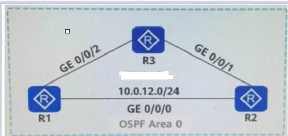
A. 仅 R2 开启负载分担功能
B. R1/R2/R3 都需要开启负载分担功能
C. 仅 R3 开启负载分担功能
D. 仅 R1 开启负载分担功能
答案：C
如图所示，某园区部署 OSPF，其中 Area1 部署为 NSSA 区域。若在 R3
的 OSPF 进程中引入静态路由实现对某外部网络的访问，则 R4 会自动发布
Type7LSA，并生成缺省路由实现对该外部网络的访问
A. 正确
B. 错误
答案：B
如图所示，路由器所有的接口开启 OSPF，若要实现 R5 与 R4
互访，则可以在 R2 和 R3 间建立 OSPF 虚连接

A. 正确
B. 错误
答案：A
某园区部 OSPF 实现网络互通，某工程师对 R2
做了如图所示配置，则以下关于 OSPF 网络内 LSA
的描述，正确的是哪一项?
A. Area0 内没有描述 R2-R4 互联网段的 3 类 LSA 泛洪
B. Area1 内没有描述 R1-R2-R3 互联网段的 3 类 LSA 泛洪
C. Area2 内没有描述 R2-R4 互联网段的 3 类 LSA
D. R4 与 R5 无法互访
答案：B
某路由器的 BGP
路由表中有一条路由如图所示，若路由器想过滤这条路由不发给其EBGp对等体，则以下哪一项不能实现该路由匹配需求
?
A. ACL: rule 5 deny source 10. 1. 1. 0 0. 0. 0. 255
B. AS-Path Filter: ipas-path-filter 1 deny2005
C. IpPrefix List: ipip-prefix aa index 10 deny10. 1. 1. 0 24
D. Communi ty Filter: ipcommuni ty-filter 100deny 101
答案：B
网管管理员A想使用 ACL 只配匹图中 1，3， 5，7 这四条
BGp路由条目，请问以下哪一项 ACL 规则可以实现该需求?
A. rule 5 permit source 10. 0. 1. 0 0.0.0.0
B. rule 5 permit source 10. 0. 1. 0 0.0.255.0
C. rule 5 permit source 10. 0. 1. 0 255.255.0.255
D. rule 5 permit source 10. 0. 1. 0 0.0.254.0
答案：D
OSPFv3 不支持在 OSPFv3 区域视图通过 network 命令使能接口的 OSPFv3
功能，只能在接口视图下使能 OSPFv3 功能
A. 正确
B. 错误
答案：A
如图所示路由器 R1 和 R2 之间建立了 BGp邻居来传递 IPv6
路由，以下哪个描述是正确的?
A. 若需要同时传递 IPv4 路由，则必须建立额外的 BGp邻居
B. 若 Update 报文中携带 MpREACHLRI
属性，则该报文用于发布可达路由及下一跳信息
C. Update 报文中的下一跳信息可以不包含 IPv6 全球单播地址
D. Update 报文会携带 AS Path.MpREACH NLRI，ORIGIN 等公认必遵属性
答案：B
根据图中的信息，以下哪个选项的推断是错误的 ?
A. R3 有可能是一台 Level1-2 路由器
B. R3 的 IS-IS 进程收到了其他路由器发送的 ISIS 报文
C. R3 上不存在任何 IS-IS 邻居
D. R3 上存在 IS-IS 进程
答案：C
如图所示，R1/R2/R3 运行 OSPF，管理员在配置 OSPF 时，误将 R1 和 R2
的 Router ID
配置相同，其它配置均正确，据此判断，以下描述中正确的是哪-项?
A. 由于 RouterID 冲突， R3 和 R1/R2 均不能建立邻居关系
B. 如果 R3 和 R1 先建立了邻居关系，则 R3 和 R2 不再建立邻居关系
C. R3 只能和 R1/R2 其中之一建立邻居关系，并且邻居关系处于震荡状态
D. R3 和 R1/R2 均能建立邻居关系
答案：D
如图所示的BGP/MPLSIPVPN 场景PE1 为BGp对等体 CE1 和CE3 配置了 So0
属性，当 PE1将从 CE1 学习的路由发送给 CE3 时会携带 So0
属性，从而避免路由环路。
A. 正确
B. 错误
答案：B
如图所示，某工程师利用 4 台路由器进行网络互通测试，其中 R1. R2.
R3 部署OSPF(Area0)实现网络互通， R2. R3. R4 部署 ISIS(均部署为 Level-2
路由器)实现网络互通。现在该工程师在 R1 的 OSPF 进程中引入直连路由，在 R2
的 IS.IS 进程中引入 OSPF
路由，则以下关于该场景的描述正确的是哪一项?
A. 此时 R3 可以访问 10. 1. 1. 1/32，因为 R3 的
Ip路由表中已有到达该地址的 OSPF 路由，是通过 OSPF 域内的 5 类 LSA
学习到的
B. 此时 R4 可以访问地址 10. 1. 1. 1/32，因为 R4
的路由表中已有到达该地址的 IS-IS 路由
C. 此时 R3 可以访问 10. 1. 1. 1/32，其访问路径为:R3-R1
D. 此时 R4 不可以访问 10. 1. 1. 1/32，因为 R1 上没有回程路由，需要在 R2
的 OSPF 进程中引入 IS-IS 路由，
答案：D
如图所示，路由器所有的接口开启 OSPF，链路的 Cost
值如图中标识。若在 R2 的 OSPF进程中通过命令 import-route direct type 1
入直连路由，则 RI 到达 10. 0. 2. 2/32 的 Cost 值是以下哪一选项 ?/
A. 150
B. 151
C. 200
D. 201
答案：C
如图所示，某园区网络中有 4 台路由器运行 OSPFv3 实现 IPv6
网络的互联互通。查看 R2 的 LSDB，截取了其中一条 Link-LSA。关于该 LSA
的描述，错误的是哪一项 ?
A. R2 接口 GEO/0/0 的链路本地地址为 :FE80 : :2E0 :FCFF:FECD :4F79
B. 该 LSA 显示 R2 不支持外部路由，但是参与 IPv6 的路由计算
C. R2 接口 GEO/0/0 的 IPv6 地址前缀:2001:DB8 : 2345 : 23 : :/64
D. 产生该 LSA 的路由器是 R2
答案：B
如图，某工程师利用 3 台路由器进行 IPv6 业务测试，他想要通过运行
OSPFv3 实现 IPv6网络的互联互通。其中关于该网络 DR
的选举，以下哪个描述是正确的 ?
A. 网络收敛后，R1 为 DR
B. 网络收敛后，该广播链路新增一台设备 R4，R4 的优先级为
150。网络再次收敛时， R4 为DR
C. 网络收敛后，工程师修改 RI 的优先级为 100，R2 的优先级为 10， R3
保持缺省值网络再次收敛时，R1 为 DR，R2 为 BDR
D. 网络收敛后 R1 断电重启，网络再次收敛时， R3 为 DR
答案：D
R3 与 RI 的 IS-IS
邻居没有建立，根据本图的信息，以下哪个选项中的推断是正确的?
A. R3 或 R1 配置了区域认证
B. R3 或 R1 的互联接口上配置了认证
C. R3 与 R1 的 System ID 重复
D. R3 或 RI 配置了路由域认证
答案：A
OSPFv3 不支持在 OSPFv3 区域视图通过 network 命令使能接口的 OSPFv3
功能，只能在接口视图下使能 OSPFv3 功能
A. 正确
B. 错误
答案：A
以下关于 IS-IS 快速收敛特性 I-SPF 和 PRC 的描述，正确的是哪一项
?
A. I-SPF 和 PRC 结合使用时，当 I-SPF 计算后的最短路径树改变，则 PRC
会计算那些变化节点上的路由信息
B. 当网络上路由发生变化的时候，I-SPF
只对发生变化的路由进行重新计算，不计算节点路径
C. 当网络拓扑改变的时候，PRC
只对受影响的节点进行路由计算，而不是对全部节点重新进行路由计算
D. I-SPF 和 PRC 结合使用时，当 PRC 计算后的最短路径树没有变化，则 I-SPF
只计算变化的路 由信息
答案：A
如图所示，某网络部署为 0SPF，所有路由器的接口开启
0SPF，以下关于该场景的描述，正确的是哪一项 ?
A. 此时通过命令 display ospf 1sdb 查看 R3 的 LSDB，在 Area1 的 LSDB
中不含 10. 0. 2. 2 的路由信息
B. 此时 R5 可以访问 10. 0. 2. 2/32 地址
C. 此时 R1 可以访问 10. 0. 2. 2/32 地址
D. 此时通过命念 display ospf 1sdb 查看 R4 的 LSDB，在 Area0 的 LSDB
中包含 10. 0. 22 的路由信息
答案：B
以下关于 OSPF 的 5 类 LSA 中的转发地址(
ForwardingAddress，FA)的描述，正确的是哪一项 ?
A. 当 FA 地址为 0. 0. 0. 0 时，收到该 LSA
的路由器认为到达目的网段的数据包应该发往对应的 ABR，因此将到达 ABR
的下一跳地址作为这条外部路由的下一跳
B. 当 FA 地址为 0. 0. 0. 0 时，收到该 SA
的路由器不会进行外部路由计算
C. 当 FA 地址不为 0. 0. 0. 0 时，收到该 LSA 的路由器的
Ip路由表中没有到达该地址的路由条 D. 当 FA 地址不为 0. 0. 0. 0 时，收到该
LSA 的路由器认为到达目的网段的数据包应该发往这个 FA
地址所标识的设备
答案：D
以下关于 OSPF 与 BFD 关动的描述，错误的是哪一项?
A. 若没有配置 oSPF 与 BFD 联动，OSPF 可以通过 Dead
定时器超时来感知链路故障
B. 若配置 OSPF 与 BFD 联动，可以通过 BFD 会话状态 Down
实现链路故障检测
C. 若配置 OSPF 与 BFD 联动，OSPF 邻居状态到达 2-Way 状态时通知 BFD 建立
BFD 会话
D. 若配置 OSPF 与 BFD 关动，两台设备间的链路出现故障后，BFD
会感知故障并通知 0SPF 路由器重新进行路由计算
答案：C
以下关于 OSPF 特殊区域的缺省路由的描述，错误的是哪一项 ?
A. 在 NSSA 区域中，可以在 ASBR 上通过命令产生一条描述缺省路由的?类
LSA，用于该区域内的设备通过 ASBR 访问外部网络
B. 在 Totally Stub 区域中， ASBR 会自动产生-条描述缺省路由的 5 类
LSA，用于该区域内的设备通过 ASBR 访问外部网络
C. 在 Totally NSSA 区域中， ABR 会自动产生一条描述缺省路由的 3 类
LSA，用于该区域内的设备通过 ABR 访问外部网络
D. 在 Stub 区域中， ABR 会自动产生一条描述缺省路由的 3 类
LSA，用于该区域内的设备通过 ABR 访问外部网络
答案：B
根据图中的信息，以下哪个选项中的推断是正确的 ?
A. R3 一定是 Leve1-1-2 级别的 IS-IS 路由器
B. R3 一定是 Leve1-1 级别的 IS-IS 路由器
C. 无法判断 R3 的 IS-IS 路由器级别
D. R3 一定是 Leve1-2 级别的 IS-IS 路由器
答案：A
根据图中的信息，以下哪个选项中的推断是错误的 ?
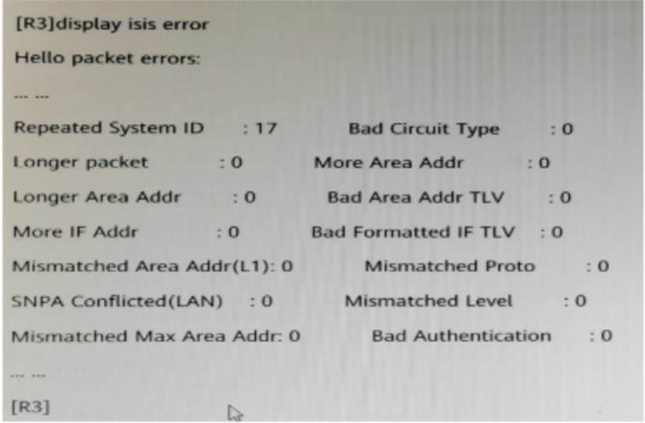
A. R3 上存在 IS-IS 进程
B. R3 与邻居的 System ID 重复
C. R3 一共收到了 17 个其他路由器发来的 ISISHe11o 报文
D. R3 上可能存在 IS-IS 邻居
答案：B
在配置基于 VLAN 的 MAC 地址漂移检测功能后，如果 AC
地址发生漂移时，则可根据需求配置接口做出的动作。下列哪个不是可以配置的动作
?
A. MAC 地址阻塞
B. 发送告警
C. VLAN 阻赛
D. 接口阻断
答案：C
相比于 MPLS 本地 LDp会话，MPLS 远端
LDp会话需要额外完成以下哪一项配置 ?
A. 配置 MPLSLDp远端对等体的 Ip地址
B. 全局使能 MPLS
C. 配置 LDp传输地址
D. 配置 MPLS MTU
答案：A
在域内 PLS VPN 网络中，存在 PE1 与 PE2 两台设备进行 MPLSVPN
的数据转发，PE1 从客户端收到了一条 172. 16. 1. 0/24 的私网路由，在 PE1
上转变为 VPNw4 备由并分配标签为 1072发布给 PE2。 PE1 到达 PE2 的
WPLSLSRID 的出标签为 1025PE2 到达 PE1 的 MPLSLSR-ID 的出标签为 1052。当
PE2 对应的客户端访问 172. 16. 1. 0/24 时， PE2
发送的数据顿，内外层标签应为以下哪一项?
A. 外层标签:1025;内层标签 :1072
B. 外层标签:1072;内层标签 :1052
C. 外层标签:1052;内层标签 :1072
D. 外层标签:1072;内层标签 :1025
答案：C
在 BGP/MPLSIP VPN 场景下，当 CE 与 PE 之间运行 EBGp时，在 CE
上执行以下哪一条命令，可以查看 BGp邻居关系的状态?
A. display bgpvpnv4 all peer
B. display bgprouting
C. display bgppeer
D. display bgpsession
答案：C
以下关于 BGP/MPLSIPVPN 路由交互的描述，错误的是哪一项?
A. 出口 PE 在接收到入口 PE 发的 vPN.4 路由之后，根据路由携带的 Export Rr
属性，对 VPNv4 路由进行过滤
B. PE 与 CE 之间交互的是 IPv4 路由信息
C. 入口 PE 将从 CE 接收到的 IPv4 路由变成 VPNv4 路由，并根据不同 VPN
实例进行保存
D. 出口 PE 将 VPNv4 路由发送给入口 PE 时，需要同时携带 Export RT 和
Import RT
答案：D
在 BGP/MPLSIP VPN 场景中，MCE 与 PE
之间不能采用以下哪一项协议交互路由 ?
A. RIP
B. OSPF
C. MP-BGP
D. IS-IS
答案：C
在路由器 R1 上执行操作 :ping-a10. 1. 1. 1c310. 2. 22
以下关于该操作的描述，正确的是哪一项?
A. 10. 1. 1. 1 必须是路由器 R1 上的接口地址，否则会报错
B. 该 Ping 操作的目的地址是 10. 1. 1. 1
C. 该 Ping 操作会默认发送 5 次 ICMPEchoRequest 报文
D. 该 Ping 操作的下一跳是 10. 222
答案：A
以下关于 OSPF 邻居状态的描述，错误的是哪一项 ?
A. 停滞于 Init 状态表明路由器收到了邻居的 He11。报文，但
He11。报文中没有包含本路由器的 OSPF RouterID
B. 对于以太网链路上的一对 DR Other，停滞于 2-Way 状态是正常的
C. 停滞于 ExStart 状态可能是邻居路由器之间的 MTU 不匹配
D. 停滞于 2-Way 状态可能是邻居路由器之间的 Router ID 冲突
答案：D
如图所示的 PIM-SM 组播网络， R3 为 Rp所有路由器运行
0SPF，且每条链路的 Cost 值相等，其他参数为默认值，则 Receiver1
接收组播数据流的稳定路径是以下哪一项 ?
A. Source1-R1-R3-R4-Receiver1
B. Source1-R1-R4-Receiver1
C. Source1-R1-R2-R3-R4-Receiver1
D. Source1-R1-R2-R4-Receivorl
答案：A
如图所示， R1/R2/R3 运行 0SPF，管理员在配置 osPF 时，误将 R1 和
R2 的 RouterID
配置相同其它配置均正确，据此判断，以下描述中正确的是能一项?
A. R3 只能和 R1/R2 其中之一建立邻居关系并且邻居关系处于震荡状态 O 如果
R3 和 R1 先建立了邻居关系，则 R3 和R2 不再建立邻居关系OR3 和 R1/R2
均能建立邻居关系O 由于RouterID冲突， R3 和 R1/R2 均不能建立居关系
B. 如果 R3 和 R1 先建立了邻居关系，则 R3 和 R2 不再建立邻居关系
C. R3 和 R1/R2 均能建立邻居关系
D. 由于 RouterID 冲突， R3 和 R1/R2 均不能建立邻居关系
答案：C
在排除 VRRp备份组双主故障时，下列哪项描述是错误的 ?
A. 需要检查接口上的 VRRp组 ID 是否相同
B. 需要检查 VRRp组的虚拟 Ip地址是否相同
C. 不需要检查传递 VRRp通告报文的交换机端口，是否在同一个 VLAN
D. 需要检查接口 Ip地址是否在同一网段
答案：C
如图所示，某网络所有路由器运行 0sPF，若在 R2 的 Area1 视图下配置
tilter import 命令，使 R2 不向 Area1 发送三类 LSA，则 R1
仍然可以访问
A. 正确
B. 错误
答案：B
OSPFv3 的 Link LSA 仅在始发链路内泛洪，且仅用于通告 Link-Loca1
地址信息
A. 正确
B. 错误
答案：B
某园区部署了 IPv6 进行业务测试，部署初期，工程师想要通过 IPv6
静态路由实现网络互通。在创建 IPv6
静态路由时，必须同时指定出接口和下一跳。
A. 正确
B. 错误
若在同一台路由器同时创建 OSPFv2 和 OSPFv3
进程，并在相同的接口使能 oSPFv2 和 0SPFv3
功能。那么在缺省情况下，这两个进程使用相同的拓扑进行 SPF 计算
A. 正确
B. 错误
答案：B
传统的BGP-4 只能管理 IPv4
单播路由信息，MP-BGp为了提供对多种网络层协议的支持，对 BGP-4
进行了扩展。其中，MP-BGp对 IPv6 单播网络的支持特性称为 BGP4+， BGP4+通过
PREACHNLRI 属性携带路由下一就地堆信息
A. 正确
B. 错误
答案：A
MPLS 标签值为 0 表示该标签必须被弹出且报文的转发必须基于
IPv4。
A. 正确
B. 错误
答案：B
网络运维人员可以通过 VTY 的方式远程登录设备，查看 Log.Trap.Debug
等信息，以实现远程设备维护。
A. 正确
B. 错误
答案：A
为方便割接回退以及割接之后对比业务是否正常，在正式开始剖接之前需要对现网配置
.现网数据再进行一次快照。
A. 正确
B. 错误
答案：A
以下关于 0SPF 与 BFD 联动的描述，错误的是哪一项?
A. 若配置 OSPF 与 BFD 联动，OSPF 邻居状态到达 2-Way 状态时通知 BFD 建立
BFD 会话
B. 若没有配置 0sPF 与 BFD 联动，OSPF 可以通过 Dead
定时器超时来感知链路故障
C. 若配置 OSPF 与 BFD 联动，两台设备间的链路出现故障后，BFD
会感知故障并通知 0SPF 路由器重新进行路由计算
D. 若配置 OSPF 与 BFD 关动，可以通过 BFD 会话状态 Down
实现链路故障检测
答案：A
如图所示，在中型网络中，BGP 为了提高 RR 可靠性，一般会部署双
RR。在部署双 RR
一般会将两个 RR
的以下哪一项数值设置一致，以防止际接收过多路由导致内存不足?
A. Router ID
B. IBGp邻居数
C. Originator ID
D. Cluster ID
答案：D
如图:某工程师利用 3 台路由器进行 IPv6 业务测试，他想要通过运行
0SPFv3 实现 IPv6 网络的互联互通。其中关于该网络 DR
的选举，以下哪个描是正确的 ?
A. 网络收敛后，R1 为 DR
B. 网络收敛后，该广播链路新增一台设备 R4，R4 的优先级为
150。网络再次收敛时， R4 为 DR
C. 网络收敛后，工程师修改 R1 的优先级为 100，R2 的优先级为 10， R3
保持缺省值网络再次收敛时，R1 为 DR，R2 为 BDR
D. 网络收后 R1 断电重启，网络再次收敛时， R3 为 DR
答案：D
关于在 IS-Is 协议视图下执行 ipv6 enabletopologyipv6
的含义，以下哪个选项的描述是正确的?
A. 不支持 IPv6 的 SPF 计算
B. SPF 计算在 IPv4. IPv6 的拓扑中单独进行
C. IPv4. IPv6 采用同一个拓扑进行 SPF 计算
D. 该 IS-IS 进程只进行 IPv6 路由计算，不支持 IPv4 路由计算
答案：B
交换机的端口安全特性支持的保护动作不包括以下哪一项 ?
A. Shutdown
B. Trap
C. Restrict
D. Protect
答案：B
以下关于多实例 CE(MultiVPN-InstanceCE，MCE)的描述，错误的是哪一项
?
A. 当 MCE 与 PE 使用 BGp传递 VPN 路由时 MCE 与 PE 之间需要建立
MP-BGp邻居关系
B. 具有 MCE 功能的设备可以在 BGP/MPLSIPVPN 应用中接入多个 VPN
实例，减少用户网络设备的投入
C. 缺省情况下，多个 VPN 实例在 MCE 上相互隔离
D. 在 MCE 设备上需要为不同的 VPN
创建各自的路由转发表，并绑定到对应的接口
答案：A
在 BGP/MPLSIPVPN 场景下，当 CE 与 PE 之间运行 EBGp时，在 CE
上执行以下哪一条命令，可以查看 BGp邻居关系的状态?
A. display bgprouting
B. display bgpvpnv4 all peer
C. display bgppeer
D. display bgpsession
答案：C
以下关于 MPLS 的标签空间的描述，错误的是哪一项 ?
A. 1024 以上是 LDP.RSVPTE.MP-BGP 等动态信令协议共享的标签空间
B. 倒数第二跳 LSR 进行标签交换时，如果发现交换后的标签值为
3，默认情况下将标签弹出，并将报文发给最后一跳
C. 如果出标签值为 0，则路由器会将该报文直接丢弃
D. 16~1023 是静态 LSp和静态 CR-LSp共享的标签空间
答案：C
如图所示的 BGP/MPLSIPVPN 场景，CE 和 PE 之间运行 OSPF 协议，当
PE1 的域标识符为 NULL，在以下哪种场景下 PE2 将会向 CE2 发送 Type7LSA
?
A. PE2 的域标识符为 NULL，且 PE2 与 CE2 的区域类型为 NSSA
B. PE2 的域标识符为 NULL，且 PE1 与 CE1 的区域类型为 NSSA
C. PE2 的域标识符为 200，且 PE1 与 CE1 的区域类型为 NSSA
D. PE2 的域标识符为 200，且 PE2 与 CE2 的区域类型为 NSSA
答案：D
以下关于 BGP/MPLSIPVPN 数据转发的描述，错误的是哪一项?
A. PE 发给 p的报文为 IPv4 报文
B. 数据转发时的内层标签由 MP-BGp分配
C. PE 发给 CE 的报文为 IPv4 极文
D. 数据转发时的外层标签可由 LDP 分配
答案：A
通这在交换机 S]上热有或食点 sngymac-addressflapping record
可以查看 5W1 上所有的 MAC 地址漂移的记录。如图所示，MAC 地址
0000-0000-0007 可能发生过几次地址漂移?
A. 65534
B. 65536
C. 300
D. 65535
答案：D
在路由器 R1 上执行操作 :ping-a10. 1. 1. 1-c310. 2.
22，以下关于该操作的描述，正确的是哪一项?
A. 该 Ping 操作的目的地址是 10. 1. 1. 1
B. 该 Ping 操作会默认发送 5 次 ICMPEchoRequest 报文
C. 10. 1. 1. 1 必须是路由器 R1 上的接口地址，否则会报错
D. 该 Ping 操作的下一跳是 10. 222
答案：C
在路由器 R1 上执行操作 :ping-a10. 1. 1. 1-c310. 2.
22，以下关于该操作的描述，正确的是哪一项?
A. 该 Ping 操作的目的地址是 10. 1. 1. 1
B. 该 Ping 操作会默认发送 5 次 ICMPEchoRequest 报文
C. 10. 1. 1. 1 必须是路由器 R1 上的接口地址，否则会报错
D. 该 Ping 操作的下一跳是 10. 222
答案：C
在排除 VRRp备份组双主故障时，下列哪项描述是错误的 ?
A. 需要检查接口 Ip地址是否在同一网段
B. 需要检查 VRRp组的虚拟 Ip地址是否相同
C. 需要检查接口上的 VRRp组 ID 是否相同
D. 不需要检查传递 VRRp通告报文的交换机端，是否在同一个 VLAN
答案：D
在 0SPF 中，若 NSSA 区域与骨干区域间有多个 ABR，则会自动选择
RouterID 最小的 ABR 实现 7 类 LSA 转化为 5 类 LSA
A. 正确
B. 错误
答案：B
缺省情况下，所有 BGp路由都属于 Internet 团体，即不可以向任何
BGp对等体发送该 Gp路由，可以通过手动修改 Community
属性，向对等体传递该路由，以有效控制 BGp路由的传递。
A. 正确
B. 错误
答案：B
在 BGp网络中，将一台 BGp路由器指定为 RR 时，还需要在 RR
设备上指定其 Client，同时在 C1ient 设备上也需要指定其对应的 RR
设备
A. 正确
B. 错误
答案：B
IS-Is 新增了一个 TLV 携带 IPv6 地址和可达信息来支持 IPv6
路由的处理和计算。
A. 正确
B. 错误
答案：B
BGP4+通过Update 报文中的 MPUNREACHNLRI
属性不会携带要撤销的路由的下一跳信息。
A. 正确
B. 错误
答案：A
若在同一台路由器同时创建 0SPFv2 和 OSPFv3
进程，并在相同的接口使能 osPFv2 和 OSPFv3
功能。那么在缺省情况下，这两个进程使用相同的拓扑进行 SPF 计算。
A. 正确
B. 错误
答案：B
以太网中部署端口隔离技术可以实现二层隔离三层互通，隔离同一 VLAN
内的广播报文。
A. 正确
B. 错误
答案：A
以下关于 IS-Is Wide Metric 特性的描述错误是是哪一项?
A. 当配置开销类型为 compatible 的时候，会按照 narrow 类型和 wide
类型分别发送一份信息
B. 该特性通过 IS-IS 扩展 TLV 实现
C. IS-IS 路由器的默认接口开销类型为 narrow
D. 若两台IS-IS 路由器互联接口配置的开销类型分别为 Wide
和narow，他们可以正常交互IS-IS 报文进行路由计算
答案：D
某台路由器运行
0SPF，其输出信息如图所示，以下关于该场景的描述，正确的是哪一 项?
A. 若 OSPF 网络中要撤销该 LSA，则会将 LSA 中的 LSAge 设为 3600
并重新通告
B. 该路由器在区域 0 中通过 network 命令通告了网段 10. 0. 23. 0
C. 该 LSA 中 Link State ID 描述的是外部路由的目的网络地址
D. 产生该 LSA 的路由器的 RouterID 为 10. 0. 12. 1
答案：A
在 BGp网络中，若某设备 R1 只想接收部分需要的路由，但对端设备 R2
又无法针对 R1
的需求维护出口策略，则此时可以通过以下哪一项功能实现该需求?
A. Community Filter
B. 路由聚合
C. ORF
D. BGp认证
答案：C
某企业购买了两家运营商的专线，为了优化线路，企业使用
BGp协议学习了两家运营商的路由条目。但是企业发现如此配置后，出口路由器的流量大增，网络工程师排查后发现企业出口路由器相互传递了两家运营商的流量。该企业在出口路由器上通过配置如图所示的路由策略，可以实现不同运营商之间的流量不再相互传递。
A. 正确
B. 错误
答案：A
某 BGp路由携带的 ASPath 属性中的源自治系统号为
AS200，若该路由经由 AS300 中的
BGp路由器发出，则以下哪一项正则表达式可以匹配到该条路由 ?
A. 200 3005
B. 200*
C. 300 2005
D. 30. 200
答案：C
当 BGP4+发布 IPv6 单播路由时，MPREACH-NLRI 中的 AFI 和 SAFI
字段的取值是哪一项 ?
A. AFI :1，SAFI1
B. AFI : 2 , SAFI : 1
C. AFl : 2,SAFl : 2
D. AFI : 2，SAFI : 3
答案：B
某园区部署了 IPv6 进行业务测试，该网络中有 4 台路由器(R1. R2. R3
和 R4)，运行 0SPFv3 实现 IPv6 网络的互联互通。有一台新的路由器 R5
需要接入网络进行测试，某工程师通过在 R4 的 0SPFv3
进程中引入直连路由，实现园区网内的设备能够访问 RS 的 GEO/0/1
口地址。关于该场景的描述，错误的是哪一项?
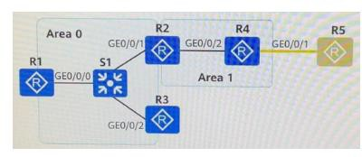
A. R4 会生成一个 Type5 LSA 只在 Area 1 内泛洪
B. R4 会生成一个 Type5 LSA 描述引入的 IPv6 路由前缀
C. R2 会生成一个 Type4LSA 描述 R4 的 RouterID
D. R2 会生成一个 Type4 LSA 只在 Area 0 内泛洪
答案：A
关于 BGP4+，以下哪一个描述是正确的 ?
A.
BGP4+在撤销某一条路由时，会携带该路由的下一跳信息，明确具体撤销的路由条目
B. B6P4+通过 LRI 属性携带 IPv6 路由的前缆以及掩码长度
C. BGP4+通过 MP REACHNLRI 属性携带路由的下一跳地址
D. BGP4+通过 IEXTHOp属性携带 IPv6 路由的下一跳地址
答案：C
ISIS 是链路状态路由协议，使用 S
平算法进行路由计算。如图所示，某园区同时部署了 IPv4 和 IPv6 并运行 IS-IS
实现网络的互联互通，其中 R2 只支持
IPv4。关于该网络的拓扑计算，以下哪个描述是正确的 ?
A. 缺省情况下，由于 R2 不支持 IPv6，因此 IPv6
网络计算形成的最短路径树中， RI 访问 R4 的路径为:R1-R3-R4
B. 缺省情况下，IPv4 和 IPv6 网络会各自计算形成不同的最短路径树
C. 若希望 IPv4 和 IPv6 拓扑独立进行 SPF 计算需要通过 ipv6 enable
topologyipv6 命令使能IS-IS 进程下 IPv6 的能力
D. 续省情况下，TPv6 网络计算形成的最短路径树中， R1 访问 R4
的路径为:R1-R2-R4 由于 R2 不支持 IPv6，因此 R2 收到 IPv6
报文后会直接丢弃，造成流量丢失，可以通过配置 R2，使得其他路由器在计算
SPF 时，在 IPv6 数据转发路径中屏蔽 R2。
答案：C
MACsec
定义了基于以太网的数据安全通信的方法，通过逐跳设备之间据加密，保证数据传输安全性，对应的标准为
802. 1AE。
A. 正确
B. 错误
答案：A
下列哪个关于 MUXVLAN 的描述是错误的 ?
A. 每个 SeparateVLAN 必须绑定一个 PrincipalVLAN
B. Separate VLAN 可以和 MUX VLAN 内所有 VLAN 通信
C. 每个 GroupVLAN 必须绑定一个 PrincipalVLAN
D. PrincipalVLAN 可以和 MUXVLAN 内所有 VLAN 通信
答案：A
对于同一个 MAC 地址，手工配置的 MAC
表项优先级高于动态的表项，某二层报文的源 MAC 地址已经绑定在了交换机的
GEO/0/1 接口，当交换机从 GEO/0/2 收到该报文时，会丢弃该报文
A. 正确
B. 错误
答案：A
以下关于 0SPF Sham Link 的描述，错误的是哪一项?
A. 为了使 VPN 流量通过 MPLSVPN 骨千网转发，Sham Link 的路由开销应小于
Backdoor 链路的 OSPF 路由开销
B. Sham Link 被看成是两个 VPN 实例之间的销路，每个 VPN 实例中必须有一个
Shan Link 的端点地址，它必须是 PE 路由器上 VPN 地址空间中的一个有 32 bit
掩码的 Loopback 接地址
C. Shan Link 的端点地址被 MP-BGp作为 VPNv4 地址发布
D. 同一个 0SPF 进程的多条 Sham Link 可以共用端点地址，不同 0SPF
进程可以拥有两条端点地址完全相同的 Sham Link
答案：D
当部署 PLS/BGPIPVPN 时，以下关于 PE-CE 之间使用
BGp交互路由信息的描述，错误的是哪一项?
A. 当 PE 与 CE 间采用 BGp交互路由信息时，若两个 VPN
站点所处的自治系统使用的是相同的私有 AS 号，可以通过 AS 号替换功能，防止
CE 因 AS 号重复而导致路由被丢弃
B. 在 Hub Spoke 场景下，当 Hub-CE 与 Hub-PE 之间部署 EBGp时，Spoke-PE 与
Spoke.CE 之 间可以部署 OSPF
C. 在 CE 多归属的情况下，使能 BGpAS 号替换功能可能引起路由环路，可以通过
BGPSo0防止 VPN 站点内路由环路，PE 会为从 CE 收到的路由添加 So0
属性并发布给所有 BGp对等体
D. 当 PE 与 CE 间采用 BGp交互路由信息时，不需要在 PE 上执行私网路由引入
BGp的操作
答案：C
在 Hub Spoke 场景下，部署 BGP/MPLSIPVPN 当 Spoke-PE 与 Spoke-CE
使用 EBGP， Hub-CE 与 Hub-PE 可以使用以下哪种方式交互路由 ?
A. IS-IS
B. EBGP
C. OSPF
D. Static
答案：B
BGP/IPLSIPVPN 中，如果 PE-CE 之间使用 OSPF 交互路由信息，当 PE 把
BGp传来的远端路由向 CE 发布时，如果本地的域标识符与
BGp路由信息中携带的远端域标识符相等，则生成 Type2 LSA 或
Type3LSA。
A. 正确
B. 错误
答案：B
以下关于 BGP/MPLSIPVPN 网络架构的描述，错误的是哪一项?
A. PE 与 CE 之间交互 IPv4 路由
B. BGP/IPLS IPVp网络架构由 CE( CustomerEdge ) .PE ( Provider Edge ) 和
p( Provider) 三种角色组成，一台网络设备只能作为其中一种角色
C. 一般情况下，CE 设备感知不到 VPN 的存在，且 CE 设备不需要支持
PLS.MP-BGF
D. p设备只需要具备基本 MPLS 转发能力，不维护 VPN 相关信息
答案：B
部署 BGP/MPLSIPVPN 时，如果某一个 PE 只连接了一个
CE，此时不存在私网 Ip地址冲突的问题，因此 PE 设备无需创建 VPN
实例。
A. 正确
B. 错误
答案：B
某网络设备接口出现了大量错包，并且在短时间内不断增加，网络运维人员可以通过
displayinterface 检查接口运行情况，如 CRC 错包。
A. 正确
B. 错误
答案：A
以下关于结构化的网络故障排除流程的描述，正确的是哪一项 ?
A. 以业务路径为核心，逐段排除网络故障
B. 以网络设备厂商作为依据，将网络故障原因归结于其他厂商的设备
C. 以业务路径为核心，将路径上的每台网络设备重启，尽快恢复业务
D. 以经验为核心，凭感觉排除网络故障
答案：A
在排除 VRRp备份组双主故障时，下列哪项描述是错误的 ?
A. 需要检查接口上的 VRRp组 ID 是否相同
B. 不需要检查传递 VRRp通告报文的交换机端口，是否在同一个 VLAN
C. 需要检查接口 Ip地址是否在同一网段
D. 需要检查 VRRp组的虚拟 Ip地址是否相同
答案：B
割接前后的信息采集结果是否相同是判断割接成功与否的唯一依据。
A. 正确
B. 错误
答案：B
如图所示，AS101 中部署了 4 个集群，每个集群中部署了一台 RR
设备及其客户机，各集群的 R 互为客户机关系，并建立全连接。若 clientl
中引入 10 条路由，假设 BGp的配置正确，邻居关系已全部建立则 RR4 的
BGp路由表中存在几条路由条目 ?
A. 30
B. 40
C. 10
D. 20
答案：A
关于 0SPFv3 的 Router-ID
的生成方式，下列描述正确的是哪一项?
A. 必须手动配置 Router-ID
B. 进程自动选择最大的物理接口的 IPV4 地址作为 Router-ID
C. 进程自动选择最大的 LoopBack 接口的 IPv4 地址作为 Router-ID
D. 进程自动选择最小的 LoopBack 接口的 IPv4 地址作为 Router-ID
答案：A
除了虚连接之外，0SPFv3 的 Hello 报文目的 IPv6 地址是哪种类型的
IPv6 地址?
A. 全球单播地址
B. IPv6 组播地址
C. 链路本地地址
D. IPv6 任播地址
答案：B
根据图中的信息，以下哪个选项中的推断是正确的 ?
A. R1 配置了区域认证 B. R1 配置了路由域认证 BL
C. R1 的设备类型是 Level-1-2
D. R1 的设备类型是 Level-2
答案：D
关于 OSPFv3 报文，以下哪个描述是正确
A. 可以在 OSPFv3 报文后增加认证尾部字段携带认证信息以完成报文认证
B. OSPFv3
使用链路本地地址作为发送报文的源地址，报文可以被转发到始发链路范围之外
C. OSPFv3 使用 IPv6 组播地址 FFO2::1 和 FFO2:: 2 发送 OSPFv3 报文
D. 0SPFv3 的 Hel1o 报文携带了路由器所有接口的 IPv6 地址
答案：C
交换机的端口安全特性支持的保护动作不包括以下哪一项 ?
A. Restrict
B. Trap
C. Protect
D. Shutdown
答案：B
QinQ 技术是一项扩展见 VLAN 空间的技术，通过在 802. 1Q
标签报文的基础上再增加一层 802. 1Q 的 Tag 来达到扩展 VLAN
空间的功能。下列哪-个关于 QinQ 的描述是错误的 ?
A. QinQ 技术可以使私网 LA 在公网上透传
B. 灵活 0inQ 可以根据报文优先级 .AC 地址.Ip协议.Ip源地址
.Ip目的地址来打上对应的外层 LA 标签，对于用户 VLAI 的划分更加细致
C. QinQ 使A的数量增加到 4094*4094
D. 基本 QinQ 仅支持基于接口或内层 V 机标签而加上外层标签
答案：C
若使能了端口安全功能后，缺省情况下接口学习的 AC
地址数量是多少?
A. 5
B. 1
C. 15
D. 10
答案：B
二层接入设备使能了 DHCP Snooping
功能后，从以下哪种报文中获取信息并生成 DHCPSnooping 绑定表?
A. DHCpDISCOVER
B. DHCpOFFER
C. DHCPACK
D. DHCpREOUEST
答案：C
在域内 IPLSVPN 网络中，存在 PE1 与 PE2 两台设备进行 PLSVPN
的数据转发，PE1 从客户端收到了一条 172. 161. 0/24 的私网路由，在 PE1
上转变为 VPINv4 路由并分配标签为 1072发布给 PE2。 PE1 到达 PE2 的 IPLS
LSR-ID 的出标签为 1025，PE2 到达 PE1 的 PLSLSRID 的出标签为 1052。当 PE2
对应的客户端访问 172. 16. 1. 0/24 时，PE2
发送的数据，内外层标签应为以下哪一项 ?
A. 外层标签;1025;内层标签 ;1072
B. 外层标签:1072;内层标签 :1025
C. 外层标签:1072;内层标签 :1052
D. 外层标签:1052;内层标签 :1072
答案：D
以下关于 BGP/PLSIPVPN 路由交互的描述，错误的是哪一项?
A. PE 与 CE 之间交互的是 IPv4 备由信息
B. 出口 PE 在接收到入口 PE 发布的 VPNw4 路由之后，根据路由携带的 Export
RI 属性，对 BVPNw4 路由进行过滤
C. 入口 PE 将从 CE 接收到的 IPv4 备由变成 VPNv4 路由，并根据不同 VPN
实例进行保存
D. 出口 PE 将 VPNv4 各由发送给入口 PE 时，需要同时携带 Export RT 和
Import RT
答案：D
以下关于 MPLS 的描述，正确的是哪 -项?
A. MPLS 本身是一种隧道技术，既能用于传递 4
路由信息，又能用于转发数据包
B. MPLS 转发速度比 Ip转发快，因此在现网中 6 广泛使用
C. 在 BGP/IPLSIPVPN 汤景中， PE 发出的数 c
据包最多只能携带两层标签
D. MPLS 支持多种网络层协议，例如 IPv4. IPv6
答案：D
在 HuSpke 场景下，部署 BGP/IPLSIPVPN，当 spoke-PE 与 Spoke-CE
使用 E8GP，IhlbCE 与地 b-E 可以使用以下哪种方式交互路由 ?
A. ISIS
B. Static
C. EBGP
D. OSPF
答案：C
在网络监控管理方式中，以下哪一项功能不可以实现对网络流量的监控管理
?
A. 镜像
B. sF1ow
C. NetStream
D. Syslog
答案：D
割接前现网动态数据采集不包括哪项 ?
A. 路由协议状态
B. MAC 地址表项
C. ARp表项
D. 日志数量
答案：D
以下哪项不属于割接方案的前期准备 ?
A. 输出实施方案
B. 割接目标
C. 现网概述
D. 割接前快照
答案：D
0SPFv3 的 RouterlD 必须要手动配置，且长度为 128bit
A. 正确
B. 错误
答案：B
IS-IS 新增了一个 TLV 携带 IPv6 地址和可达信息来支持 IPv6
路由的处理和计算。
A. 正确
B. 错误
答案：B
在 ISIS 协议视图下配 ipv6 preference 该命令的作用是配置 IS-IS
协议生成的 IPv6 路由的优先级，缺省情况为 10。
A. 正确
B. 错误
答案：B
MPLS 标签值为 0 表示该标签必须被弹出且报文的转发必须基于
IPv4。
A. 正确
B. 错误
答案：B
在 MPLS
网络中，每台设备依然要遵循最长匹配原则，即每台设备都要有到达目的
IP地址的路由，否则网络设备会丢弃收到的 MPLS 报文。
A. 正确
B. 错误
答案：B
当部署 BGP/MPLSIPVPN 时，如果 PE 和 CE 之间使用 0SPF
交互路由，为避免出现路由环路，PE 之间在传递 VPN 路由时需要同时携带 VPIW
RouteTag 和 Domain ID。
A. 正确
B. 错误
答案：B
isis si1ent 命令用来配置 1S-IS
接口为抑制状态，即抑制该按口接收和发送 IS-1S
报文，但此接口所在网段的路由可以被发布出去。
A. 正确
B. 错误
答案：A
以下关于命令“display current-confiquration linclude
arp”的含义的描述，正确的是哪项 ?
A. 查看所有包含“arp”关键字的配置
B. 查看所有的静态 ARp表项
C. 查看 ARp表项的统计信息
D. 查看所有的动态 ARp表项
答案：A
以下哪项不属于割接的硬件准备事项 ?
A. 上电测试
B. 检查风扇与电源模块运行情况
C. 设备 License 是否到位
D. 线缆连通性测试两端对齐
答案：A
某园区部署 IS-IS 实现网络互通，在所有 IS-IS
路由器的进程中配置命令 flash-flood 6max-timer-interval100 Level-2.
则以下关于该场景的描述，正确的是哪一项?
A. 若某 IS-IS 路由器 LSDB 内更新的 LSp数最为 A110，则在 5
毫秒内且路由计算完成后，该设备会立即扩散这 10 个 LSP
B. 若某 IS-IS 路由器 LSDB 内更新的 LSp数量为 B90，则在 5
毫秒内且路由计算完成后，该设备会立即扩散这 90 个 Lsp
C. 若某 IS-IS 路由器 LSDB 内更新的 LSp数量为 5，则在 100
毫秒内且路由计算完成前，该设备会立即扩散这 5 个 LsP
D. 若某 IS-IS 路由器 LSDB 内更新的 LSp数量为 7，则在 100
毫秒内且路由计算完成前，该设备会立即扩散这 7 个 LSP
答案：C
以下关于 0SPF 与 BFD 联动的描述，错误的是哪一项?
A. 若配置 0SPF 与 BFD 联动，两台设备间的链路出现故障后，BFD
会感知故障并通知 AOSPF 路由器重新进行路由计算
B. 若配置 0SPF 与 BFD 关动，OSPF 邻居状态到达 2-Wav 状态时通知 BFD 建立
BFD 会话
C. 若配置 0sPF 与 BFD 联动，可以通过 BFD 会话状态 Down
实现链路故障检测
D. 若没有配置 OSPF 与 BFD 联动，SPF 可以通过 Dead
定时器超时来感知链路故障
答案：B
以下关于 ISIS 快速收特性 ISPF 和 PRC 的描述，正确的是哪一项
?
A. 当网络拓扑改变的时候，PRC
只对受影响的节点进行路由计算，而不是对全部节点重新进行路由计算
B. ISPF 和 PRC 结合使用时，当 PRC 计算后的最短路径树没有变化，则 I-SPF
只计算变化的路由信息。
C. 当网络上路由发生变化的时候，I-SPF
只对发生变化的路由进行重新计算，不计算节点路径
D. I-SPF 和 PRC 结合使用时，当 I-SPF 计算后的最短路径树改变，则 PRC
会计算那些变化节点上的路由信息
答案：D
当 OSPF 网络中有多条余链路时，可能会出现多条等价路由。若在 OSPF
路由器上配置命令 maximum
1oad-balancing2，则以下关于等价路由的描述，正确的是哪一项 ?
A. 当组网中存在的等价路由数量大于 2，则优选下一跳设备 Router ID
大的路由进行负载分担
B. 当组网中存在的等价路由数量大于
2，则会随机选取有效路由进行负载分担
C. 当组网中存在的等价路由数量大于
2，则无法进行负载分担，流量将被丢弃
D. 当组网中存在的等价路由数量大于
2，则会优选设备跳数少的路由进行负载分担
答案：A
当 BGP4+发布 IPv6 单播路由时 PFEACHNLRI 中的 AF 工和 SAFI
字段的取值是哪一项 ?
A. AFI :1，SAFT1
B. AFI : 2 , SAFI : 1
C. AFI : 2 , SAFI : 3
D. AFI : 2 , SAFI : 2
答案：B
关于 0SPFv3 报文，以下哪个描述是正确的 ?
A. 可以在 OSPFV3 报文后增加认证尾部字段携带认证信息以完成报文认证
B. 0SPFv3 的 Hel1。报文携带了路由器所有接 8 口的 IPv6 地址
C. 0SPFv3
使用链路本地地址作为发送报文的源地址，报文可以被转发到始发链路范围之小
D. OSPFv3 使用 IPv6 组播地址 FFO2: :1 和 FFO2:: 2 发送 OSPFv3 报文
答案：D
以下哪一选项不是 0SPFv3 中 Link-LSA 的单选作用?
A. 向该链路上其他路由器通告本接口的唯一本地地址
B. 向该链路上其他路由器通告本路由器所有接口的链路本地地址
C. 向该链路上其他路由器通告本链路始发的 6Network-LSA
中设置的可选项
D. 向该链路上其他路由器通告本接口的全球单播地址
答案：A
如图所示，某园区部署了 IPv6 进行业务测试，该网络中有 4
台路由器，运行 0SPFV3实现网络的互联互通。关于该 0SPFv3 网络产生的
LSA，下列个描述是
A. R1 的 LSDB 中有 R3 产生的 Network-LSA，说明 R3 可能是本链路的
DR
B. R1 自己会产生 Router-LSA 描述设备接口信息，同时会收到 R2 和 R3 产生的
Router-LSA
C. 若 R2 被选为 DR，则 R2 会产生 Intra-AreaPrefix-LSA，描述与 Route-LSA
相关联的 IPv6 前缀地址
D. 若 R1 收到了一条 LSA，该 LSA 携带了 R2 的 GEO/0/1 的 Link-Local
地址，那么这条 LSA 只可能是 Link-LSA
答案：C
下列哪个关于 MUX VLA 的描述是错误的 ?
A. 每个 Separate VLAN 必须绑定一个 PrincipaAVLAN
B. Separate VLAV 可以和 MUX VLAN 内所有 VLAN 通信
C. Principa1 VLAv 可以和 UXVLAN 内所有 VLAN 通信
D. 每个 GroupVLAN 必须绑定一个 Principal0VLAN
答案：B
华为交换机 AC 地址表中的动态 StickyMAC
地址的默认老化时间是多少秒?
A. 300
B. 不会老化
C. 400
D. 500
答案：B
以下哪一选项不是 IPSG 可以设置的检查单选项 ?
A. 出接口
B. MAC 地址
C. Ip地址
D. VLAN ID
答案：A
以下关于 PLSLSp的描述，错误的是哪 -
A. 和静态路由类似，管理员可配置浮动的静态
LSP，当网络发生变化时，自动完成切换
B. 静态 LSp不使用标签发布协议，不需要交互B控制报文，资源消耗比较小
C. 动态 Sp通过标签发布协议动态建立，如 MP-B6P.RSVPTE.LDP
D. 静态 LSp由管理员手工配置，动态 LSp则利用标签发布协议动态建立
答案：A
以下关于多实例
CE(Multi-VPN-InstanceCE，MCE)的描述，错误的是哪一项 ?
A. 当 ICE 与 PE 使用 BGp传递 VPN 备由时， ICE 与 PE 之间需要建立
MP-BGp邻居关系
B. 缺省情况下，多个 VPN 实例在 ICE 上相互隔离
C. 具有 NCE 功能的设备可以在 cBGP/MPLSIPVPN 应用中接入多个 VPN
实例，减少用户网络设备的投入
D. 在 ICE 设备上需要为不同的 VPN
创建各自的路由转发表，并绑定到对应的接口
答案：A
MPLS 标签可以标识多少种优先级 ?
A. 1
B. 5
C. 8
D. 3
答案：C ：
在 LDp会话建立过程中，主动方首先会发送 Initialization
信息进行参数的协商，如果被动方接受协商参数，将发送以下哪一种消息 ?
A. Initialization Message
B. Hello Message
C. Keepalive Message
D. Error Notitication Message
答案：C
在 Hub&Spoke 场景下，部署 BGP/MPLSIPVPN，当 Spoke-PE 与
Spoke-CE 使用EBGP， Hub.CE 与 ub-PE 可以使用以下哪种方式交互路由 ?
A. IS-IS
B. OSPF
C. EBGP
D. Static
答案：C
以下哪一条命令只能在 BCPVPN 实例地址族下配置?
A. peer xxxx soo xx
B. peer x:x ，x.& connect-interface 1oopbackxx
C. peerxx.8. xebgp-max-hopxx
D. peer x.xxx as-number xx
答案：A
BGP/MPLSTPVPN 中，如果 PECE 之间使用 OSPW 交互路由信息，当 PE 把
BGp传来的远端路由向 CE 发布时，如果本地的域标识符与
BGp路由信息中携带的远端域标识符相等，则生成 Tvpe2 LSA 或 Type3
LSA。
A. 正确
B. 错误
答案：B
可以通过查看设备的邻居状态以检查网络协议的运行状态，例如可通过
display bgppeer 查看 BGp路由器邻居状态，若“State”显示为“ Up”则说明
BGp运行正常。
A. 正确
B. 错误
答案：B
在日常网络运维中，需要周期性对配置进行备份以便在极端情况下恢复网络功能，通常将设备作为
FTp或 IFTp的服务器端，通过命令行将相应的文件传输到备份服务器上。
A. 正确
B. 错误
答案：A
ISIS 的虚拟系统技术与防火墙的虚拟系统类似，通过将 IS-IS
的配置下发到不同的虚拟系统中从而实现路由隔离。
A. 正确
B. 错误
答案：B
如图所示，若在 R2 的 0SPF 进程中引入直连路由，则在区域 1 中， R1
和 R3 均会收到 R2 发布的五类 1SA 以获得 10. 0. 2. 2/32 的路由信息，且 R1
会收到 R2 发布的四类 LSA 以获得到达 10. 0. 22/32 的路由信息。
A. 正确
B. 错误
答案：B
当一个 BGp对等体加入
BGp对等体组中时，该对等体将获得与所在对等体组相同的配置;当对等体组的配置改变时，组内成员的配置也相应改变
A. 正确
B. 错误
答案：A
在配置 IPv6
静态路由时，下一跳地址可以是链路本地地址也可以是全球单播地址。
A. 正确
B. 错误
答案：A
0SPFV3 不支持在 OSPFV3 区域视图通过 network 命令使能接口的 0SPFv3
功能，只能在接口视图下使能 0SPFv3 功能。
A. 正确
B. 错误
答案：A
LDp会话基于 TCp连接，当两台 LSR 之间要建立
LDp会话前，它们需要先确认对端的 LDp传输地址，缺省情况下，公网的
LDp传输地址等于节点的 LSRID。
A. 正确
B. 错误
答案：A
如图所示，CE1 通过 BGp将 192. 168. 1. 0/24 通告给 PE1 和 PE2，P1
分别和
PE1/PE2/PE3 建立 VPNv4 邻居关系，且 P1 是 RR，在 PE1/PE2/PE3
设备上创建相同的 VPN 实例 oa， RD 及 RT 的值已在图中标出，
其它参数为默认值。PE3 BGF 进程下有如下配置 :bgp100ipv4-family
vpn-instanceoamaximumload-balancing ibgp8 则在 PE3VPN 实例 oa
的路由表中存在两条到达 192. 168. 1. 0/24 的等价路由。
A. 正确
B. 错误
答案：A
以下哪一项是用于调整 IS-IS 开销类型的命单选
A. cost-type
B. isis cost
C. cost-style
D. circuit-cost
答案：C
根据图中的信息，以下哪个关于 R4 的 ISIS 邻居的描述是正确的?
A. R4 只有一个 IS-IS 邻居
B. R4 与 ee8c.a0c2. baf3 仅建立了 IPv6 的 IS-IS 邻居
C. R4 与 ee8c.a0c2. baf3 仅建立了 IPv4 的 IS-IS 邻居
D. R4 与 ee8c.a0c2. baf3 建立了 IPv4，IPv6 的 IS-IS 邻居
答案：D
根据图中的信息，以下哪个选项中的推断是正确的 ?
A. R3 与邻居的互连接口 circuit-type 不匹配
B. R3 上可能不存在 IS-IS 进程
C. R3 一共收到了 16 个其他路由器发来的 IS-IScHello 报文
D. R3 与邻居的 System ID 重复
答案：A
运行 LDp协议的 LSR 之间会交换 LDp消息，以下哪一种 LDp消息不是基于
TCP?
A. Keepalive
B. Hello
C. Label Mapping
D. Notification
答案：B
如图所示的 BGP/MPLSIpVPN 场景，CE 和 PE 之间运行 OSPF
协议，且区域号为 0，当 PE1 和 PE2 的域标识符都为 NULL 时， PE2 将向 CE2
发送以下哪一类型的 LSA?

A. Type2
B. Type7
C. Type3
D. Type5
答案：C
在网络监控管理方式中，以下哪一项功能可以实现对设备日志的监控管理
?
A. LLDP
B. Syslog
C. NetStream
D. SNMP
答案：B
当 DHCp客户端与
DHCp服务器之间存在多个中继设备时，每经过一台中继设备，中继设备都会将
DHCp中继报文的源 Ip地址修改，确保客户端的 DHCp报文准确到达
DHCp服务器。
A. 正确
B. 错误
答案：B
如图所示的 BGP/MPLSIpVPN 场景，当 PE2 向 CE2 转发从 PE1
接收的路由时，可以在 PE2 上执行” peer xxxx substitute-as”命令使能 AS
号替换功能，这样 CE2 就不会因为 AS 号重复而丢弃路由。
A. 正确
B. 错误
答案：A
PFv3 的 LSA 类型不包括以下哪一种 ?
A. Link-LSA
B. ASBR-Summary-LSA
C. Network-LSA
D. Router-LSA
答案：B
在配置 IPv6
静态路由时，下一跳地址可以是链路本地地址也可以是全球单播地址。
A. 正确
B. 错误
答案：A
关于 BGP4+，以下哪一个描述是正确的 ?
A. BGP4+通过 MP_REACH NLRI 属性携带路由的下一跳地址
B. BGP4+通过 NLRI 属性携带 IPv6 路由的前缀B以及掩码长度
C.
BGP4+在撤销某一条路由时，会携带该路由的下一跳信息，明确具体撤销的路由条目
D. BGP4+通过 NEXT HOP 属性携带 IPv6 路由的下一跳地址
答案：A
在接口下配置 IS-ISIPv6 enable，以下哪个选项的描述是正确的?
A. 在接口上激活 IPv6 IS-IS 进程
B. 在接口上激活 IPv6 IS-IS 进程 3
C. 在接口上激活 IPv6 IS-IS 进程 2
D. 在接口上激活 IPv6 IS-IS 进程 10
答案：A
为了防止黑客通过 MAC 地址攻击用户设条或网略，可将非信任用户的 MAC
地址配置为黑洞 MAC 地址，过滤掉非法 MAC 地址，当且仅当设备收到源 MAC
地址为黑洞 MAC 地址的报文，直接丢弃。
A. 正确
B. 错误
答案：A
列关于 IPSG 的描述中，哪一项是错误
A. IPSG 可以根据静态 ARp表项进行 Ip包的过的
B. IPSG 可以开启 Ip报文检查告警功能，联动网管进行告警
C. 可以通过 IPSG 防止主机自更改 Ip地址
D. IPSG 是一种基于二层接口的源 Ip地址过滤技术
答案：A
BGP/MPLSIPVPN 中，如果 PE-CE 之间使用 OSPF 交互路由信息，当 PE 把
BGp传来的远端路由向 CE 发布时，如果本地的域标识符与
BGp路由信息中携带的远端域标识符相等，则 生成 Type2 LSA 或 Type3
LSA
A. 正确
B. 错误
答案：B
以下关于 MPLS Header 中 TTL 的描述，正确的是哪一项?
A. 用于设置报文优先级
B. 用于标识最底层标签
C. 用来防止报文无限循环转发
D. 用于标签分发时对上游设备的控制
答案：C
以下关于 BGP/MPLSIPVPN 路由交互的单选描述，错误的是哪一项?
A. 出口 PE 将 VPNv4 路由发送给入口 PE 时，需要同时携带 Export RT 和
Import RT
B. 出口 PE 在接收到入口 PE 发布的 VPNV4 路中之后，根据路由携带的 Export
RT 属性，对 VPNv4 路由进行过滤
C. PE 与 CE 之间交互的是 IPv4 路由信息
D. 入口 PE 将从 CE 接收到的 IP4 路由变成 VPNv4 路由，并根据不同 VPN
实例进行保存
答案：A
以下哪一条命令只能在 BGP VPN 实例地址族下配置?
A. peer x.x.x.x as-number xx
B. peer x. x. x. x connect-interface loopbackXx
C. peer xxxxebgp-max-hopxx
D. peer x. X.X. x S0O xx
答案：D
MPLS 中有转发等价类(ForwardingEquivalence Class，FEC)的概念，FEC
不能基于以下哪一项进行分类 ?
A. TTL ( Time To Live )
B. 目的地址( Destination Addess)
C. 服务类别( Class of Service)
D. 应用协议(Application Protocol)
答案：A
BGP/MPLSIPVPN 中，如果 MCE 与 PE 之间运行 OSPF 协议，那么当 PE 将
BGp路由引入 OSPF 时，缺省情况下， MCE 不会计算 PE 产生的 Tvpe5 LSA
只会计算 PE 产生的 Type3 LSA。
A. 正确
B. 错误
答案：B
在网络监控管理方式中，以下哪一项功能不可以实现对网络流量的监控管理
?
A. Syslog
B. 镜像
C. NetStream
D. sFlow
答案：A
在网络设备的日常维护中，需要多维度对设备进行检查，包括设备环境检查
.设备基本信息检查.设备运行状态检查.接口内容检查
.业务检查等以下哪一项命令不属于检查设备运行状态?
A. display mac-address
B. display alarm all
C. display cpu-usage
D. display memory-usage
答案：A
.网络工程师发现局域网中的某些交换机频繁的删除 MAC 地址表项和
ARp表项，那么您建议他部署以下哪种功能，避免该现象出现
A. 根保护
B. 防 TC-BPDU 攻击
C. BPDU 保护
D. 环路保护
答案：B
单回声功能是指通过 BFD
报文的环回操作检测转发链路的连通性，单臂回声功能适用于单跳 BFD 和多跳
BFD 会话。
A. 正确
B. 错误
答案：B
某网络通过部署 IS-IS 实现全网互通，若在台 IS-IS
路由器的某接口下配置命令 isis timerholding-mul tiplier 5
level-2，则以下关于该场景的描述，正确的是哪一项?
A. 该接口为点对点链路接口
B. 该接口 Level-1 邻居保持时间为 30 秒
C. 该接口 Level-2 邻居保持时间为 5 秒
D. 该接口发送 Level-2 的 Hel1o 报文的间隔时间是 5 秒
答案：D
假设 BGp路由器之间的邻居关系已经建立成功， R3
上的部分配置如图所示。在 R3 上发布路由 10. 10. 10.
0/24，则以下哪一台设备无法收到该路由?
A. R4
B. R1
C. R5
D. R2
答案：C
以下哪一项 BGp路由属性无法直接用于避免 BGp路由环路?
A. Cluster List
B. AS_Path
C. Communi ty
D. Originator_ID
答案：C
OSPF 的 NSSA 区域内，在 ASBR
路由器上不论路由表中是否存在缺省路由，都会自动产生描述缺省路由的
Type7LSA 通告到整个 NSSA 区域。
A. 正确
B. 错误
答案：B
BFD 单跳检测是指对两个直连接口进行 Ip连通性检测。
A. 正确
B. 错误
答案：A
在排除同一 VLAN
内的主机不能互通的故障时，以下描述中错误的是哪一项 ?
A. 执行 display current-configuration 命令查看A是否配置了端口隔离
B. 执行 display mac-address 检查设备学习的 BMAC 地址.MAC
地址对应接口.所属 VLA 是否正确
C. 执行 display interface brief 命令查看需要互 c 通端口的物理状态
D. 执行 display ip routing-table 命令查看是否存在到达主机的路由
答案：D 多选
RADIUS 服务器授权 VLAN 时，必须同时使用以下哪些 RADIUS 标准属性?
A. Tunnel-Private-Group-ID B. Tunnel-Port C. Tunnel-Medium-Type D.
Tunnel-Type
答案：BD 多选
华为 HWTACACS 认证方案中，以下哪些报文是 HWTACACS 的计费报文?
A.Accounting Reply B.Accounting Request C.Accounting Response
D.Accounting Start
答案：BC 多选
某客户现网采用华为无线控制器部署 802.1X 认证，认证服务器为iaster
NCE-Campus。程师在调试无线网络过程中发现终端一直认证失收，导致该问题的可能原因有哪些
?
A. 终端与认证服务器网络不可达
B. 无线控制器上配置的认证模板没有绑定接入模板
C. 无线控制器上未配置业务 VLAN
D. 无线控制器上配置的授权密钥与认证服务器配置不一致
答案： CD 多选
某工程师正在部署无线网络，用户接入采用 802. 1X
认证方式认证点为无线控制器，认证服务器采用 iMaster
NCE-Campus。在无线控制器上配置 RADIUS
认证参数如下，以下关于配置的描述，正确的是哪些项 ?[WAC-wlan-view]
quit[WAC] radius-servertemplate wlan-net[WAC-radius-wlan-net] radius-
server authentication 10. 23. 103. 1
1812[WAC-radius-wlan-net]radius-server accounting 10. 23. 103. 1
1813[WAC-radius-wlan-net]radius-server shared-keycipher
huawei@123[WAC-radius-wlan-net]quit[WAC-wlan-view] quit[WAC]
aaa[WAC-aaa] accounting-scheme
scheme1[WAC-aaa-accounting-schemel]accounting-mode
radius[WAC-aaa-accounting-schemel] accounting realtime
15[WAC-aaa-accounting-scheme1] quit[WAC-aaa] quit A.RADIUS
认证.计费端口号分别为1812. 1813 B.设备按时长计费，未使能实时计费功能
C.配置计费模式为 RADIUS 计费 D.RADIUS 服务器地址为 10. 23. 103. 1 口
RADIUS 认证.计费
答案：ACD 多选
IKE 是 TCp之上的一个应用层
A. 正确
B. 错误
答案：B 判断
当防火墙开启虚拟系统功能后，会自动生成根系统并继承先前防火墙上的配置。
A. 正确
B. 错误
答案：B 判断
如果用户登录的虚拟网关页面中没有开启端口转发功能，则可能导致用户无法访问端口转发资源
A. 正确
B. 错误
答案：A 判断
DDoS
攻击防范配置的关键在于阈值合理设置，如果防范阈值设置过低则在没有发生攻击时，系防范功能，影响设备性能或者造成正常流量被丢弃。
A. 正确
B. 错误
答案：A 判断
如图所示，防火墙上的 NAT 策略配置如下:[FW-policy-nat]display
thisnat-policyrule nameno-natsource-zone trustdestination-zone
untrustsource-address 10. 1. 2. 0 mask 255. 255. 255. 0action no-natrule
name natsource-zonetrustdestination-zone untrustaction source-nat
easy-ip假设其他配置都正确，则 IPSec VPN 业务能够正常访问。
A. 正确
B. 错误
答案：B 判断
无线用户进行 802. 1X 认证场景下，由于 EAp报文属于控制报文需要通过
CAPWAP隧道到无线控制器，所以不管直接转发还是隧道转发，都必须在无线控制器上创建相应的业务
VLAN。
A. 正确
B. 错误
答案：A 判断
在给虚拟系统分配资源时，某些资源是按照系统规格自动分配的固定资源数，不支持用户手动分配。
A. 正确
B. 错误
答案：A 判断
通过有线方式接入网络的终端 ,采用 MAC 旁路认证比普通的 MAC
认证多一个 802.1X 认证环节，当 802.1X 认证失败时会再尝试 MAC 认证。 A.
正确
B. 错误
答案：A 判断
在配置 DDoS
攻击防范时，需要为各种攻击配置防范阈值。该阈值可以看做是网络中正常流量的上限，当网络中的实际流量大小超过设置的阈值时，则认为流量发生异常，从而触发防火墙执行相应的攻击防范动作。
A. 正确
B. 错误
答案：A 判断
某工程师为了检查 Windows 主机是否存在异常连接，可使用 netstat
命令查看主机当前活动的 TCp连接，显示结果包含 TCp连接的源目地址
.源目端口号.连接状态.进程或应用的名称等关键信息。
A. 正确
B. 错误
答案：A 判断
因 HTTp协议基于 TCp协议使用，因此使用防范 TCpFlood
的方法，可以防范所有 HTTpFlood 攻击。 A)正确错误
答案：B 判断
策略路由是在路由表已经产生的情况下，根据用户制定的策略修改路由表的里条目再进行路由选择的机制。
l
A. 正确
B. 错误
答案：A 判断
使用野蛮模式建立 IPSec VPN 的情况下，在 NAT 穿越场景，可以使用
AH+ESp封装报文。
A. 正确
B. 错误
答案：B 判断
若采用 802. 1x 认证，则用户需要安装客户端或使用系统自带客户端发起
802. 1x 认证 A. 正确
B. 错误
答案：A 判断
企业部署准入控制技术，可以对员工进行行为管控，但对访客的行为无法管控。
A. 正确
B. 错误
答案：B 判断
如图所示，防火垮双机热备负载均衡部署，对 Trustl
区域，需要部署两组 AVRRP 备份组.一组以防火墙A 为
Master，另一组也以防火墙A为
A. 正确
B. 错误
答案：B 判断
防火墙虚拟系统不仅可以起到隔离路由的作用，还可以实现业务的隔离。
A. 正确
B. 错误
答案：A 判断
防火墙对多级策略，流量先匹配父策略，再去匹配子策略，直到匹配到最后一级可以匹配到的子策略为止
A. 正确
B. 错误
答案：A 判朗
lPSec vPN 采用对称密钥加密业务数据。 A. 正确
B. 错误
答案：A 判断
当网关之间采用 GRE over lPSec 连接时，IPSec
封装模式只可以是隧道模式。
A. 正确
B. 错误
答案：B 判断
如图所示，两端防火墙建立 GRE overlPSec，原始报文先经过 IPSec
封装，再经过 GRE 封装。
A. 正确
B. 错误
答案：B 判断
如图所示，防火墙A主动发起 lKE
协商，则仅需在防火墙A上配置安全策略，防火墙B无需配置
A. 正确
B. 错误
答案：B 判断
配置策略路由引流时，需事同时在引流设备和清洗设备上配置 A.
正确
B. 错误
答案：B 判断
华为防火墙中的预定义 URL
分类是出厂自带的分类预置库，无需用户手动加载。 A. 正确
B. 错误
答案：A 判断
IPS 设备可以拦截利用未知漏洞进行传播和攻击的病毒
.木马或恶登代码，保护办公电的隐私.身份.文件等关键数据信息。
A. 正确
B. 错误
答案：A 判断
在应对网络攻击时，仅仅需要在互联网出口位置部署安全设备
(如防火墙.IPS 等）即可，企业内网无需部署安全设备。
A. 正确
B. 错误
答案：B 判断
实现防火墙心跳线的高可靠性有两种方式，多心跳口方式和
Eth-Trunk。相较于多心跳口方式，Eth-runk
的优点在于能够提高链路的通讯带宽，以及能够多实现流量的负载分担
A. 正确
B. 错误
答案：A 判断
通讯双方周期性地发送 BFD
回声报文，如果某方在检测时间内没有收到对端发来的回声报文，则认为该链路故障。
A. 正确
B. 错误
答案：B 判断
虚拟系统之间通过虚拟接口实现互访，同时虚拟接口的链路层和协议层始终处于
p状态
A. 正确
B. 错误
答案：A 判断
面对 P2p下载
.在线视频这些应用，采用传统限制带宽的方式，已经无法应对长时间挂机下载.缓冲等逃避方案，因此可以使用配额控制策略进行流量限制
A. 正确
B. 错误
答案：A 判断
在同一组父子策略中，限流方式只能同时为“分别设置上下行带宽” 或者
“设置上下行总带宽”，二者不能同时存在，否则会出现带宽控制不准的问题。
A. 正确
B. 错误
答案：A 判断
在企业出口处部署多条链路，可以提高用户网络的可靠性。
A. 正确
B. 错误
答案：A 判断
策略路由可以和 IP-Link 或 BFD 联动，以便根据 IP-Link 或 BFD
的状态检查结果来决定策略路由的可用性.
A. 正确
B. 错误
答案：A 判断
sSL VPN 工作在传输层和网络层之间，不会改变 lp报文头和
TCp报文头
A. 正确
B. 错误
答案：B 判断
配置策略路由引流时，需要同时在引流设备和清洗设备上配置
A. 正确
B. 错误
答案：B 判断
文件过滤不仅可以识别接收的文件类型，甚至还可以根据文件传输的方向进行过滤
.
A. 正确
B. 错误
答案：A 判断
华为防火墙的应用行为控制功能可以针对用户的 HTTp行为.FTp行为和 IM
行为进行精确的控制。
A. 正确
B. 错误
答案：A 判断
某 Linux 主机部署了 Nginx 应用程序，通过查看 Nginx
相关日志，运维工程师可以得到用户提交的完整 URL
信息，并以此判断服务器是否遭受了 SQL 注入攻击。
A. 正确
B. 错误
答案：A 判断
在 ilaster NCE-Campus 上配置第三方准入设备时，在 RADIUS
认证参数中需配置认证计费密钥 .授权密钥.终端 Ip地址列表等 . A) A.
正确
B. 错误
答案：B 判断
在 iMaster NCE-Campus
上配置的认证规则，支持多种匹配条件，包括匹配账号信息.SSID 信息匹配 .终端
Ip范围匹配，以实现对不同的用户执行不同的认证规则。
A. 正确
B. 错误
答案：B 判断
在部署 Portal 认证时，需配置免认证模板保证认证终端可以正常打开
Portal 页面。为实现该目的，在免认证模板中需放通的流量包括:终端的 DNS
解析流量.用户终端访问 Portal 页面的流量.用户终端访问 RADIUS 服务器的流量
.
A. 正确
B. 错误
答案：A 判断
企业内部使用防火墙虚拟系统可以隔离不同部门之间的网络，能够进—步提高安全系数。
A. 正确
B. 错误
答案：A 判断
默认情况下，防火墙上存在一条缺省的带宽策略，所有匹配条件均为任意
(any) ，动作为超出限流后丢弃。 A) A. 正确
B. 错误
答案：B 判断
健康检查一般不会独立使用，与智能选路结合使用才有实际作用，华为防火墙的健康检查功能只支持与全局选路，功能结合使用。
A. 正确
B. 错误
答案：A 判断
智能 DNS 功能需要配合 NAT Server 功能和源进源出功能一起使用。 A）
A. 正确
B. 错误
答案：B 判断
在 IPSec VPN 建立过程中，第一阶段先建立 IKESA，IKE SA
阶段产生的密钥保护 IPSec SA 的建立:IPSecSA
阶段则产生密钥保护业务数据流。
A. 正确
B. 错误
答案：A 断
在 IPSec 中使用 AH-ESp进行报文封装时，先进行 ESp封装 ,再进行 AH
封装。
A. 正确
B. 错误
答案：A 判断
SSL VPN 基于 B/S 架构，无需安装客户端 A. 正确
B. 错误
答案：A 判断
SsL VPN 通过将文件共享协议转换成基于 sSL
的超文本传输协议，可以实现对内网文件服务器的 Teb 方式访问。
A. 正确
B. 错误
答案：A 判断
DoS
攻击是流量型攻击，目的是让目标计算机或网络无法提供正常的服务或资源访问，使目标系统服务系统停止响应甚至崩溃。
A. 正确
B. 错误
答案：A 判断
若 ICMpF1ood
攻击的攻击频率没有超过阈值，则安全设备不会启动防范措施。
A. 正确
B. 错误
答案：A 判断
URL 过滤可以比 DNS 过滤更早的进行访问控制，有效降低整网
HTTp报文的流量。
A. 正确
B. 错误
答案：B 判断
IPS 设备可以拦截利用未知漏洞进行传播和攻击的病毒
.木马或恶意代码，保护办公电脑的隐私.身份 .文件等关键数据信息。
A. 正确
B. 错误
答案：A 判断
大多数企业邮箱都有一定的反病毒机制，若在企业邮箱中发现未知来源的电子邮件，点击邮件中的超链接或者下载邮件中的附件，不会造成，个人
.公司信息的泄露。
A. 正确
B. 错误
答案：B 判断
Ping 扫描是网络扫描最为基础的方法，其优点是操作简单
.扫描快速.绝大多数系统均支持;缺点是容易被防火墙
.服务器等设备限制，导致扫描失效
A. 正确
B. 错误
答案：A 判断
某工程师为了检查 indows 主机是否存在异常连接，可使用 netstat
命令查看主机当前活动的 TCp连接，显示结果包含 TCp连接的源目地址
.源自端口号.连接状态.进程或应用的名称等关键信息。
A. 正确
B. 错误
答案：A 判断
运维工程师可以得到用户提交的完整 UL
信息，并以此判断服务器是否遭受了 SQL 注入攻击。
A. 正确
B. 错误
答案：A 判断
管理员在创建防火墙虚拟系统时 .也需要同时创建相同名字的 VPN
实例，用于隔离路由。
A. 正确
B. 错误
答案：B 判断
华为防火墙只支持在接口的出方向限制带宽。
A. 正确
B. 错误
答案：B 判断
在多出口场景下，当到达目的网络有多条等价路由或者缺省路由时，通过配置全
局选路策略。防火墙可以根据智能选路方式为等价路由或缺省路由的流量动态地选择出接口。
A. 正确
B. 错误
答案：A 判断
防火墙对于多级策略，流量先匹配父策略，再去匹配子策略，直到匹配到最后级可以匹配到的子策略为止。
A. 正确
B. 错误
答案：A 判断
在防火墙内容过滤中，关键字识别可以按权重值执行相应的动作。
A. 正确
B. 错误
答案：A 判断
内容过滤包括文件内容过滤和应用内容过滤。
A. 正确
B. 错误
答案：A 判断
URL 过滤比 DNS 过滤控制粒度细，可以控制到目录和文件级别。
A. 正确
B. 错误
答案：A 判断
当检测到 POP3 或工
HAp消息时，如果判定为非法邮件，防火墙的响应动作只可以是阻断邮件。 A) A.
正确
B. 错误
答案：B 判断
端口扫描技术是对主机运行状态进行扫描探测的技术。通过端口扫描，可确定目标主机上开启了何种服务，为下一步攻击提供入口。
A)正确错误
答案：B 判断
安全沙箱通过还原交换机或者传统安全设备镜像的网络流量，在虚拟的环境内对网络中传输的文件进行检测，实现对来知恶意文件的检测。
A. 正确
B. 错误
答案：A 判断
由于零曰漏洞暂未发布对应的补丁，所以目前没有任何方法能够有效抵御零日攻击。
A. 正确
B. 错误
答案：B 判断
iMaster NCE Campus 支持作为 RADIUs 服务器，但不支持作为 RADIUS
中继设备。 A. 正确
B. 错误
答案：A 判断
在 iMaster NCE-Campus 上添加的第三方准入设备。支持使用 TACACS
协议进行对接。
A. 正确
B. 错误
答案：A 判断
在防火墙心跳线部署 Eth-Trunk 时，只要满足 Eth-Trunk
活动链路的总带宽大于业务流量所需带宽的 30%,Eth-Truk
就可以设置为二层接口。
A. 正确
B. 错误
答案：B 判断
在给虚拟系统分配接口时，管理口不能分配给虚拟系统。 A. 正确
B. 错误
答案：A 判断
完成策略路由智能选路的配置后，后续经过防火墙的流量将按照选路策略被转发。而之前的部分流量由于会话没有老化，所以不会立即按照选路策略被转发。
A. 正确
B. 错误
答案：B 判断
在对 lPSec
业务可靠性要求较高的场景下，建议在隧道两端的设备上同时开启 DPD
检测功能，以确保设备能够有效检测并及时恢复对端隧道故障。 A. 正确
B. 错误
答案：A 判断
lPSec 使用非对称加密算法加密传输数据。
A. 正确
B. 错误
答案：B 判断
IPSec VPN 不支持对非 Ip单播报文的封装。
A. 正确
B. 错误
答案：A 判断
在配置 SSL VPN 端口转发功能时，安全策略只需要放行 Untrust 到
Trust 之间的流量。
A. 正确
B. 错误
答案：B 判断
DoS 攻击与 DDoS 攻击的区别在于 DoS 攻击通常由攻击者直接发起，而
DDoS 攻击通常由攻击者控制多个肉机发起。
A. 正确
B. 错误
答案：A 判断
即使防火墙配置了内容过滤，如果在安全策略中没有被正确引用，那么应该被阻断的内容仍然能够正常的传输
A. 正确
B. 错误
答案：A 判断
一个 Word 文档 file.doc 可以将文件名修改为
file.exe，但是防火墙的文件过滤机制依然可以识别出该文件的真正类型。
A. 正确
B. 错误
答案：A 判断
AD 域认证是 LDAP 认证的一种实现方式。
A. 正确
B. 错误
答案：A 判断
特殊控制报文攻击是一种潜在的攻击行为，不具直接的破坏行为，攻击者通过发送特殊控制报文探测网络结构，为后续发送真正的攻击做准备。
A. 正确
B. 错误
答案：A 判断
安全联盟由三元组唯一标识，包括安全参数索引 SPI，源
lp地址和安全协议号。
A. 正确
B. 错误
答案：B 判断
AH 协议的协议号为 50。
A. 正确
B. 错误
答案：B 判断
为了提高流量转发的可靠性，
ISp选路功能可以配合健康检查功能一起使用，保证流量不被转发到故障链路
A. 正确
B. 错误
答案：A 判断
除了检测链路连通性外，健康检查还可以实时检测链路的时延
.抖动和丢包率。在智能选路中引用健康检查和链路质量指标，优先选择符合质量指标要求的链路，使链路选择更加智能。
A. 正确
B. 错误
答案：A 判断
防火墙虚拟系统分配资源
A. 正确
B. 错误
答案：A 判断
WAF 可以对 HTTPS 流量进行防护，其实现原理为通过上传到 WAF
设备的公钥 .私钥以及证书链，对报文进行解密.过滤.重新加密，实现对 HTTPS
加密报文进行检测与防护。
A. 正确
B. 错误
答案：A 判断
保持浏览器版本更新.注意浏览器的弹出窗口
.不主动访问未知网站等习惯可以有效防止网络钓鱼攻击。
A. 正确
B. 错误
答案：A 判断
构造错误的查询语句，从数据库返回的错误提示中获取关键信息，是实施
SQL 注入攻击的常用手段。
A. 正确
B. 错误
答案：A 判断
进程排查主要用于查看是否存在异常进程，判断业务主机是否被入侵
.植入木马或后门程序等，但是无法发现尚未运行，仅仅潜伏在系统中的恶意程序。
A. 正确
B. 错误
答案：A 判断
在部署 Portal 认证时，需配置免认证模板保证认证终端可以正常打开
Portal 页面。为实现该目的，在免认证横板中需放通的流量包括，用户终端的
DNS 解析流量 .用户终端访问 Portal 页面的流量.用户终端访问 RADTUS
服务器的流量。
A. 正确
B. 错误
答案：A 判断
Link-Group通过绑定多个物理接口，提升链路的可靠性，当其中一个接口故障时，流量从其他接口转发。
A） A. 正确
B. 错误
答案：B 判断
防火墙带宽管理可以限制业务的连接数，有利于降低该业务占用的带宽，还可以节省设备的会话资源。
A. 正确
B. 错误
答案：A 判断
在防护墙上执行命令 display ike sa;得到以下信息:<FA_A>
display ike sa Current ike sa number:0 该信息表示 lKE SA 未建立。
A. 正确
B. 错误
答案：A 判断
相对于 IPSec 网络层的控制， SSLPN
的所有访问控制都是基于应用层，其细分程度可以达到 URL
或文件级别，可以大大提高企业远程接入的安全级别。
A. 正确
B. 错误
答案：A 判断
单包攻击.DoS 和 DDoS 攻击都会造成拒绝服务。
A. 正确
B. 错误
答案：B 判断
垃圾邮件除了会影响正常的邮件阅读，还可能包含病毒等有害信息。 A.
正确
B. 错误
答案：A 判断
邮件内容过滤既可以过滤掉匿名邮件，也可以通过检查邮件内容控制内网用户邮件发送或接收的权限。
A. 正确
B. 错误
答案：A 判断
URL 过滤可以比 DNS 过滤更的进行访问控制，有效降低整网
HTTp报文的流量。 A） A. 正确
B. 错误
答案：B 判断
IPS
设备若采用二层旁路检测部署方式，则仅能够对业务流量进行监控，无法做到实时防护。
A. 正确
B. 错误
答案：A 判断
当使用 802. 1X 认证时，用户每次访问业务前，都必须在 802.
1×客户端上输入用户名密码主动触发认证。
A. 正确
B. 错误
答案：A 判断
HWTACACS 是一种集中式的 .客户端/服务器结构的信息交互协议，使用
UDp协议传输，用于采用点对点协议 PPp或虚拟私有拨号网络 VPDN 方式接入
lnternet 的接入用户以及对设备进行操作的管理用户的认证 .授权和计费。 A)
A. 正确
B. 错误
答案：B 判断
在点到多点的场景，且总部地址固定。分支地不固定，建议采用 IPSec
策略模板方式建立 VPN。
A. 正确
B. 错误
答案：A 判断
ssL VPN 用户可以支持不认证登录。
A. 正确
B. 错误
答案：B 判断
UDpFlood
攻击通过发起大流量访问，占用协议栈资源，从而达到服务器拒绝为正常用户提供服务的目的。
A. 正确
B. 错误
答案：A 判断
当直路部署 Anti-DDoS 防御系统时，需要考虑可靠性，防止单点故障。
A. 正确
B. 错误
答案：A 判断
SQL 注入攻击会导致数据丢失 .数据损坏.数据泄露等严重后果。 A.
正确
B. 错误
答案：A 判断
IPS
的签名过滤器中配置了多个过滤条件，同类型的过滤条件中如果配置多个值，则多个值之间是
"与"的关
A. 正确
B. 错误
答案：B 判断
在 URL
预定义分类中，大类中包含了小类。但是在安全策略中，处理动作的应用始终以大类为基准。
A. 正确
B. 错误
答案：B 判断
对于 Portal
认证，由于部分手机浏览器存在兼容问题，因此对于使用这些浏览器的 Portal
认证用户，将无法完成认证。
A. 正确
B. 错误
答案：A 判断
某客户现场部署无线网络，无线终端接入采用 Portal
认证方式，当华为无线控制器作为接入设备时，设备上配置的安全策略采用 Open
认证方式即可。
A. 正确
B. 错误
答案：B 判断
当 802. 1X
认证模式采用基于端口方式时，只要该端口下的第一个用户认证成功后，其他接入用户无须认证就可使用网络资源，但是当第一个用户下线后，其他用户也会被拒绝使用网络资源。
A. 正确
B. 错误
答案：A 判断
两台防火墙主备部署正常后，某日出现了双主现象，可能是出现了心跳口故障。
A. 正确
B. 错误
答案：A 判断
端口转发是通过在用户终端的客户端程序上获取用户请求，然后使用虚拟网关转发到内网，实现对内网指定
uDp资源的访问。
A. 正确
B. 错误
答案：B 判断
在网络中交换设备与防护对象之间部署 Anti-DDoS
防御系统，当只有二层转发设备时，通常采用二层回注方
A. 正确
B. 错误
答案：A 判断
防火墙三层双机部署，上行设备为路由器，下行设备为二层交换机，防火墙可以通过
hrptrackinterface 或 link-group监控直连业务接口 .
A. 正确
B. 错误
答案：A 判断
双机热备环境下，BFD
的配置不支持备份，需要在主备防火墙上分别配置。 A. 正确
B. 错误
答案：A 判断
策略路由是由匹配条件和动作组成的，防火墙收到流量后，对流量的属性进行识别，并将流量的属性与策略路由的匹配条件进行匹配。
A. 正确
B. 错误
答案：A 判断
在防火墙上执行命令 display ike sa,得到如下信息:<FW_A>
display ike sa current ike sa number:O 该信息表示 lKE SA 未建立。 A.
正确
B. 错误
答案：A 判断
lPSec VPN 是三层 VPN,并且能够对 Ip网络层提供加密保护。 A.
正确
B. 错误
答案：A 判断
在接入虚拟网关时，用户终端需要通过主机检查策略，用户才可以成功接入
SSL VPN。
A. 正确
B. 错误
答案：A 判断
ssL VPN 通过 web 代理使得移动用户可以通过防火墙做代理访问内网的
Web 服务器资源。
A. 正确
B. 错误
答案：A 判断
iMaster NCE-Campus 作为认证服务器
,支持多种授权结果,包括:ACL.VLAN.DSCP值
,对于未预定义的参数，可通过自定义授权参数进行授权下发。
A. 正确
B. 错误
答案：A 判断
对于 Anti-DDoS 盒式设备而言,单 CPu
的设备只能作为检测中心或者清洗中心。
A. 正确
B. 错误
答案：A 判断
零日漏洞是指还没有对应补丁的安全漏洞，提供该漏洞细节或者利用该漏洞进行攻击的人通常是该漏洞的发现者。
A. 正确
B. 错误
答案：A 判断
Portal 认证场景中，为保证终端能正常打 J 开 Portal 页面(使用
iMastar NCE-Campus 作为 Pertal 服务器), iMaster NCcE-Canmus
应能够与认证终端之间网络可达。
A. 正确
B. 错误
答案：A 判断
在防火墙虚拟系统中，根系统的作用是管理其他虚拟系统，并为虚拟系统间的通信提供服务。
A. 正确
B. 错误
答案：A 判断
智能选路接口可以配置过载保护阈值，当链路的带宽利用率达到过载保护阈值时，防火墙对新流量进行智能选路时将排除该过载链路，在其他未过载的链路中进行选路。
A. 正确
B. 错误
答案：A 判断
由于 AH 对数据进行的完整性检查会对包括 Ip地址在内的整个 Ip包进行
Hash 运算，而地址转换会改变 Ip地址，从而破坏 AH 的 Hash 值。因此使用 AH
的 lPSec 隧适无法穿越 NAT 设备。
A. 正确
B. 错误
答案：A 判断
在 CRE 隧道场景下采用 BGp引流时，为了避免发生环路，可以通过 GRE
隧道将回注流量直接送到回注路由
A. 正确
B. 错误
答案：A 判断
DNS 过滤可以通过引用时间段或用户
/组等配置项，实现针对不同时间段或不同用户/组的请求进行放行或者阻断，达到更加精细化和准确化控制员工上网权限的需求
A. 正确
B. 错误
答案：A 判断
IMAp与 POP3 主要区别在于使用
IMAP,客户端软件会将所有未阅读邮件下载到计算机，并且邮件服务器会删除该邮件。使用
POP3，用户直接对服务器上的邮件进行操作，不需要把所有邮件下载到本地再进行各项操作。
A. 正确
B. 错误
答案：B 判断
利用人性弱点.行为特征
.心理特征等实施的攻击称为社会工程学攻击，例如:在不同的系统中使用相同的密码
.使用出生日期作为密码.诱导用户访问钓鱼网站等都是社会工程学可利用的攻击点。
A. 正确
B. 错误
答案：A 判断
通过查看 Linux 主机的 /var/log/secure
日志文件,可以判断此主机是否遭受到暴力破解登陆密码的攻击。
A. 正确
B. 错误
答案：A 判断
Master NCE-Campus 支持作为 Portal 服务器,提供 Portal
认证页面。
A. 正确
B. 错误
答案：A 判断
无线网络中，在 WAC 上配置无线 Portal
认证时，无需额外的配置即可实现授权下发 VLAN，无线用户完成 Portal
认证之后，WAC 将会按照授权下发的 VLAN 对无线用户的流量进行转发。
A. 正确
B. 错误
答案：A 判断
硬件 Bypass 通常用于防火墙单机直路部署的场景。 A)正确错误
答案：B 判断
防火墙父子策略中不支持带宽复用。 A）正确 错误
答案：B 判断
在防火墙 URL 过滤中，黑名单的优先级高于白名单的优先级。
A. 正确
B. 错误
答案：B 判断
策略路由引流是─种静态引流方式。 A. 正确
B. 错误
答案：A 判断
攻击者通过地址扫描攻击来判断哪些目标系统活跃在目标网络中。 A.
正确
B. 错误
答案：A 判断
SYN 扫描需要建立完整的 TCp连接，同时 SYN
扫描会被记录到系统日志中。
A. 正确
B. 错误
答案：B 判断
在 URL 过滤中，自定义 URL 分类优先级高于预定义 URL 分类。
A. 正确
B. 错误
答案：A 判断
在应急响应的准备阶段，应该明确信息系统的网络架构
.信息资源清单.应急响应人员清单，编制合理的应急预案。
A. 正确
B. 错误
答案：A 判断
在 Anti-DDoS 部署方案中 ,如果使用
BGp引流，需要事先在路由器和清洗设备上配置 BGp协议，建立 BGp邻居关系。 A.
正确
B. 错误
答案：A 判断
Nmap是常用的网络扫描和嗅探工具，可以扫描发现目标主机开放的
UDp或者 TCP 端口，但是无法判断目标主机使用何种操作系统。 A. 正确
B. 错误
答案：B 判断
在 iMaster NCE-Campus 上配置 Portal
页面推送策略时支持使用操作系统 .浏览器信息作为匹配条件，为实现
iMasterNCE-Campus 能够识别认证用户的这些信息，需在接入设备的 URL
模板中配置对应的 url-parameter。
A. 正确
B. 错误
答案：A 判断
DDoS 攻击是一种分布式的 DoS 攻击。
A. 正确
B. 错误
答案：A 判断
开启邮件过滤功能可以查杀邮件中携带的病毒。
A. 正确
B. 错误
答案：B 判断
远程查询服务器提供更庞大的 URL 分类信息，如果预定义 URL
分类缓存中查询不到 URL 分类，可以到远程查询服务器上继续查询。
A. 正确
B. 错误
答案：A 判断
IPS
的签名过滤器是一系列签名的条件集合。凡是符合其中一个过滤条件的签名都能够匹配签名过滤器。
A. 正确
B. 错误
答案：B 判断
防火墙的虚拟系统管理员只能进入其所属的虚拟系统的配置界面，能配置和查看的业务也仅限于该虚拟系统。
A. 正确
B. 错误
答案：A 判断
iMaster NCE-Campus 内置了 LDAp模块,可当做
LDAp服务器使用，支持通过 LDAP 协议与接入设备进行对接。
A. 正确
B. 错误
答案：A 判断
准入认证方案中，授权信息分为两类
:服务器下发的授权信息和域下的授权信息。用户从何处获取授权与授权方案中配置的授权方法有关。
A. 正确
B. 错误
答案：A 判断
在双机热备组网中，为了保证链路切换的一致性，华为防火墙基于
VGMp组实现设备状态管理。
A. 正确
B. 错误
答案：A 判断
Anti-DDoS 检测中心支持基于 Netflow 的流量检测技术。
A. 正确
B. 错误
答案：A 判断
SYN Flood
攻击主要是通过发起大流量访问，消耗网络带宽，从而达到拒绝服务的目的。
A. 正确
B. 错误
答案：B 判断
SYN
扫描技术一般不会在目标主机上留下扫描痕迹，也不需要获取目标主机的 root
权限。
A. 正确
B. 错误
答案：B 判断
管理员在给防火墙虚拟系统分配资源时，需要合理的进行计算。避免因某个虚拟系统占用过多的资源，导致其他虚拟系统无法获取资源
.业务无法正常运行的情况。
A. 正确
B. 错误
答案：A 判断
如图所示，在该场景下，通讯双方 (即防火墙A和防火墙 B)需要开启 NAT
穿越。
A. 正确
B. 错误
答案：A 判断
如图所示，若采用有线 802. 1X
认证，则网络准入设备与终端之间必须为二层网络。

A. 正确
B. 错误
答案：A 判断
如图所示,L2TP over lPSec 适用于出差员工访问总部网络的场景
A. 正确
B. 错误
答案：A 判断
IPSec
智能选路场景中，华为防火墙支持基于链路质量探测进行链路切换。
A. 正确
B. 错误
答案：A 判断
IKE 是 TCp之上的一个应用层协议
A. 正确
B. 错误
答案：B 判断
快速传输模式中,SSL VPN 采用 SSL 协议封装报文，并以
UDp协议作为传输协议。
A. 正确
B. 错误
答案：A 判断
MAC
认证过程中,户终端不需要安装任何客户端软件，不需要用户手动输入用
A. 正确
B. 错误
答案：A 判断
AAA 采用客户端/服务器结构，其中 AAA
客户端负责验证用户身份与管理用户接入，而 AAA
服务器负责集中管理用户信息。
A. 正确
B. 错误
答案：A 判断
相对于 IPSec 网络层的控制 ,SSL VPI
更容易捍供细粒度访问控制，可以对用户的权限.资源
.服务.文件进行更加细致的控制。
A. 正确
B. 错误
答案：A 判断
在匹配 URL
时，如果匹配方式且规则长度也相同，则最终以配置的动作模式为准
A. 正确
B. 错误
答案：A 判断
MAC 优先的 Portal 认证，如果客户端的 IAC 地址在 RADIUS
服务器已经过期，则 RADIUS 服务器会叫除保存的客户端 UAC 地址。
A. 正确
B. 错误
答案：A 判断
若采用 Anti-DDoS
框式设备进行流量清洗，则需要指定一个板卡为检测模式.另一个板卡为清洗模式。
A. 正确
B. 错误
答案：A 判断
防火墙通过 Ip地址检查可以防止垃圾邮件在内网泛滥。
A. 正确
B. 错误
答案：A 判断
MAC 优先的 Porta1 认证，如果客户端的 MAC 地址在 RADIUS
服务器过期，则 RADIUS 服务器会删除保存的客户端 MAC 地址。
A. 正确
B. 错误
答案：A 判断
当 802. 1X
认证模式采用基于端口方式时，只要该端口下的第一个用户认证成功后，其他接入用户无须认证就可使用网络资源，但是当第一个用户下线后，其他用户也会被拒绝使用网络资源。
A. 正确
B. 错误
答案：A 判断
带宽通道被带宽策略引用时，如果工作方式采用的是策略共享有引用带宽通道的带宽策略都共同受到该带宽通道的约束
A. 正确
B. 错误
答案：A 判断
在虚拟系统和根系统互访时，去程和回程报文都需要匹配会话因此业务量大时，会造成整机的会话资源紧张。
A. 正确
B. 错误
答案：A 判断
部署防火墙策略以及交换机的 ACL
封禁特定目的端口的流量，以抑制病毒的传播，该操作属于应急响应的抑制阶段。
A. 正确
B. 错误
答案：A 判断
在匹配 URL
时，如果匹配方式且规则长度也相同，则最终以配置的动作模式为准。
A. 正确
B. 错误
答案：A 判断
在内容过滤技术中，如果通过关键字识别出违规信息后只能执行阻内容传输队而保障企业的安全性。
A. 正确
B. 错误
答案：B 判断
如图所示为负载均衡组网，防火墙A 与防火墙B 分别与防火墙C 建立
IPSec lPI 隧道。当防火A 与防火墙C 之间出现链路故障时 VPI
未能切换，导致业务流量被丢弃。可能的原因是没有使用 VRRp虚拟地址与防火墙C
建立隧道。
A. 正确
B. 错误
答案：A 判断
Link-Group通过绑定多个物理接口，提升链路的可靠性，当其中一个接口故障时，流量从其他接口转发
A. 正确
B. 错误
答案：B 判断
带宽通道被带宽策略引用时，如未上 1FE
力式采用的是策略共享，则所有引用带宽通道的带苋策略都共同受到该带宽通道的约束。
A. 正确
B. 错误
答案：B 判断
除了检测链路连通性外，健康检查还可以
用健康检查和链路质量指标，优先选择符合质量指标要求的链路，使链路选择更加智能。
A. 正确
B. 错误
答案：A 判断
策略路由是由匹配条件和动作组成的，防火墙收到流量后，对流量的属性进行识别，并将流量的属性与策略路由的匹配条件进行匹配。
A. 正确
B. 错误
答案：A 判断
IPSecVPN 不支持对非 Ip单播报文的封装。
A. 正确
B. 错误
答案：A 判断
IKEv1 协商阶段 1
支持两种协商模式，其中主模式包含几次双向交换?
A. 正确
B. 错误
答案：A 判围
如图所示，在该场景中，开启了 NAT 穿越，防火墙B 有关 NAT
穿越的安全策略配置如下:
A. 正确
B. 错误
答案：A 判断
在配置 SsL VPN 端口转发功能时，安全策略只需要放行 Untrust 到
Trust 之间的流量 A. 正确
B. 错误
答案：B 判断
相对于 IPSec 网络层的控制， SSL PN
更容易提供细粒度访问控制，可以对用户的权限.资源
.服务.文件进行更加细致的控制。
A. 正确
B. 错误
答案：A 判断
特殊控制报文攻击是一种潜在的攻击行为，不具直接的破坏行为，攻击者通过发送特殊控制报文探测网络结构，为后续发送真正的攻击做准备。
A. 正确
B. 错误
答案：A 判断
配置策略路由引流时，需要同时在引流设备和清洗设备上配置。
A. 正确
B. 错误
答案：A 判断
即使防火墙配置了内容过滤，如果在安全策略中没有被正确引用，那么应该被阻断的内容仍然能够正常的传输。
A. 正确
B. 错误
答案：A 判断
IPS 的签名过滤器是一系列签名的条件集
合。凡是符合其中一个过滤条件的签名都有能够多篮口过滤器
A. 正确
B. 错误
答案：B 判断
端口扫描技术是对主机运行状态进行扫描探测的技术。通过端口扫描，可确定目标主机上开启了何种服务，为下一步攻击提供入口。
A. 正确
B. 错误
答案：B 多选
华为设备可以针对哪些报文进行流量抑制 ?
A. 末知单播
B. 已知单播
C. 组播
D. 广播
答案：ABCD 多选
以下关千 BGP4+的 MpREACH NLRI 属性说法正确的是?
A. 下一跳地址长度可以为 16 或者 3
B. AFl( address family)值为 2,代表 IPv6
C. NLRI 字段携带 IPv6 路由前缀和掩码信息
D. 当下一跳地址长度为 16 时 NetworkAddressof Next
Hop携带的是链路本地地址
答案：ABC 多选
以下哪些功能会影响 BGp邻居建立? A．BGp认证 B．BGpGSTM
C．BGp路由过滤 D．ebgpmax hop
答案：ABD 多选
OSPF 中 Router LSA 中包合的 Link Type 有哪些类型? A．Vlink
C. StubNet C．TransNet D．P-2-P
答案：A BCD 多选
ping -a X-c Y-s -vpn-instance M10. 5. 16. 2 该命令的含义是
A. 该 ping 发送 Y 个 ICMp请求
B. 该 ping 的 ICMp请求,报文大小为 Z(不含 Ip和 ICMp头)
C. 该 ping 包的源 IFp地址是 X
D. 该 ping 包属于 VPN 实例 M
答案：ABCD 多选
OSPFv3 中哪些 LSA 可以在一个区域范围内泛洪? A．Link-LSA
B．Inter-Area-Router-LSA C．Inter-Area-Prefix-LSA
D．Intra-Area-Prefix-LSA
答案：ACD 多选
请按照割接执行步骤排序 A．割接完成后.观察网络在新设备的状态
B．在新设备上面执行业务检查 C．将业务从老设备割接到新设备
D．安装新设备并配置 E．确保新设备的业务运行正常后,老设备下线
答案：ABCDE 多选
根据本图我们可以判断出：
A．system-ID 为 ee8c.a0c2. baf2 的设备其类型是 Level-1 B． system-ID 为
ee8c.a0c2. baf2 的设备 ,其类型是 Level-1-2 C．R4 仅属于 Level-1 D．R4
仅属干 Level2
答案：BC 多选
如图所示 PE1 和 PE2 与各自CE 之间均通过 0SPF
交换私网路由信息且在PE1 和PE2上均配置了相同的 DomainID 当在 PE2 上从
BGp向 OSPF 引入路由时可能会向 CE2 传递下列哪些类型的 LSA?
A．Type1 LSA B．Type3 LSA C．Type7 LSA D．Type5 LSA
答案：BCD
多选
网络管理员A 想使用 AS-Path Fiter 匹配出 BGp路由属性 ASPATH[100200
300]的路由条目网络管理员A
梳理出图中的四种配置请问以下哪些配置可以满足网络管理员A 的要求 ?
A．方式C
B．方B
C．方A
D．方式D
答案：BC 多选
某台路由器输出信息如下,以下哪些原因导致 0SPF
邻接关系无法正常建立?
区域号码不一致区域类型不一致 接口的 Ip地址掩码不一致 Hello
报文发送间隔不一致
答案：AD 多选
某园区部署 OSPF 实现网络互通其中 R2 的 LSDB 如图所示。从该 LSDB
中可得出的信息有哪些?
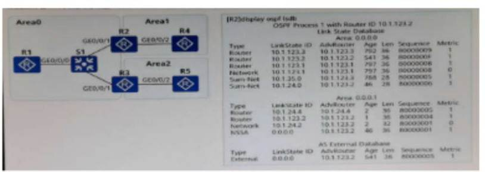
某台路由器 Network LSA 如图所示下列说法中正确的有哪些?
A．由路由器 DR 优先级为 100 B．本路由器的 Router ID 为 10. 0. 12. 2
C．路由器所在的网段为 10. 0. 12. 0 24 D．本路由器为 DR
答案：BCD 多选
如下图所示
A．区域 0 有 8 个 MA 网络 B．区域 0 有 4 个 MA 网络 C．区域 0 有 4
台路由器 D．区域 0 有 8 台路由器
答案：BC 多选
对于此台交换机上的配置描述正确的是
A. 配置 DHCp服务器和 DHCprelay 都必须全局开启 DHCP
B. 为 VLAN100 接口指定 DHCp服务器组为 dhcpgroup1
C. 首先需要创建 DHCp服务器组并向服务器组添加 DHCp服务器
D. VANIF100 接口会将接收到的 DHCp报文,通过中继发送到外部
DHCpServer
答案：ABCD 多选
某工程师利用 2 台路由器进行 IPv6 业务测试通过运行
BGP4+模总那与分支的互联互通如聚新示某工程师抓包查看 R1 发出的 Updte
报文。关于该报文信息的描述以下哪些说法是正确的 ?
A．该报文中仅描述了一种 BGp属性 :多协议不可达 NLRI 属性
B．该报文描述的是当前撒销的 IPv6 路由
C．该报文描述的路由地址前缀及其前缀长度为 : 2001:db8:2345:1::1/128
D．该报文描述的路由的下一跳地址为 2001:db8:2345:1::11
答案：ABC 多选
根据本图，我们可以判断出？
A．R1 访问 172. 16. 1. 4. 需要经过 2 跳路由器
B．R1 访问 172. 16. 1. 4. 需要经过 4 跳路由器
C．R1 访问 172. 16. 1. 4 有 2 条等价的路径
D．R1 访问 172. 16. 14 有 4 条等价的路径
答案：AC 多选
根据本图，我们可以判断出？
A．R4 仅属于 Leve1-2
B．system-ID 为 ee8c.a0c2. baf2 的设备,其类型是 Level-1-2
C．system-ID 为 ee8a0c2. baf2 的设备,其类型是 Leve1-1
D．R4 仅属于 Level-1
答案：BD 多选
根据本图，我们可以判断出？
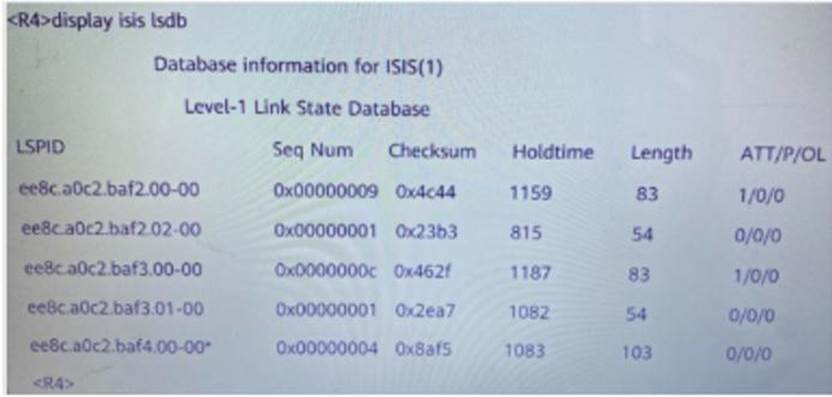
A．R1 的 GE0/0/1 肯定具备了 Leve1-2 能力 B．R1 的 GE0/0/0 肯定具备了
Leve1-2 能力 C．R1 上肯定存在 Leve1-2 的 LSDB D．R1 有 2 个 IS-IS
邻居
答案：ABCD 多选
如图所示网络因为未启用
STp导致产生了环路。则可能引起的现象包括以下哪些?
A．Host 上能收到大量的广播报文 B．设备会出现环路告警 C．设备 CPU
占用率过高 D．MAC 地址表震荡
答案：ABCD 多选
根据本图，我们可以判断出？
A．R1 的 GE0/0/1 接口没有使能 IS-ISIPV6 B． R1 的 GE0/0/1 接口的 IS-IS
接口类型是 Leve C．R1 的 GE0/0/0 接口的 IS-IS 接口类型是 Level1-2 D．R1
的 GE0/0/0 接口使能了 IS-IS IPv6
答案：CD 多选
R1 的部分配置如下关于 R1 上的 OSPF 的说法正确的是?

A．VRFtt 的路由信息会出现在 OSPF 进程 1 的路由表中 B．进程 1 和进程 2 的
OSPF LSDB 其区域内 LSA 不一致 C．进程 1 和进程 2 的 OSPF LSDB 其区域 0
内 LSA 完全一致 D．VRF t 的路由信息不会出现在 OSPF 进程 1
的路由表中
答案：BD 多选
网络管理员A 希望使用 ACL
匹配特定的路由条目,请问以下哪些路由条目将被图中的 ACL 规则?

A．10. 0. 1. 0/24 B．10. 0. 0. 0/24 C． 10. 0. 0. 1/32 D．10. 0. 2.
0/24
答案：BD 多选
某园区部署了 IPv6 进行业务测试。该网络多选中有 4 台路由器(R1. 22.
R3 和 R4)运行 SPFv3 实现 IPv6 网络的互联互通。有一台新的路由器 R5
需要接入网络进行测试某工程师通过在 R4 的 OSPFVV3
进程中引入直连路由实现园区网内的设备能够访问 R5 的
GEO/0/1口地址。以下关于该场景的描述哪些说法是正确的?
A．R2 会生成一个 Type4 LSA 只在 Area 0 内泛好 B．R4 会生成一个 Type5 LSA
描述引入的 IPv6 路由前缀 C． R2 会生成一个 Type4 LSA 描述 R4 的 Router
D．R4 会生成一个 Type5 LSA 只在 Area 1 内泛洪
答案：ABC 多选
根据本图，我们可以判断出？
A．如果没有配置关于 ASPath 的路由策略那么 3002:-4/128 一定不是起源于
AS65001 B． R1 不具备 3002:.3/128 和3002. -4/128 的路由 C．R1 具备3002.
-3/128 和 3002:.4/128 的路由 D．如果没有配置关于 AS Pash 的路由策略.那么
3002:4/28 一定起源于 AS 65001
答案：CD 多选
R1 的部分配置如下关于 R1 上的 ISIS 的说法正确的是?
A．进程 2 与进程 3 的路由信息是隔离的 B．进程 1 仅含有全局路由信息
C．进程 1 同时含有全局路由信息及 VRFtt.rr 的路由信息 D．进程 2 与进程 3
的路由信息会共享
答案：AB 多选
如图所示 PE1 和 PE2 之间通过 Loopback0 接口建立
MPBGp邻居关系在配置完成之后发现 CE1 和 CE2
之间无法互相学习路由,下列哪些选项会造成该问题的出现。
A．PE1 或 PE2 未在 BGp-VPNv 4 单播地址族视图使能邻居 B．PE1 或 PE2 上的
VPN 实例参数配置错误 C．PE1 与 PE2 之间的 LSp隧道未建立 D．PF1 或 PE2
与各自 CE 之间的路由协议配置错误
答案：ABCD 多选
R1，R2， R3. R4 都属于 OSPF 区域 0，链路的 cos 如如图所示
R1，R2， R3，R4的 Loopback0 通告入 OSPFR1，R2，R3 与 R4 使用 Loopback0
作为连接接口，建立 IBGp对等体关系，R1. R2，R3 是 R4 的客户端 R4
的直连网段 172. 20. 1. 4/32 通告入 BGp关于 R1 访问 172. 201. 4/32
的流量走向，分析正确的是 ?
A. 优选的路径是 R1-R3-R4
B. 优选的路径是 R1-R2-R4
C. 如果 R3 配置了 Stub router on-startup，那么 R3 掉电过程中，会丢包 ;R3
启动过程中不会有丢包
D. 在 R3 掉电 .启动的 2 个过程中，都会有丢包 答案：：AD 多选
根据本图，我们可以判断出？
A．R1 通过 1BGp学到路由 3002: : 3/128 B．R1 访问 3000:FDEA::3
的最优出接口是 GigabitEtherneto/0/1 C． R1 与 3000: FDEA : :3 是
IBGp邻居 D．R1 与 3000:FDEA::3 有 TCp连接 答案：：AC 多选
某园区部署了 IPv6 进行业业务测试，该网络中有 4 台路由器，运行
OSPFv3 实现 IPv6 网络的互联互通。如图所示，某工程师查看 R2 的
LSDB，截取了其中一条 Link-LSA，关于该 LSA 的描述，以下哪些说法是正确的
?
A．该 LSA 显示 R2 不支持外部路由，但是参与 IPv6 的路由计算 B．产生该 LSA
的路由器是 R2 C．R2 接口 GE0/0/0 的链路本地地址为:FE80 : : 2E0
:FCFF:FECD : 4F79 D．R2 接口 GE0/0/0 的 1Pv6 地址 i 2001 :DB82345 : 23 :
: /64
答案：BCD 多选
例行的设备基本信息收集，包含以下哪些内容 ? A．License 信息
B．配置是否保存 C．补丁信息 D．设备运行的软件版本 答案：：ACD
多选
OSPF
是非常成熟的协议，在常规组网和正确配置的情况下，路由计算一般不会出错。以下哪些原因可能导致
OSPF 邻居无法达到 Full 状态? A．链路两端 OSPF 的网络类型不一致 B．接口
OSPF MTU 配置不同 C．邻居的 RouterID 相同 D．链路工作异常 答案：：ABC
多选
割按项目方案主要包括哪些内容 ? A．割接实施 B．割接准备
C．应急预案 D．回退方案 答案：：ABCD 多选
开箱验货时需要核对装箱单上的哪些内 A．部件数量 B．项目名称
C．部件型号 D．部件编码 答案：：ABCD 多选
网络设计的模式一般可以归纳为以下哪些项 ? A．模块化 B．层次化
C．自动化 D．现代化 C．规范化
答案：AB 多选
项目实施方案主要包含哪些项 ? A．风险控制措施 B．割接流程
C．时间规划 D．人员安排 答案：：ABCD 多选
以下描述中属于提醒客户信息安全的有以下哪些项 ? A．数据备份提醒
B．账号理提醒 C．密码更新提醒 D．日志保护提醒 答案：：ABCD 多选
以下哪些广域网链路属于报文交换网 ? A．PSIN B．ISDN C． MSTpD．ATM
E．X.25 答案：：DE 多选
关于时延和抖动下面描述正确的是 (多选
A．端到端时延等于处理时延与队列时延之和
B．抖动时因为每个包的端到端时延不相等造成的
C．抖动的大小跟时延的大小相关,时延小则都抖动的范围也小
,时延大则可能的抖动范围也大 D．抖动大小跟时延不相关 答案：：BC
多选
NFV 具备哪些优点(多选 A．减少设备成本 B．缩短网络运营业务创新周期
C．网络设备可以统一版本统一管理距离 D．单一平台为不同应用.租户提供服务
答案：：ABD 多选
关于 VRRPslave 设备的描述正确的是( A．当 Slave 收到 Master 发送的
VRRp报文时可判断 Master 的状态是否正常 B．当收到优先级为 0 的
VRRp报文时,Slave 会直接切换到 Master C．Slave 会丢弃目的 Mac 为虚拟 MAC
地址的 Ip报文 D．Slave 会响应目的 Ip地址为虚拟 Ip地址的 Ip报文
答案：：ABC
MPLS 封装有不同的方式,下列选项中关于多选封装方式的说法正确的是
(多选) A．MPLS 封装有顺模式和信元模式 B．Ethernet 和 PPp使用顿模式封装
C．ATM 使用信元模式封装 D．信元模式封装时如果报文中已经懈意了 MPLS
Header 第一个信元会保留该 MPLSHeader 用于转发
答案：ABC 多选
下列选项中哪些是 Agle Controller 的功能组件 7(多选) A．业务随行
B．业务编排 C．准入控制 D．安全协防 E．资源随动
答案：ABCD 多选
当使用 eSight
对历史告警进行查询时则可以按照下列哪些条件进行告警过滤 ? A．告警级别
B．首次发生时间 C．告警源 D．告警名称
答案：ABCD 多选
DHCp服务器可以采用不同的地址范围为客户机进行分配
,关于分配地址的描述正确的是 A．可以是 DHCp服务器的数据库中与客户端 MAC
地址静态绑定的 Ip地址 B．可以是客户端曾经使用过的 Ip地址即客户端发送的
DHCpDISCOVER 报文中请求 Ip地址选项 (Requested IpAddr Option)的地址 C．在
DHCp地址池中顺序超找可供分配的 Ip地址,即最先找到的 Ip地址 D．关于
DHCp服务器查询到的超过租期 .发生冲突的 Ip地址如果找到可用的
Ip地址则可进行分配 E.可以是客户端曾经和别的客户端产生冲突的 Ip地址
答案：ABCD 多选
在 VAR 应用场景中可以将 AR 路由器的哪些功能虚拟化到 server 上
A．防火墙 B．VOIpC． NAT D．VPN
答案：ABCD 多选
DHCpSnooping 是一种 DHCp安全特性可以用于防御多种攻击,其中包括
A．防御改变 CHADDR 值的饿死攻击 B．防御 DHCp仿冒者攻击 C．防御 TCPflag
攻击 D．防御中间人攻击和 IP/MAC Spoofing 攻击
答案：ABD 多选
LDp消息有多种类型其中 sessionmessage 可以实现以下哪些功能 A．监控
LDpSession 的 TCp连接的完整性 B．终止未完成的 Label Request Message
C．释放标签 D．在 LDpSeeion 建立过程中协商参数 答案：：AD 多选
LDp会话用于 LSR 之间交换标签映射释放等消息。关于
LDp会话建立过程的描述正确的是 A．两台 LSR 之间通过交换 hello 消息来触发
LDpsession 的建立 B．initlalization Message 用来在 LDpSession
建立过程中协商参数 C． KeepAlive Message 用来监控 LDPSeesion 的
TCp连接的完整性 D．当入节点 LSR 收到标签映射消息时,完成了
LDp会话的建立
答案：BC 多选
VRRp可以同哪些机制结合来监视上行链路的连通性 (多选) A．接口 track
B．BFD C． NQA D．Ip-link
答案：A BCD
DHCpServer 即 DHCp服务器负责客户多选端 Ip地址的分配在配置
DHCpServer 时需要包括以下哪些步骤 A．全局使能 DHCp功能 B．配置 DHCp的
option82 选项 C．采用全局地址池的 DHCp服务器模式时配置全局地址池
D．采用端口地址池的 DHCp服务器模式时配置端口地址池 答案：：ACD
多选
拥塞避免机制中的丢弃策略不包括 (多选) A．FIFO B．RED C． WRED
D．WFQ 答案：：AD 多选
华为 eSight 网管软件都支持哪些设备发现 A．指定某个 Ip地址
B．指定模个 Ip地址段 C．指定产品型号 D．通过 excel 表格 (指定
Ip地址)进行导入 答案：：ABD 多选
关于 VRRPslave 设备的描述正确的是(
A. 当 Slave 收到 Master 发送的 VRRp报文时可判断 Master
的状态是否正常
B. 当收到优先级为 0 的 VRRp报文时,Slave 会直接切换到 Master
C. Slave 会丢弃目的 Mac 为虚拟 MAC 地址的 Ip报文
D. Slave 会响应目的 Ip地址为虚拟 Ip地址的 Ip报文
答案：ABC 多选
对于该配置说法正确的是(多选 )
A. 该段命令是用来配置启用 DHCP 服务的
B. 该命令是配置 VLANIF10 接口下的客户端都从全局地支持中获取 Ip地址
C. 接口地址池优先于全局地支持分配地址
,即若接口上存在接口地址池,即使全局地址池也存在
,客户端也会优先从接口地址池中获取地址
D. DHCp服务器发送 ping 报文的最大数目为 10 E.DHCp服务器接收 ping
报文的最大数目为 10
答案：ABCD 多选
MPLS 封装有不同的方式 ,下列选项中关于封装方式的说法正确的是(多选
)
A. MPLS 封装有顺模式和信元模式
B. Ethernet 和 PPp使用顿模式封装
C. ATM 使用信元模式封装
D. 信元模式封装时如果报文中已经懈怠了 MPLS Header,第一个信元会保留该
MPLSHeader 用于转发 答案：:ABC 多选
在 MPLSVPN 中为了区分使用相同地址空间的 IPv4 前级将 IPv4
的地址增加了 RD 值下列选项描述正确的是(多选)
A. RD 在传递过程中作为 BGp的扩展属性封装在 Update 报文中
B. PE 从接收到IPV4 路由后给 IPV4 的路由增加 RD 转换为全局唯一的 VPN-IPV4
路由,并 C. 在公网上发布。
D. 在 PE 设备上 ,每一个 VPN 实例都对应一个 RD 值 ,同一 PE
设备上,必须保证 RD 全局唯 RD 可用来控制 VPN 路由信息的发布
答案：BC 多选
在 NFV 架构中具体的底层物理设备主要包括哪些 ?(多选)
A. 存储设备
B. 网络设备
C. 服务器
D. 空调系统
答案：ABC 多选
DHCpRelay 又称为 DHCp中继如果需要配置 DHCPRelay
那么需要包括以下哪些步骤 ?
A. 配置 DHCp服务器组的组名
B. 配置 DHCp服务器组中 DHCp服务器 IF 地址
C. 配置启动 DHCpRelay 功能的接口编号及接口的 Ip地址 D．配置 option82
插入功能
答案：A BC 多选
端口镜像可以对哪些流量进行镜像 (多选
A. 接口接受的报文
B. 端口发送的报文
C. 端口发送和接收的报文
D. 端口丢弃的报文 答案：:ABC 多选
按照分类规则参考信息的不同 ,流量分类可以分为(多选)
A. 简单流分类
B. 复杂流分类
C. 按需流分类
D. 业务流分类
答案：AB 多选
下列选项中,关手 Agile Controller
的终端安全管理特点的描述正确的是(多选 )
A. 一键修复降低终端管理维护成本
B. 只允许安装标准软件,实现桌面办公标准化
C.
控制终端外泄途径,通过准入控制确保入网络终端强制安装客户端且符合安全要求
D. 禁止非标软件的安装降低病毒感染风险
答案：ABCD
下列选项中属于使用下游自主标签发布方多选式和有序标签控制方式建立
LSp的过程描述的是:(多
A. 边缘节点发现白己的路由表中出现了新的不属于任何有的 FEC
的目的地址,也不会建立一个新的 FEC 与之对应
B. LSp的建立过程实际就是将 FEC 和标签进行绑定,并将这种绑定通告给
LSp上的相邻 LSR
C. 如果出节点有可供分配的标签,则会为 FEC
分配标签并主动向上游发出标签映射消息
D. 节点 LSR 收到标签映射消息时
,它也需要在标签转发表中增加相应的条目
答案：BCD 多选
信息安全最关心的三个属性是什么 ?(多
A. 机密性(confidentiality)
B. 完整性(integrity)
C. 可用性(availabilty)
D. 身份验证(authentication)
答案：ABC 多选
Agile Controller 能够实现准入控制的技术有哪些 ?(多选)
A. MAC 认证
B. Portal 认证
C. 802. 1X 认证
D. SACG 认证
答案：ABCD
下列选项描述错误的是(多选 )
A. 最后一条命令是配置 LSRA 为入接口 LSR 并且配置了一条静态 LSP
B. mpls 使能全局 mpls 之后就不需要在接口视图下再次启用 mpls
C. mpls Isr-id 是配置 LSR 的 ID 是配置其他 MPLS
命令的前提缺省是没有配置的
D. mpls 是在系统视图和接口视图下启用 mpls 功能,在使能 mpls 之后才能配置
Isr-id
答案：BD 多选
关于 PC 机从 DHCpSever 获取地址,所使用的命令描述正确的是
(多选)
A. 在用户 PC 机的 Windows 7/Windows Xp环境下使用 ipconfig/renew
命令来申请新的 IP 地址,此时用户 PC 机向 DHCp服务器发送的是 DHCpRENEW
报文
B. 在用户 PC 机的 Winiows 7Wndows Xp环境下使用 ipconfig/release
命来主动释放 Ip地址此时用户 PC 机向 DHCP 服务器发送的是 DHCpRELEASE
报文
C. 在用户 PC 机的 Wndows 7Wndows Xp环境下使用 ipconfg/release
命令来主动释放 Ip地址此时用户 PC 机向 DHCp服务器发送的是 DHCpREQUEST
报
D. 在用户PC 机的 Windows 7/Window Xp环境下使用iponfig/renew
命今来主动请新的 Ip地址此时用户 PC 机向 DHCP 服务器发送的是 DHCpDISCOVER
报文
答案：AB 多选
可以根据报文中的哪些信息来进行复杂流分类 (多选) A．源.目的 MAC
地址信息
B. 协议类型 C．源.目的地址信息 D．报文的包长度
答案：A BC 多选
可以对报文的哪些信息对其进行标记或重标记 ? A．MAC Address 信息
B．报文中的任何信息 C．IpSourceDestination Addess, EXp信息 D．IpDSCP.IP
Precedence.802. 1p.EXp信息 答案：：ACD 多选
关于 ASPF 和 Server-map的说法正确的是(多选 )
A．Server-map通常只是用检查首个报文
,通道建立后的报文还是根据会话表来转发 B．通道建立后的报文还是根据
Server-map来转发 C．Server-map表项由于一直没有报文匹配
.经过定老化时间后就会被删除。这种机制保证了 Server-
map表项这种较为宽松的通道能够及时被删除
,保证了网络的安全性。当后续发起新的数据连接时会重新触发建立
Server-nmap表项 D．只有 ASPF 会生成 Sever-map表
答案：AC 多选
防火墙的接口有如下)工作模式 (多选) A．交换模式 B．透明模式
C．传输模式 D．路由模式
答案：BD 多选
包过滤防火墙提供了对分片报文进行检测过速的支持包过滤防火墙可以过滤的分片报文有
? A．后续分片报文 B．非分片报文 C．伪造的 ICMp差错报文
D．首片分片报文
答案：AB 多选
以下属千 MPLSVPN 路由的传递过程的是(多选) A． CE 与 PE
之间的路由交换 B．公网标签的分配过程 C．VRF 路由注入 MP-BGp的过程
D．MP-BGP 路由注入 VRF 的过程 答案：：ABCD 多选
通过查看 DHCp配置信息和报文统计信息可以查看设备运行状态接收和发送
DHCP报文的计数,以方使日常维护过程中的问题定位。以下哪些指令可以用于直看
DHCp消息(多选) A．display dhcp statistics B．display dhcp relay
staitstics C．display dhcp server statistics D．display dhcp 答案：：ABC
多选
关于 DHCp地址池的描述确定的是 (多选
A．配置基于全局地址池的地址分配方式,可以响应所有端口接收到 DHCp请求
B．只有在配置基于全局地址池的地址分配方式才可以设置不参与自动分配的
Ip地址范申 C．配置基于接口的地址分配方式,只会响应该接门的 DHCp请求
D．配置基于接口的地址分配方式可以响应所有端口接收到 DHCp请求
答案：AC 多选
信息安全体系是(00 三者的互动 (多选 A．人员 B．管理 C．技术
D．设备 答案：：ABC 多选
关于高可用性网络的特点描述正确的是 ( A．出现故障后能很快恢复
B．一旦出现故障只能通过人工干预恢复业务 C．不会出现故障
D．不能频频由现故障 答案：：AD 多选
下列选项中关于 Agile Controller 的终端安全管理特点描述,正确的是
(多选) A．如果终端不符合企业安全策略。用户往往希望提供自动修复功能
.现在已经完全能实现不合规状态的自动修复,用户只需要点击鼠标即可在最短时间内实现一健修复
B．终端安全客户端按照分配的安全策略对终端进行检查。检查通过后服务器可以通知准入控制设备给终端开放网络权限
,如果检查不通过,可以对终端进行隔离修复 C．通过 MC
管理中心可以集中配置和分发策略到下级终端安全管理服务器 D．可以控制非法的
web 访问
答案：A BCD
可以根据报文的哪些信息进行链路层复杂多选流分类 (多选) A．端口号
B．802. 1p C．源 MAC 地址 D．目的 MAC 地址 答案：：BCD 多选
DHCp会面对很多安全威胁的原因 (多选 A．中间人利用了虚假的 Ip地址与
MAC 地址之间的映射关系来同时欺骗 DHCp的客户端和服务器 B．DHCpServer
无法区分什么样的 CHADDR 超合法的,什么样的 CHADDR 是非法的
C．DHCp动态分配 Ip地址的响应时间长 D．由于 DHCp发现报文
(DHCPDISCOVER)以广播形式发送 答案：：ABD 多选
在移动化趋势下企业对传统网络提出了哪些新需求 (多选)
A．严格的层次化组网 B．随时随地一致的业务体验 C．有线无线统一管理
D．支撑移动应用快速部署 答案：：BCD
在 eSight 子网中可以管理的资源描述正多选确的有 (多选) A．设备
B．子网 C．链路 D．子网下不可用嵌套其他子网 答案：：ABC 多选
为什么说可以通过提高链路带宽容量来提高网络的 QoS(多选)
A．链路带宽的增加减小了拥塞发生的几率 ,从而减少了丢包的数量
B．链路带宽的增加可以增加控制协议的可用带宽
C．链路带宽的增加意味着更小的延迟和抖动
D．链路带宽的增加可以支持更高的流量 答案：：ACD 多选
PQ+WFQ 的优点有(多选 ) A．不能有差别地对待优先级不同的报文
B．可保证低时延业务得到及时调度 C．实现按权重分配带宽
D．实现根据用户自定义灵活分类报文的需求
答案：BC 多选
可能会发生丢包的情况有？ A．可能山于 CPU 繁忙
,无法处理报文而导致丢包 B．在传验过程发生丢包 C．队列中发生丢包
D．接收过程发生丢包 答案：：ABC 多选
防火墙安全策略进行流量匹配的条件有以下哪些选项 ? A．源目安全区域
B．报文长度 C．源目 Ip地址 D．应用 答案：：ACD
基于会话的状态检测防火墙对于首包和后多选续包有不同的处理流程关于该流程描述正确的是哪些选项
? A．报文到达防火墙时,会查找会话表
,如果没有匹配,防火墙会进行首包处理流程
B．在状态检查机制打开的情况下,防火墙处理 TCp报文时,只有 SYN
报文才能建立会话
C．在状态检查机制打开的情况下，后续包也需要进行安全策略检查 .
D．报文到达防火墙时,会查找会话表 ,如果匹配防火墙会进行后续包处理流程
答案：：ABD
假设对标记为 AF21 的报文设置的多选 WRED 丢弃策略为下限设为 35
上限设为 40 丢弃概率是 50%。那么当 AF21 的报文到达时关于 WRED
对该报文的处理结果的描述,错误的是？ A．如果当前队列平局长度小于
35,报文开始丢弃 B．如果当前队列平局长度大于下线 35,小于上限 40
该报文丢弃的概率为 50% C．如果当前队列的平均长度大于上限
40,则该报文开始进入队列 D．如果当前队列的平局长度大于上限 40
则该报文将被丢弃 答案：：AC 多选
LSR 对收到的标签进行保留 ,且保留方式有多种,那么以下关于 LDP
标签保留一一自由方式的说法正确的是:？ A．保留邻居发送来的所有标签
B．需要更多的内存和标签空间
C．只保留来自下一跳邻居的标签丢弃所有非下一跳邻居发来的标签
D．节省内存和标签空间 E．当 Ip路由收敛 .下一跳改变时减少了
LSp收敛时间
答案：A BE 多选
以下是关于 eSight 物理拓扑监控的功能描述其中正确的选项有(多选)
A．图形化的展示网元 .子网.链路的布局以及状态
B．精确可视化的监控全网网络运行状态
C．系统的展现全网网络结构及网络实体在业务上的关系
D．整个网络监控的入口.为客户实现高效运维
答案：A BCD 多选
假设有四条流量分别为,端口总带宽为
,发生了流量拥塞并对其进行拥塞管理。其中流量 a 属于 PQ 队列调度流量属于
WFQ 队列调度权重比为则关于对四种流量的调蓄结果的描述 ,错误的是？ A．流量
a 通过 100MB B．流量 a 通过 50M C．流量 b 通过 10M 流量 cd 通过 20M
D．流量 b 通过 25M,流量 Cd 通过
5M 答案：：AD 多选
BFD 检测可以同哪些协议模块联动 (多选
A. VRRpB．OSPF C． BGP D．静态路由
答案：A BCD 多选
对于此台交换机上的配置描述正确的是 MPLS(多选)
A. 默认情况下配置 DHCp服务器和 DHCPdelay 都必须开启 DHCp服务
B. VLANIF100 接口会将接收到 DHCp报文通过中继发送到外部 DHCpServer
C. 为 VLANIF100 接指定 DHCp服务器组为 dhcpgroup
D. 首先需要创建 DHCp服务器组并向服务器组添加 DHCp服务器 E. 默认情况下
DHCPgroup1 会自动添加网络中的 DHCp服务器 F.
答案：A BCD 多选
在 Agile Controller
的安全协防中,关于安全联动组件的描述正确的是
A. 上报日志设备是由网络中部署的网络设备
.安全设备.策略服务器.第三方系统等来承担
,主要负责提供网络信息与安全日志
B. 客户设备是网络信息与安全日志的生产者
C.
联动策略执行设备由交换机来承担,主要负责安全时间发生后的设备联动部分的安全响应
, 是执行阻断或引流策略的设备
D. Agile Controller 的安全协防组件负责对日志的采集
,处理.事件关联.安全态势展现 .安全响应 答案：：ACD 多选
eSight 网管要实现能够接收并管理设备
,上报的告警,得要具备哪些条件?(多选 ) A．设备被网管管理
B. 设备侧配置了正确的 trap参数
C. 网管上被管理设备要配置正确的 SNMp协议及参数
D. 网管和设备之间要联通
答案：A BCD 多选
下列关于 ASPF 和 Servermap的说法确的是(多选) A．ASPF
检查应用层协议信息并且监控连接的应用层协议状态 B．ASPF 通过动态的生成
ACL 来诀定数据包是否通过防火墙 C．配置 NAT Server 生成的是静态
Server-map D．Servermap表用五元组来表示一段回话
答案：AC 多选
当拥塞发生时,通常会影响到 Qos 的哪些指标(多选) A．传输时延
B．传输抖动 C．传输带宽 D．传输距离
答案：ABC 多选
根据本图，我们可以判断出？
A．R1 有 2 个 IS-IS 邻居 B．R1 上肯定存在 Level-2 的 LSDB C．R1 的
GE0/0/1，肯定具备了 Level-2 能力 D．R1 的 GE0/0/0，肯定具备了 Level-2
能力 答案：：ABCD 多选
某工程师利用 2 台路由器进行 IPv6 测试他想要通过运行 OSPFv3 实现
IPv6 网络的互联互通，关于 RI 需要进行的 OSPFv3
相关配置，正确的有哪些?
A．R1-ospfv3-1-area-0. 0. 0. 0network2001:DB8:2345:12::1: B．R1-GigabitE
thernet0/0/1] ospfv3 1 area 0 C．[R1] router id 10. 1. 1. 1
D．R1-ospfv3-1] router-id 10.
- 1 答案：：BD 多选
以下关于 IS-IS(IPv6)说法正确的是?/ A．IS-IS
工作在数据链路层，只需要增加新的 TLV 即可支持 IPv6 B．为了支持 IPv6
路由的处理和计算， IS-IS 在 129 TLV 中新增了 NLPID C．默认情况下，IS-S
开启了多拓扑特性 D．为了支持 IPv6 路由的处理和计算， IS-IS 新增了
TLV
236 答案：：ABD
NFV 具备哪些优点？
A. 减少设备成本
B. 缩短网络运营业务创新周期
C. 网络设备可以统一版本统一管理距离
D. 单一平台为不同应用.租户提供服务 答案： ABD
关于 VRRPslave 设备的描述正确的是？
A. 当 Slave 收到 Master 发送的 VRRp报文时可判断 Master
的状态是否正常
B. 当收到优先级为 O 的 VRRp报文时，Slave 会直接切换到 Master
C. Slaves 会丢弃目的 Mac 为虚拟 MAC 地址的 Ip报文
D. Slave 会响应目的 Ip地址为虚拟 Ip地址的 Ip报文 答案： ABC
在 VAR 应用场景中可以将 AR 路由器的哪多选些功能虚拟化到 server
上？
A. 防火墙
B. VOIP
C. NAT
D. VPN
答案：ABCD
LDp消息有多种类型其中 sessionmessage 可以实现以下哪些功能？
A. 监控 LDpSession 的 TCp连接的完整性
B. 终止未完成的 Label Request Message
C. 释放标签
D. 在 LDpSeeion 建立过程中协商参数 答案：:AD
DHCpServer 即 DHCp服务器负责客户多选端 Ip地址的分配在配置
DHCpServer 时需要包括以下哪些步骤
A. 全局使能 DHCp功能
B. 配置 DHCp的 option82 选项
C. 采用全局地址池的 DHCp服务器模式时，配置全局地址池
D. 采用端地址池的 DHCp服务器模式时，配置端口地上池 答案： ACD
关于 VRRPslave 设备的描述正确的是
A. 当 Slave 收到 Master2 发送的 VRRp报文时，可判断 Master
的状态是否正常
B. 当收到优先级为 O 的 VRRp报文时，Slave 会直接切换到 Master
C. Slave 会丢弃目的 Mac 为虚拟 MAC 地址的 Ip报文
D. Slave 会响应目的 Ip地址为虚以 Ip地址的 Ip报文 答案： ABC
DHCpRelay 又称为 DHCp中继如果需要配置
DHCPRelay,那么需要包括以下哪些步骤 ?
A. 配置 DHCp服务器组的组名
B. 配置 DHCp服务器组中 DHCp服务器 IF 地址
C. 配置启动 DHCpRelay 功的接 ?编号及接口的 Ip地址
D. 置 option82 插入功能 答案：:ABC
关于 PC 机从 DHCpSever 获取地址所使用的命令描述正确的是?
A. 在用户 PC 机的 Vindows7 Vindows Xp坏境下使用 ipconfig/renew
命令来申请新的 IPp地址比时用户 PC 机向 DHCp服务器发送的是 DHCpRENEW
报文
B. 在用户PC 机的 Winiows7 Vndows XP:环境下使用ipconfig/release
命来主动释放 Ip地址: 此时用户 PC 机向 DHCp服务器发送的是 DHCpRELEASE
报文
C. 在用户 PC 机的 Vndows7 Wndows Xp环境下使用 ipconfg/releaser
命令来主动释放 Ip地址，此时用户 PC 机向 DHCp服务器发送的是 DHCpREQUEST
报文
D. 在用户 PC 机的 Windows 7/Window XP:环境下使用 iponfig/renewe
命令来主动请新的 p地址，此时用户 PC 机向 DHCp服务器发送的是 DHCPDISCOVER
报文
答案：AB
下列关于 ASPF 和 Servermap的说法正确的是?
A. ASPF 检查应用层协议信息并目监控连接的应用层协议状态
B. ASPF 通过动态的生成 ACL 来决定数据包是否通过防火墙
C. 配置 NAT Server 生成的是静态 Server–map
D. Servermap表用五元组来表示一段回话 答案： AC
当拥塞发生时通常会影响到 Qos 的哪些指标？
A. 传输时延
B. 传输抖动
C. 传输带宽
D. 传输距离 答案： ABC
关于 ASPF 和 Server-map的说法正确的是?
A.
Server-map通常只是用检查首个报文通道建立后的报文还是根据会话表来转发
B. 通道建立后的报文还是根据 Server-map来转发
C.
Server-map表项由于一直没有报文匹配经过定老化时间后就会被删除。这种机制保证了
Server-map表项这种较为宽松的通道能够及时被删除;保证了网络的安全性。当后续发起新的数据连接时会重新触发建立
Server-nmap表项
D. 只有 ASPF 会生成 Sever-map表 答案： AC
以下属干 MPLSVPN 路由的传递过程的是 ?
A. CE 与 PE 之间的路由交换
B. 公网标签的分配过程
C. VRF 路由注入 MP-BGp的过程
D. MP-BGp路由注入 VRF 的过程
答案：ABCD
通过查看 DHCp配置信息和报文统计信息可以查看设备运行状态
,接收和发送
DHCp报文的计数以方使日常维护过程中的问题定位。以下哪些指令可以用于直看
DHCp消息？
A. display dhcpstatistics
B. display dhcprelay staitstics
C. display dhcpserver statistics
D. display dhcp 答案： ABC
关于 DHCp地址池的描述确定的是？
A. 配置基于全局地址池的地址分配方式，可以响应所有端口接收到
DHCp请求
B. 只有在配置基于全局地址池的地址分配方式，才可以设置不参与自动分配的
p地址范韦
C. 配置基于接口的地址分配方式只会响应该接口的 DHCp请求
D. 配置基于接口的地址分配方式，可以响应所有端口接收到 DHCp请求 答案：
AC
DHCp会面对很多安全威胁的原因？
A. 中间人利用了虚假的 Ip地址与 MAC 地址之间的映射关系来同时欺骗
DHCp的客户端和服务器
B. DHCpServer 无法区分什么样的 CHADDR 超合法的,什么样的 CHADDR
是非法的
C. DHCp动态分配 Ip地址的响应时间长
D. 由于 DHCp发现报文 (DHCPDISCOVER)以播形式发送 答案： ABD
在 eSight 子网中可以管理的资源描述正确的有？
A. 设备
B. 子网
C. 链路
D. 子网下不可用嵌套其他子网? 答案： ABC
PQ+WFQ 的优点有？
A. 不能有差别地对待优先级不同的报文
B. 可保证低时延业务得到及时调度
C. 实现按权重分配带宽
D. 实现根据用户自定义灵活分类报文的需求 ?
答案：BC 718 假设对标记为 AF21 的报文设置的 WRED 丢弃策略为下限设为
35,上限设为 40,丢弃概率是 50%。那么当 AF21 的报文到达时,关于 WRED
对该报文的处理结果的描述错误的是 ?
A. 如果当前队列平局长度小于 35,报文开始丢弃
B. 如果当前队列平局长度大于下线 35,小于上限 40 该报文丢弃的概率为
50%
C. 如果当前队列的平均长度大于上限 40,则该报文开始进入队列
D. 如果当前队列的平局长度大于上限 40,则该报文将被丢弃
答案：AC
LSR 对收到的标签进行保留且保留方式有多种，那么以下关于
LDp标签保留一一自由方式的说法正确的是?
A. 保留邻居发送来的所有标签
B. 需要更多的内存和标签空间
C. 只保留来自下一跳邻居的标签丢弃所有非一跳铃邻居发来的标签
D. 节省内存和标签空间 E.当 Ip路由收敛下一跳改变时减少了
LSp收敛时间
答案：ABE
BFD 检测可以同哪些协议模块联动 VXHWRZKSTK?
A. VRRP
B. OSPF
C. BGP
D. 静态路由
答案：ABCD
关于高可用性网络的特点描述，正确的是 ?
A. 出现故障后能很快恢复
B. 一旦出现故障只能通过人工千预恢复业务
C. 不会出现故障
D. 不能频频由现故障 答案：AD
下列选项中，关于 Agile Controller
的终端安全管理特点描述，正确的是?
A.
如果终端不符合企业安全策略。用户往往希望提供自动修复功能，现在已经完全能实现不合规状态的自动修复用户只需要点击标即可在最短时间内实现一健修复
B.
终端安全客户端按照分配的安全策略对终端进行检查。检查通过后服务器可以通知准入控制设备给终端开放网络权限如果检查不通过可以对终端进行隔离修复
C. 通过 MC 管理中心可以集中配置和分发策路到下级终端安全管理服务器
D. 可以控制归非法的 web 访问
答案：ABCD
DHCp会面对很多安全威胁的原因 ?
A. 中间人利用了虚假的 Ip地址与 MAC 地址之间的映射关系来同时欺骗
DHCp的客户端和服务器
B. DHCpServer 无法区分什么样的 CHADDR 超合法的，什么样的 CHADDR
是非法的
C. DHCp动态分配 Ip地址的响应时间长
D. 由于 DHCp发现报文 ( DHCPDISCOVER)以广播形式发送
答案：:ABD
在移动化趋势下，企业对传统网络提出了哪些新需求
A. 严格的层次化组网
B. 随时随地一致的业务体验
C. 有线无线统一管理
D. 支撑移动应用快速赔 g 部署
答案： BCD
在 eSight 子网中，可以管理的资源描述正确的有 ?
A. 设备
B. 子网
C. 链路
D. 子网下不可用嵌套其他子网
答案： ABC
为什么说可以通过提高链路带完容星来提高网络的 QoS?
A. 链路带宽的增加减小了拥塞发生的几率，从而减少了丢包的数量
B. 链路带宽的增加可以增加控制协议的可用带院
C. 链路带宽的增加意味着更小的延迟和抖动
D. 链路带宽的增可以支持更高的流量
答案： ACD
PQ+WFQ 的优点有?
A. 不能有差别地对待优先级不同的报文
B. 可保证低时延业务得到及时调度
C. 实现按权重分配带宽
D. 实现根据用户自定义灵活分类报文的需求 答案： BC
可能会发生丢包的情况有?
A. 可能山于 CPU 繁忙无法处理报文而导致丢包
B. 在传验过程发生丢包
C. 队列中发生丢包
D. 接收过程发生丢包 答案： ABC
防火墙安全策略进行流量匹配的条件有以下哪些选项 ?
A. 源目安全区域
B. 报文长度
C. 源目 Ip地址
D. 应用 答案： ACD
基于会话的状态检测防火墙对于首包和后续包有不同的处理流程，关于该流程描述正确的是哪些选项
?
A. 报文达防火墙时会查找会话表如果没有匹配防火墙会进行首包处理流程
B. 在状态检查机制打开的情况下，防火墙处理 TCp报文时，只有 SYN
报文才建立会话
C. 在状态检查机制打开的情况下，后续包也需要进行安全策路检查。
D. 报文到达防火墙时，会查找会话表如果匹配，防火墙会进行后续包处理流程
答案： ABD
假设对标记为 AF21 的报文，设置的 WRED 丢弃策略为下限设为
35，上限设为 40，丢弃概率是 50%。那么当 AF21 的报文到达时，关于 WRED
对该报文的处理结果的描述错误的是 ?
A. 如果当前队列平局长度小于 35，报文开始丢
B. 如果当前队列平局长度大于下线 35，小于上限 40，该报文丢弃的概率为
50%
C. 如果当前队列的平均长度大于上限 40，则该报文开始进入队列
D. 如果当前队列的平局长度大于上限 40，则该报文将被丢弃 答案：
AC
LSR 对收到的标签进行保留，且保留方式有多种，那么以下关于
LDp标签保留一一自由方式的说法正确的是？
A. 保留邻居发送来的所有标签
B. 需要更多的内存和标签空间
C. 只保留来自下一跳邻居的标签丢弃所有非下跳铃邻居发来的标签
D. 节省内存和标签空间
D. 当 Ip路由收敛下一跳改变时减少了 LSp收敛时间
答案：ABE
关于 MPLS 转发流程中， Ingress 节点转发的描述正确的是
A. Ingress 节点收到数据包后回收先查看 ILM 表，查找 TunnelID
B. 根据 ILM 表的 TunnelID 找到对应的 NHLFE 表项将 LFIB 和 NHLFE
表项关联起来
C. 查看 NHLFE 表项可以得到出接口
.下一跳.出标签和标签操作类型标签操作类型为 Push
D. 在 Ip分组报文中压入获得的标签，并根据 QoS 策略处理 EXp同时处理
TTL，然后将封装好的 MPLS 分组报文发送给下一跳
答案：CD
以下是关于 eSight 物理拓扑监控的功能描述，其中正确的选项有
?
A. 图形化的展示网元.子网 .链路的布局以及状态
B. 精确可视化的监控全网网络运行状态
C. 系统的展现全网网络结构及网络实体在业务上的关系
D. 整个网络监控的入口，为客户实现高效运维 答案： ABCD
假设有四条流量分别为，端口总带宽为发生了流量拥塞，并对其进行拥塞管理。其中
;流量 a 属于 PQ 队列调度 ;流量属于 WFQ
队列调度，权重比为则关于对四种流量的调蓄结果的描述错误的是 :?
A. 流量 a 通过 100MB
B. 流量 a 通过 50M
C. 流量 b 通过 10M，流量 cd 通过 20M
D. 流量 b 通过 25M，流量 Cd 通过
5M 答案：:AD
BFD 检测可以同哪些协议模块联动？
A. VRRP
B. OSPF
C. BGP
D. 静态路由
答案：ABCD
在域内 MPLSVPN 网络中，数据包在进入公网被转发时，会被封装上两层
MPLS 标签下列选项中关于两层标签的描述，错误的是？
A. MPLSVPN 的外层标签是由 LDp协议或静态分配的，内层标签是由正确端的
MPBGp邻居分配的
B. MPLSVPNE 的外层标签称为私网标签，内层标签称为公网标签
D. 默认情况下，外层标签在据包转发给最后跳设备前被单出
D. 外层标签用于在 PE 设备上将数据包正确发送到相应的 VPN 中
答案：BC
下面关于 PLS 头部 TTL 的描述哪些是正确的?
A. MPLST 正确于 TTL 的处理有两种方式。一种是 Ip报文在进入 MPLS
网络的时候 MPLS 头部的 TTL 拷贝 IPTTL 值 : 另外一种是在入 LER 将 MPLS
头部的 TTL 统-设置为 255
B. 可以防止报文的无限循环转发
C. 拷贝 IPTTL 值的处理方式隐藏了 MPLS 域的
LSR，起到了-定的安全的作用
D. 禁止了持贝 TTL 的情况下， tracet 能看到经过的 MPLS 域的 LSR
答案：AB
华为设备可以针对哪些报文进行流量抑制 ?
A. 末知单播
B. 已知单播
C. 组播
D. 广播
答案：ABCD
在进行网络故障排除时，如果需要对业务流量路径进行确认，那么可能需要进行以下哪些工作
?
A. 确认网络层业务流是路径
B. 调研网络设计阶段的业务流星路径规划
C. 确认数据链路层业务流量路径 答案： AC
以太网是一个支持广播的网络，一旦网络中有环路，这种简单的厂播机制就会引发灾难性后果下面哪几种现象可能是环路导致的
?
A. CPU 占用率超过 70%
B. 设备无法远程登录
C. 在设备上使用 display interface
命令查看接统计信息时发现接口收到大量广播报文
D. 通过 ping 命令进行网络测试时丢包严重
答案：ABCD
以下关千 BGP4+的 MpREACHNLRI 属性说法正确的是?
A. 下一跳地址长度可以为 16 或者 3
B. AFl ( address family ) 值为 2，代表 IPV6
C. NLRI 字段携带 IPV6 路由前缀和掩码信息
D. 当下一跳地址长度为 16 时， NetworkAddressof Next
Hop携带的是链路本地地址 答案： ABC
IS-IS 支持多实例和多进程，即一台 IS-S 路由器上可以配置多个 VPN
实例与多个 ISIS 进程相关联。以下关于 IS-IS
多实例和多进程的描述，正确的有哪些 ?
A. 1 个 IS-IS 进程只能与 1 个 VPN 实例关联
B. 若一台 IS-IS 路由器创建了多个 IS-IS
进程每个进程之间互不影响，彼此独立
C. 1 个 IS-IS 进程可以与多个不同的 VPN 实例关联 E.1 个 VPN
实例可以与多个不同的 IS-IS 进程关联 E.2
答案：ABD
以下关干 BGP4+的 MpREACH NLRI 属多选性说法正确的是?
A. 下一跳地址长度可以为 16 或者 3
B. AFl ( address family ) 值为 2，表 IPv6
C. NLRI 字段携带 IPv6 路由前缀和掩码信息
D. 当下一跳地址长度为 16 时， NetworkAddress of Next
Hop携带的是链路本地地址 答案： ABC
以下哪些操作可能会影影响客户网络的正常运行 ?
A. 设备命名
B. 软件升级
C. 硬件扩容
D. 路由协议配置变更
答案：BCD
在进行结构化的网络故障排除流程的收尾工作中，下列哪几项是需要移交的文档
?
A. 规避该故障的维护建议
B. 故障排除总结报告
C. 故障排除过程文档
答案：ABC
割接验收完成后在收尾阶段还需要执行的工作一般包括哪些 ?
A. 转维培训
B. 资料移交
C. 验收总结
D. 现场守局
答案：ABCD
ping-aX-CY-sz-vpn-instanceM10. 5. 16. 2，该命令的含义是 ?
A. 该 ping 发送 Y 个 ICMp请求
B. 该 ping 的 ICMp请求，报文大小为 Z(不含 Ip和 ICMp头)
C. 该 ping 包的源 IFp地址是 X
D. 该 ping 包属于 VPN 实例 M 答案： ABCD
在 MPLSVPN 网络中，数据包在进入公网被转发时。会被封装上两层 MPLS
标签。下列选项中对数据包的处理过程描述正确的是?
A. 数据包在倒数第二跳设备上弹出外层标签后转发给 Egress PE 设备
B. Egress PE 设备依据内层标签将数据包正确发送到相应的 VPN 中
C. 倒数第二跳设备收到的数据包外层标签为 3
D. EgressPE 设备收到的是不带标签的 Ip数据包
答案：AB
华为设备可以针对哪些报文进行流量抑制 ?
A. 末知单播
B. 已知单播
C. 组播
D. 广播 答案：:ABCD
下列关于 VLAN 聚合说法正确的是 ? A.Super-VLAN
只包含物理接口，不能建立三层 VLANIF 接口
B. 1 个 Super-VLAN 可以包含一个或多个 SUb-VLAN
C. Sub-VLAN 包含物理接口，可以建立三层 VLANIF 接口
D. Sub-VLAN 用于隔离广播域
答案：BD
割接完成后一般需要针对哪些项目进行检查？
A. 软件版本
B. 物理拓扑
C. 数据流向
D. 控制层面表项
答案：CD
以下哪些 Community 属性可以保证 BGp路由条目的传播范围只在 AS 内
?
A. NO_Export
B. No Export Subconfed
C. Interne
D. No Advertise
答案：AB
如图所示网络因为未启用 STP
导致产生了环路。则可能引起的现象包愁以下哪些?

A. Host 上能收到大量的广播报
B. 设备会出现环路告警
C. 设备 CPU 占用率过高
D. MAC 地址表震荡
答案：ABCD
如图所际,某园区部署 OSPF 实现网络互通，其中 Areal 部署为 NSSA
区域。某工程师为了实现 R1 访问 R4 的环回口地址，，在 R4 的 OSPF
进程中引入直连路由。关于该场景以下哪些描述是正确的?
A. R2 是 NSSA 区域的边界转换器，会将描述缺省路由的 Type7LSA 转换为 Type5
LSA
B. R4 是 NSSA 区域内的 ASBR，会产生 Type7LSA 描述外部路由
C. R2 是 NSSA 区域的边界转换器，会将描述外部路由的 Type7 LSA 转换为
Type5 LSA
D. R4 是 NSSA 区域内的 ASBR，会产生 Type7LSA 的缺省路由
答案：:BC
根据本图我们可以判断出?
A. 如果没有配置关于 ASPath 的路由策略，那么 3002:-4/128-定不是起源于
AS65001
B. R1 不具备3002. 3/128 和3002. -4/128 的路由
C. R1 具备3002. -3/128 和3002. 4/128 的路由
D. 如果没有配置关于 AS Pash 的路由策略那么 3002: 4/28 一定起源于 AS
65001 答案： CD
根据本图,可以知道

A. R1 访问 172. 17. 1. 5 出现了环路
B. R1 有访问 172. 17. 15 的路由
C. R1 没有访问 172. 17. 1. 5 的路由
D. R1 访问 172. 17. 1. 5 的路经没有任何问题
答案：AB
根据本图，我们可以判断出?
A. R1 上存在前往 172. 16. 1. 4/32 的路由条目
B. RI 的 Ip路由表中没有 IS-IS 路由条目
C. R1 的 Ip路由表中由 IS-IS 产生的路由条目有 6 柴
D. R1 没有前往 172. 16. 1. 4/32 的路由条目
答案：AC
从本图可以推测出?

A. 区域 0 有 8 个 MA 同络
B. 区域 0 有 8 台蹄由器
C. 区域 0 有 4 台路由器
D. 区域 0 有 4 个 MA 网络 答案： CD
根据本图，我们可以判断出?
A. R1 与 3000:FDEA:: 3 是 IBGp邻居
B. R1 与 3000:FDEA::3 有 TCp连接
C. R1 通过 IBGp学到路由 3002: :3/128
D. RI 访问 3000: FDEA:: 3 的最优出接口是 GigabitEthernet0/0/1
答案：ABCD
某工程师利用 2 台路由器进行 IPv6 业务测试，通过运行
BGP4+模拟总部与分支的互联互通，如图所示，某工程师抓包查看 R1 发出的
Update 报文，关于该报文信息的描述，以下哪些说法是正确的?
A. 该报文描述的踏由地址前摄及其前极长度为， 2001 : 8 : 2345 : 1 : :
1/128
B. 该报文中仅描述了一种 BGp属性，多协议不可达 NLRI 属性
C. 该报文描述的路由的下一跳地址为 2001: db8 : 2345 :1 : :1
D. 该报文描述的是当前撤销的 IPv6 路由 答案： AD
下述哪些原因可能会引起 BGP 邻居关系故障?
A. 邻居的 Router ID 冲突
B. 用 Loopback 口建立 EBGp邻居未配置 peerebgp-max-hop
C. ACL 过滤了 TCp的 179 端口
D. 用 Loopback 门建立邻居时没有配置 peerconnect-interface
答案：ABCD
根据本图，我们可以判断出 ?
A. R1 既有 1evel-1. 又有 level-2 的链路状态信息
B. R1 只有 leve-2 的链路状态信息
C. level-2 网络中，总共有 8 台路由器
D. R1 的 system-ID 是 ee8c.a0c2. bafl 答案： BD
关于 BGP4+，以下说法正确的是 ?
A. BGP4+中并不存在 NEXT HOp属性
B. BGP4+通过 NEXT HOP 属性携带 IPv6 路由的下一跳地址
C. BGP4+通过 NLRI 属性携带 IPv6 路由的前祭以及掩码长度
D. BGP4+通过 MpREACH NLRI 属性中的 Network Address of Next
Hop携带路由的下一跳地址
答案：BCD
根据本图，我们可以判断出?
A. R1 的 GEO/0/0 接口使能了 IS-IS IPv6
B. R1 的 GEO/0/1 接口的 IS-IS 接口类型是 Level-
C. R1 的 GEO/0/0 接口的 IS-IS 接口类型是 Level1-2
D. RI 的 GEO/0/1 接口没有使能 IS-ISIPv6
答案：AC
下列选项中，关于 RT 的描述正确的是？
A. RT 值以 BGp扩展团体属性的方式通过 Update 消息发布给邻居
B. RT 可分为两类 VPN Target 属性: ExportTarget 与 lmport Target
C. 每个 VPN 实例关联一对或多对 VPN Target 属性，用来控制 VPN
路由信息在各站点之间的发布和接收
D. Export Target 和 Import Target
的设置相互独立，并且都可以设置多个值，能够实现灵活的 VPN 访问控制
答案：ABCD
以下关于 OSPFv3 使用的组播地址说法确的是 ?
A. 所有的 OSPFRouter 使用 FF08:5
B. DR 路由器使用 FF02 : :6
C. DR 路由器使用 FF08::6
D. 所有的 OSPF Router 使用 FFO2: :5 答案：:BD
关于 OSPFv2. OSPFv3 之间的区别说法正确的是?
A. OSPFv2. OSPFv3 都支持接口认证，并且 OSPFv3 的认证依旧是基于 OSPF
报文头部中的字段实现
B. OSPFv3 与 OSPFv2 类似，使用组播地址作为 OSPF 报文目的地址
C. OSPFv2 在 IPv4 报文头部中的协议号为 89OSPFv3 在 IPv6
报文头部中的下一报头号为
D. OSPFv2. OSPFv3 存在相同类型的报文 Hello.D D.
LSR.LSU.LSAack，它们的报文格式一样
答案：BC
根据本图，我们可以判断出?
A. R1 不具备 3002::3/128 和 3002::4/128 的路由
B. R1 具备 3002::3/128 和 3002::4/128 的路由
C. 如果没有配置关于 ASPath 的路由策略，那么 3002::4/128 一定起源于 AS
65001
D. 如果没有配置关于 AS。 Bath 的路由篮略那么 802:i4/128 一定不是起源
AS659p1 答案： BC
完成项目调研后需要了解客户对网络的哪些需求从而明确割接方案
?
A. Qos
B. 丢包率
C. 新业务承载能力
D. 带宽利用率 答案： ACD
根据本图，我们可以判断出?
A. R1 没有 IS-IS 的 IPv6 路由
B. R1 有 6 条 IS-IS 的 IPv6 路由
C. R1 的 GigabitEthernet0/0/1 一定使能了 IS-ISIPv6
D. R1 的设备类型肯定不是 Level-1 答案： BCD
某用户报告说无法通过邮件客户端正常收取邮件，则可能的原因有
A. 邮件服务器故障
B. 链路故障
C. 用户没有相应权限
D. 用户客户端设置错误 答案： ABCD
以下哪些属于静态信息采集分析 ?多选
A. 接口类型
B. 丢包率
C. License
D. 设备类型 答案： ACD
若网络设备出现了丢包或错包情况，可以通过以下哪些功能帮助故障定位
?
A. 执行命令 terminal debugging，使终端显示 Debug 信息
B. 执行命令 11dpenable，使设备能够解析邻居发送的 LLDp报文
C. 执行命令 capture-packet，对业务报文进行捕获
D. 执行命令 display interface，查看设备接口状态 答案： ACD
以下关于 MPLS 标签的描述，正确的有哪些项 ?
A. KPLS 支持单层标签，同时也支持多层标签
B. lmplicit NULLLabel 的数值为 3
C. 标签是一个长度固定.只具有本地意义的标识符，用于唯一标识一个分组所属的
FEC
D. KPLS 体系有多种标签发布协议，如 LDPMP_BGP，RIP 答案： AC
以下关于 IS-IS 路由渗透的描述，正确的有哪些项 ?
A. 若要配置 Level-2 区域的路由向 Level-1 区域渗透， 则需要在 Level-1
设备上配置命令 import-route isis level-2 into level-1
B. 缺省情况下，Level-2 区域无 Level-1 区域的路由信息，需要通过在
Level-1-2 设备上配置 import-route isis level-1 into level-2 命令，实现将
Level1 区域的路由渗透到 Level-2 区域中
C. 路由渗透功能可以结合 ACL.路由策略 Tag
标记等功能使用，筛选符合条件的路由渗透到另一个区域
D. 路由渗透可以解决 Level-1 区域有多台 Level1-2 设备与 Level-2
区域相连时的次优路由问留
答案：CD
以下哪些 BGp路由匹配工具可以使用正则表达式来定义匹配规则 ?
A. IpPrefix List
B. AS-Path Filter
C. ACL
D. Community Filter 答案： BD
DHCpSnooping 是一种
DHCp安全特性这项技术可以防御以下哪些攻击?
A. DHCpServer 仿冒者攻击
B. 针对 DHCp客户端的畸形报文泛洪攻击
C. 仿冒 DHCp报文攻击
D. DHCpServer 的拒绝服务攻击 答案： ACD 779
.某公司由一个总公司和两个分公司组成并使用 MPLSVPN 技术传递私网路由。在
Hub&Spoke
的组网模式中，分公司只能与总公司收发路由，分公司之间不能相互直接收发路由。为了实现上述要求，
RT 的设置可以是以下哪些方案?
A. 总公司 : Import Target : 100 : 10 ; ExportTarget : 10 : 1000 分公司 1
: ImportTarget : 10 : 100 ; Export Target : 100 :100 分公司 2 : lmport
Target : 10 : 100 ;Export Target : 100 : 10
B. 总公司 : lmport Target : 100 : 10 ; ExportTarget : 10 : 100，20 :
1000 分公司 1 :lmport Target : 10 : 100 ; Export Target100 : 10. 分公司
2 : lmport Target : 20 :100 ; Export Target : 100 : 10
C. 总公司 : lmport Target : 100 : 100 ; ExportTarget : 100 : 100，分公司
1 :mportTarget : 100 : 100 ; Export Target : 100 :100，分公司 2 :lmport
Target : 100 :100 ; Export Target : 100 : 100
D. 总公司 : lmport Target : 11 : 11 , 22 :22 ; Export Target : 100 : 30
分公司 1 :lmport Target : 100 : 3 ; Export Target :11 :
分公司 2 : lmport Target : 100 : 3 ;Export Target : 22 : 22
答案：ABD
两台 PE 之间通过 MPBGp传播 VPNv4 路由，以下哪些场景下 PE
不会将接收到的 VPNv4 路由添加到 VPN 实例路由表?
A. 下一跳不可达
B. 对于 RR 发送的 VPNv4 路由，收到的路由中 cluster list 包含自己的
cluster id
C. 与本地的各个 VPN 实例的 Export Target 属性均不匹配
D. 与本地的各个 VPN 实例的 Import Target 属性均不匹配
答案： ABD
以下关于 MPLS 对 TTL 处理的描述，正确的有哪些项?
A. 在 Pipe 模式下，如果 Ingress PE 发出的 MPLS 报文的 TTL 值为 254，则
Egress PE 发出的 IP 报文的 TTL 值为 253
B. 如果需要隐藏 MPLS 骨千网络的结构，对于私网报文，在 Ingress 上使用
Pipe 模式
C. 如果设置为 Pipe 模式，则 Ip分组经过 MPLS 网络时，无论经过多少跳，
IpTIL 只在入节点和出节点分别减 1
D. 缺省情况下，MPLS 对 TTL 的处理模式为 Uniform
答案： ABCD
在域内 MPLSVPN 网络中，数据包在进入公网被转发时，会被封装上两层
MPLS 标签。以下关于数据包处理过程的描述，正确的有哪些项?
A. p设备收到的数据包携带两层标签
B. Egress PE 设备发给 CE 设备的数据包不携带标签
C. 缺省情况下，数据包在倒数第二跳设备上弹出外层标签后转发给 Egress PE
设备
D. 倒数第二跳设备收到的数据包内层标签为 3
答案：ABC
某交换机无法学习到正确的 MAC
转发表项，则可通过以下哪些方式进行问题排查?
A. 通过在接门视图下执行命令 display this，查看接口下是否配置了 MAC
地址学习去使能
B. 通过执行命令 display mac-address，查看 MAC 地址.VLAN
和设备接口的绑定关系是否正确
C. 检查网络中是否出现环路导致的 MAC 表项振荡
D. 通过执行命令 display mac-addresssummary，查看设备目前学习到的 MAC
地址数量是否达到产品支持的最大规格
答案：ABCD
由 3 台交换机组成的一个 MSTp域，以下哪些情况会导致
MSTp域的状态不正常 ?
A. 域名不一致
B. MSTp修订级别不一致
C. VLAN 到生成树实例的映射不一致
D. 交换机发送 BPDU 报文的时间间隔不一致
答案： ABC
以下关于 BGp安全特性的描述，正确的有哪些项 ?
A. BGp认证包括 MD5 认证和 Keychain 认证为了提高
BGp邻居建立的安全性，建议一次性配置两种认证方式
B. BGp使用 TCp作为传输层协议，为了提高 BGp的安全性，可以在建立
TCp连接时进行 BGP 认证
C. BGp对等体可以同时开启 BGp认证和 GTSM 功能，以保证
BGp对等体间的交互安全
D. BGp的 GTSM 功能检测 Ip报文头中的 TTL
值是否在特定范围内，用来防止非法报文攻击
答案：BCD
已知某网络中仅存在两台路由器，且建立了 OSPFv3
邻居关系，所有链路均在区域 0，邻居状态为 Ful1，则这两台路由器的 OSPFv3
的 LSDB 里一定会存在以下哪些 LSA?
A. Link-LSA
B. AS-ExternalLSA
C. Network-LSA
D. Router-LSA
答案：AD
以下选项中，哪些 OSPFv3 LSA 不会在多个区域内中泛洪?
A. Intra-Area-Prefix-LSA
B. NSSA LSA
C. Inter-Area-Prefix-LSA
D. AS-external-LSA
答案：ABC
某公司由一个总公司和两个分公司组成并使用 MPLSVPN
技术传递私网路由。在 Hub&Spoke
的组网模式中，分公司只能与总公司收发路由，分公司之间不能相互直接收发路由。为了实现上述要求，
RT 的设置可以是以下哪些方案?
A. 总公司 :lmport Target : 100:100 ;ExportTarget : 100 :1000 分公司
1:ImportTarget : 100 : 100 ; Export Target : 100 :100，分公司 2 :lmport
Target : 100 :100 ; Export Target : 100 : 100
B. 总公司 : lmport Target : 100 : 10 ; ExportTarget : 10 : 1000 分公司 1
: ImportTarget : 10 : 100 ; Export Target : 100 :100 分公司 2 : lmport
Target : 10 : 100 ;Export Target : 100 : 10
C. 总公司 : Import Target : 100 : 10 ; ExportTarget : 10 : 100 , 20 :
1000 分公司 1 :lmport Target : 10 : 100 ; Export Target100 : 10. 分公司
2 : lmport Target : 20 :100 ; Export Target : 100 : 10
D. 总公司 : lmport Target : 11 : 11 , 22 :22 : Export Target : 100 : 30
分公司 1 :lmport Target : 100 : 3 ; Export Target 11 : 11 ,分公司 2 :
lmport Target : 100 :3 ; Export Target : 22 : 22
答案：BCD
以下关 BGP/MPLSIPVPN 的描述，正确的有哪些项?
A. 在 BGP/MPLSIPVPN 场景中， PE 之间通过 LDp传递 VPN 路由
B. 在 BGP/MPLS IP VPN 场景中，CE 和 PE 之间无需建立 VPNv4 邻居关系
C. 在 BGP/MPLS IP VPN 场景中，如果 PE 之间没有建立 VPNv4 邻居关系，则 PE
之间不能传递 VPN 路由
D. 在 BGP/MPLSIPVPN 场景中，如果 PE 之间没有建立 MPLSLDp邻居关系，则 PE
之间不能传递 VPN 路由
答案：BC
LDp会话用于 LSR 之间交换标签映射 .释放等消息。以下关于
LDp会话建立过程的描述，正确的有哪些项 ?
A. Operational 状态是 LDpSession 成功建立的标志
B. 两台 LSR 之间通过交换 Hello 消息来触发 LDpSession 的建立
C. LDp会话建立成功后，LDp对等体之间不再发送 Hel1o 消息
D. 两台 LSR 之间通过交换 Hel1o 消息来保持 LDp会话
答案：AB
以下关于 MPLS 标签格式的描述，正确的有哪些项 ?
A. s 字段长度为 1 bit，值为 1 时表明为最底层标签
B. 有 VLAN tag 时， MPLS 头放在以太头与 VLAN tag 之间
C. MPLS 单个标签的总长度为 4 个字节
D. Exp字段长度为 3 bit，通常用于标识报文优先级
答案： AD
以下关于本地 LDp会话和远端 LDp会话的描述，正确的有哪些项?
A. 本地 LDp会话和远端 LDp会话可以共存
B. 缺省情况下，远端 LDp会话发现阶段的报文目的端口号为 UDp646
C. 缺省情况下，远端 LDp会话发现阶段的报文目的 Ip为 224. 0. 0. 2
D. 缺省情况下，本地 LDp会话发现阶段的报文目的 Ip为 224. 0. 0. 2
答案：ABD
如图所示，R1/R2/R3 运行 OSPF 协议，以下哪些原因将会导致 R3 到达
10. 0. 120/24 网段，不存在等价路由 ?
A. R3 未开启负载分担功能
B. R1/R3. R2/R3 之间的链路 Cost 值不同
C. R1 未开启负载分担功能
D. R1/R2 与 R1/R3. R2/R3 之间的链路 Cost 值不同，但是 R1/R3. R2/R3
之间的链路 Cost 值相同
答案：AB
如图所示，R1. R2. R3 和 R4 运行 OSPF，并建立 IBGP 全互联，其中 R3
是 R2 的备份设备。当网络环境稳定时， R1 访问 10. 1. 5. 5/32 的流量路径为
:R1-R2-R4-R5;当 R2 设备故障时，流量会切换到备份路径
R1-R3-R4-R5，以下关于该场景的描述正确的有哪些项?
A. 若在 R2 上开启 OSPF 与 BGp联动技术，则可在 R2
故障恢复后，BGp收敛完成前，将 R2 保持为 Stub
路由器，从而保障该设备不会转发数据
B. 当 R2 故障恢复后，由于 OSPF 收敛速度比 BGp快，因此当流量再次转发到 R2
时，由于 BGP 未完成收敛，可能造成流量丢失
C. 若在 R3 上开启 OSPF 与 BGp联动技术，则可在 R2
故障恢复后，BGp收敛完成前，将 R3 保持为 Stub
路由器，从而保障该设备优先进行数据转发
D. 当 R2 故障恢复后，由于 OSPF 收敛速度比 BGp快，因此在
BGp收敛完成前，流量不会被发送到 R2 设备
答案：AB
如图所示，路由器所有的接口开启 OSPF，图中标识的 Ip地址为设备的
Loopback0 接口的 Ip地址，R1. R2. R3 的 Loopbacko 通告在区域 1，R4 的
Loopback0 通告在区域 0，R5 的 Loopback0 通告在区域
2。以下关于该场景的描述，错误的有哪些项 ?
A. R4 若要访问 R3 的环回口地址 10. 0. 3. 3，需要在 R2 和 R3 间建立 OSPF
虚连接
B. R1 的 LSDB 中有描述 R2-R4 互联网段和 R3R5 互联网段的 3 类 LSA
C. R3 是 ABR，会向 Area2 中传递 3 类 LSA 以描述 Area0 和 Area1
中的网段信息
D. R5 可以访问 R2 的环回口地址 10. 0. 2. 2
答案：ABCD
某 OSPF 路由器 R1
的部分配置如图所示以下关于该部分配置的分析描述，正确的有哪些项?
A. R1 开启了两个 OSPF 进程，若要 VPN tt 的路由信息显示在进程 1
的路由表中，需要在进程 1 中引入 OSPF 进程 2 路由
B. R1 开启了两个 OSPF
进程，相关网段都通告进了骨千网，因此两部分路由信息会同时显示在进程 1
或进程 2 的路由表中
C. 从图中配置可看出，R1 至少配置了 4 个接口 Ip地址，且一个接口只能属于 1
个 OSPF 进程
D. 若该 OSPF 网络中存在另一台路由器 R2，则 R2 只有开启 OSPF 进程 1
或进程 2 才能与 RI进行 OSPF 报文交互
答案： AC
如图所示，R1 与 R2 之间希望通过 OSPFv3 传递 IPv6
路由，已知两台路由器上均配置了 OSPFv3 进程号均为 1，且 oSPFv3
邻居关系已正常建立，但查看 R1 路由表发现没有到达 R2
环回口地址的路由，以下哪些选项可能会造成这种现象 ?
A. R2 将环回口通告进了另外一 OSPFv3 进程
B. R2 上的 OSPFv3 进程没有配置 RouterID
C. R2 没有在区域 0 中用 network 命令通告环回口地址
D. R2 没有在环回口上使能 OSPFv3
答案：AD
根据图中的信息，以下哪些选项中的推断是正舒确的妍糖疮贡境玫然啊
A. R1 具备 3002::3/128 和 3002: : 4/128 的路由
B. 3002: : 3/128 和 3002 : : 4/128 这两条路由均是通过 network 命令加入到
BGp路由表的
C. 若 3002::3/128 这条路由的属性未经过任何策略修改，则 3002::4/128
这条路由下一跳经过了修改
D. 如果没有配置关于 AS Path 的路由策略，那么 3002::4/128 一定起源于 AS
65001
答案： ABD
根据图中的信息，以下哪些选项中的推断是正确的 ?
A. R1 有 6 条 IS-IS 的 IPv6 路由
B. R1 的设备类型肯定是 Level-1-2
C. R1 没有 IS-IS 的 IPv4 路由
D. RI 的 GigabitEthernet0/0/1-定使能了 IS-ISIPv6
答案： AD
通过在 OSPF 路由器接口下配置 ospf filter-1sa-out
命令，可以在该接口的出方向过滤以下哪些项的 LSA?
A. 7 类 LSA
B. 5 类 LSA
C. 4 类 LSA
D. 3 类 LSA
答案： ABD
某园区部署 IS-IS 实现网络互通，在某 IS-IS
路由器上进行了如下选项的配置，以下哪些命令可以实现对网络收敛速度的控制?/
A. [Huawei-isis-1]filash-flood 6max-timer-interval 100
B. [Huawei-isis-1] timer 1sp-generation 5
C. [Huawei-isis-1]1sp-length originate 1024
D. [Huawei-isis-1]timer 1sp-refrosh 1200
答案：ABD
如图所示，某网络部署 OSPF 实现网络互通，其中 Area1 部署为 Stub
区域， Area2 部署为 Total1yNSSA 区域， R2 的环回口 Loopbacko 未开启
oSPF，若在 R2 的 OSPF 进程内通过命
令 import-route direct 将环回口地址引入到 OSPF
网络中，使得其他设备可以访问该环回口地址，则 R4 会收到以下哪些由 R3
发布的 LSA ?
A. 7 类 LSA 描述缺省路由
B. 1 类 LSA 描述 R3 的接口信息
C. 3 类 LSA 描述缺省路由
D. 3 类 LSA 描述区域 0 中 R3-R2 互联网段的明细信息
答案：ABC
根据图中的信息，以下哪些选项中的推断是正确的 ?
A. R1 的 GEO/0/1 接口使能了 IS-IS IPv6
B. R1 的 GEO/0/0 接口的 IS-IS 接口类型是 Leve1-1-2
C. R1 的 GEO/0/1 接口的 IS-Is 接口类型是 Leve1-1
D. R1 的 GEO/O/0 接口网络类型为 P2P
答案：AB
传统的 BGP-4 只能管理 IPv4
单播路由信息，MP-BGp为了提供对多种网络层协议的支持，对 BGP-4
进行了扩展。MP-BGp采用地址族来区分不同的网络层协议，目前支持以下哪些地划
A. BGP-IPv6 单播地址族
B. BGP-VPNv4 地址族
C. BGP-VPN 实例 IPv6 地址族
D. BGP-IPv4 组播地址族视图
答案：ABCD
根据图中的信息，以下哪些选项中的推断是正确的 ?
A. 若 3002 : : 3/128 这条路由的属性未经过任何策略修改，则 3002: : 4/128
这条路由下一跳经过了修改
B. 如果没有配置关于 AS_Path 的路由策略，那么 3002 : : 4/128 一定起源于
AS65001
C. R1 具备 3002: :3/128 和 3002 : : 4/128 的路由
D. 3002 : :3/128 和 3002: : 4/128 这两条路由均是通过 network 命令加入到
BGp路由表的
答案：BCD
为了防止仿冒 DHCp服务器接入网络，可以在交换机上开启 DHCpSnooping
功能，配置步骤包括以下哪些选项?
A. 使能接口的 IPSG 功能
B. 配置接口信任状态
C. 使能接口或 VLAN 的 DHCpSnooping 功能
D. 使能全局 DHCp功能
答案：BCD
以下哪些安全 MAC 地址类型在设备重启后表项不会丢失 ?
A. 安全静态 MAC 地址
B. 黑洞 MAC 地址
C. Sticky MAC 地址
D. 安全动态 MAC 地址
答案：ABC
以下关 BGP/MPLS IPVPN 的描述，正确的有哪些项?/
A. 在 BGP/MPLS IP vPN 场景中，如果 PE 之间没有建立 VPNv4 邻居关系，则 PE
之间不能传递 VPN 路由
B. 在 BGP/MPLS IP VPN 场景中，如果 PE 之间没有建立 MPLSLDp邻居关系，则
PE 之间不能传递 VPN 路由
C. 在 BGP/MPLSIPVPN 场景中， PE 之间通过 LDp传递 VPN 路由
D. 在 BGP/MPLS IP VPN 场景中，CE 和 PE 之间无需建立 VPNv4 邻居关系
答案：AD
以下关于 RT 的描述，正确的有哪些项 ?
A. 撤销不可达路由时，Export Target 在 MP_UNREACHNLRI 中携带
B. RT 可分为两类 VPN Target 属性:ExportTarget 与 lmport Target
C. Export Target 和 lmport Target
的设置相互独立，并且都可以设置多个值，能够实现灵活的 vPN 访问控制
D. 发布可达路由时，Export Target 在 MP_REACHNLRI 中携带
答案：ABCD
两台 PE 之间通过 P-BGp传播 VPNw4 路由，以下哪些场景下 PE
不会将接收到的 VPN.4 各由添加到 VPN 实例路由表?/
A. 下一跳不可达
B. 对于 RR 发送的 VPNv4 路由，收到的路由中 cluster-1ist 包含自己的
cluster-id
C. 与本地的各个 VPN 实例的 Export Target 属性均不匹配
D. 与本地的各个 VPN 实例的 lmport Target 属性均不匹配
答案：ABD
若网络设备出现了丢包或错包情况，可以通过以下哪些功能帮助故障定位
?
A. 执行命令 capture-packet，对业务超文进行捕获
B. 执行命令 terminal debugging，使终端显示 Debug 信息
C. 执行命令 display interface，查看设备接口状态
D. 执行命令 11dpenable，使设备能够解析邻居发送的 LLDp报文
答案：ABC
以下关于命令tracert-aX-mY-pZ-vpn-instance M10. 5. 16.
2的含义的描述，正确的有哪些项?
A. 该命令最多能经过 Y 个站点
B. 该命令发送的报文的目的端是 10. 5. 16. 2，且该地址关联了 Vp实例
M
C. 该命令主要用于查看数据包从 x 到 10. 5. 16. 2
的路径信息，从而检查网络连接是否可用
D. 该命令发送的 ICMP Echo-Request 报文的下一跳是 z
答案：BC
以下哪些情况会导致 DHCp客户端无法获取 Ip地址?
A. 地址池中没有可用的 Ip地址
B. 客户端与服务器之间的链路有故障
C. 客户端与服务器不在同一个网段，未配置中继设备
D. 客户端的操作系统为 Linux
答案：ABC
如图所示，某园区部署 OSPF 实现网络互通，其中 Area1 部署为 NSSA
区域。某工程师为了实现 R1 访问 R4 的环回口地址，在 R4 的 OSPF
进程中引入直连路由。以下关于该场景的描述，错误的有哪些项 ?
A. 在 R4 引入直连路由后， R4 上会产生描述缺省路由的 7 类 LSA
B. 在 R41 入直连路由前， R4 通过 R2 产生的 7 类 LSA 计算出缺省路由访问
R1 与 R2 互联网段
C. 在 R4 引入直连路由后， R1 通过转换后的 5 类 LSA 计算出缺省路由访问
10. 1. 4. 4/32
D. 在 R4 引入直连路由前， R4 的 LSDB 中有 1 类 .2 类和 3 类 LSA
答案：AB
以下关于 IS-IS 缺省路由的描述，错误的有哪些项 ?
A. 收到 ATT 位置位的 LSp报文的 Level-1 设备，
会自动生成一条目的地为发送该 LSp的 Leve1-1-2 设备地址的缺省路由
B. 在 Level-1-2 设备上配置 default-route-advertise 1evel-2
命令，则该设备会生成 L。vel-1-2 和 Level-2 级别的缺省路由
C. 在 Level-1 设备上配置 default-route-advertise always
命令，则该设备会向 Leve1-1 区域和 Level-2 区域同时发布缺省路由
D. 在 Leve1-1 设备上配置 attached-bit avoid-1earning
命令后，该设备将不生成缺省路由
答案：BC
以下关于 OSPF 缺省路由的描述，错误的有哪些项 ?
A. 若某 OSPF 区域为 Total1y NSSA 区域，ABR 上会存在描述缺省路由的 3 类和
7 类 LSA，则该 ABR 会优选 3 类 LSA 计算缺省路由指导报文转发
B. 若在某 ASBR 路由器进程中配置命令 default-route-advertise always，则
ASBR 中必须存在激活的非 OSPF 缺省路由，才会产生缺省路由的 LSA
C. 在 OSPF 特殊区域中， ABR 都会自动产生缺省路由的
LSA，指导报文转发
D. 某 ASBR 上有一条静态缺省路由，可以在该设备的 OSPF 进程中通过
import-route static 命令，引入该缺省路由通告给 OSPF 区域内其他设备
答案：CD
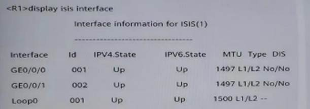
根据图中的信息，以下哪些选项中的推断是正确的 ?
A. R1 的 GEO/0/0 接口的 IS-ls 接口类型是 Leve1-1-2
B. R1 的 GEO/0/0 接口网络类型为 P2P
C. R1 的 GEO/0/1 接口使能了 IS-IS IPv6
D. R1 的 GEO/0/1 接口的 IS-Is 接口类型是 Leve1-
答案：AC
根据图中的信息，以下哪些选项中的推断是正确的 ?
A. R1 与 3000: FDEA::3 是 IBGp邻居
B. R1 访问 3002 : : 3/128 的最优出接口是 GigabitEtherneto/0/1
C. R1 与 3000: FDEA:: 3 这个地址建立了 TCp连接
D. R1 通过 IBGp学到路由 3002: :3/128
答案：BD
无馨辆利用 2 台路由器进行 IPv6 测试，他想要通过运行 OSPRV3 实现
lPv6 网络的互联互通。关于 R1 需要进行的 05PFv3
相关配置，下列哪些描述是正确的?
A. 可以在 R1 的 GEO/0/1 接口视图下执行 ospfv31area0 来使能该接口的
OSPFv3 功能
B. oSPFv3 进程只支持手工方式配置 Router ID
C. 可以在 R1 的 OSPFv3 的区域 O 视图下执行 network 2001 : DB8: 2345∶12∶
∶1 : ∶来开启 Loopbacko 接口的 OSPFV3 功能
D. 系统视图配置 R1 的全局 RouterID 后，若未在 0SPFv3 进程中配置 Router
ID，则 osPFv3 进程会继承全局 Router lD
答案：AB
某公司由一个篇会司和两个会公司组感，并使用 MPLSvPN
技术传递私网路由。在 ub&Spoke
的组网模式中，分公司只能与总公司收发路由，分公司之间不能相互直接收发路由。为了实现上述要求，
r 的设置可以是以民哪地芳染?"
A. 点公司:lmport Target : 100 : 10 ;ExportTarget , 10 : 100。分公司 1 :
lmport Target : 10: 100;分公司 2: lmportTarget : 10: 100 ; Export Target
: 100:10
B. 总公司，lmport Target : 100: 100 ; ExportTarget , 100: 100。分公司 1
: lmport Target : 100: 100 ; Export Target : 100 :100。分公司 2:Import
Target : 100 :100; Export Target : 100 ∶ 100
C. 总公司:lmport Target : 100: 10;Export_Target : 10:100，20∶
100。分公司 1 : lmport Target : 10: 100 ; ExportTarget : 100: 10. 分公司
2:lmport Target : 20: 100 ; Export Target : 100 :10
D. 总公司:lmport Target : 11: 11，22:22; Export Target : 100∶ 3。分公司
1:lmport Target : 100: 3 ; Export Target ;11:11. 分公司 2: Import Target
: 100 : 3 ;Export Target : 22: 22
答案：AD
MPLS 转发流程中，以下关于 Ingxess
节点处理过程的描述，正确的有哪些项?
A. 根据 FIB 表的 TunnellD 找到对应的 NLFE 表项，将 FTB 表项和 NLFE
表项关联起来
B. 查看 NHLFE 表项，可以得到出接口
.下一跳.出标签和标签操作类型，其中标签操作类型为 Swap
C. 在 Ip报文中压入出标签，同时处理 TTL，然后将封装好的 MPLS
报文发送给下一跳
D. lngress 节点收到数据包之后，查看 FIB 表，根据目的 Ip地址找到对应的
Tunne1lD
答案：ACD
以下关 BGP/MPLSIPVPN 的描述，正确的有哪些项?
A. 在 BGP/MPLS IPVPN 场景中，CE 和 PE 之间无需建立 VPNv4 邻居关系
B. 在 BGP/MPLS IP VPN 场景中，PE 之间通过 LDp传递 VPN 各由
C. 在 BGP/MPLS IP VPN 场景中，如果 PE 之间没有建立 MPLSLDp邻居关系，则
PE 之间不能传递 VPN 路由
D. 在 BGP/MPLS IPVPN 场景中，如果 PE 之间没有建立 VPNw4 邻居关系，则 PE
之间不能传递 VPN 路由
答案：AD
以下哪些情况会导致 DHCp客户端无法获取 Ip地址?
A. 地址池中没有可用的 Ip地址
B. 客户端与服务器不在同一个网段，未配置中继设备
C. 客户端的操作系统为 Linux
D. 客户端与服务器之间的链路有故障
答案：ABD
在剖接项目的项目调研阶段需要了解客户网络的哪些信息 ?
A. 业务模型
B. 静态信息
C. 硬件环境信息
D. 动态信息
答案：ABCD
某园区部署 OSPF 实现网络互通，其中 R2 的 LSDB
如图所示。以下关于该 LSDB 信息的描述，错误的有哪些项?
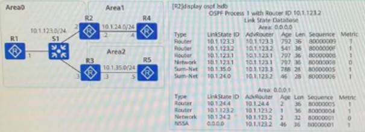
如图所示的拓扑，已知所有路由器运行 OSPFv3
协议，且邻居关系均正常建立，R1 上不会产生哪些类型的 LSA ?
A. Intra-Area-Prefix-LSA
B. Link-LSA
C. lnter-Area-Prefix-LSA
D. lnter-Area-Router LSA
答案：CD
中间人攻击或 IP/MAC Spoofing
攻击都会导致信息泄露等危害，且在内网中比较常见。为了防止中间人攻击或
IP/MAC Spoofing 攻击，可以采取以下哪些配置手段?
A. 限制交换机接口上允许学习到的最多 MAC 地址数目
B. 在交换机上配置 DHCP Snooping 与 IPSG 进行联动
C. 在交换机上配置 DHCP Snooping 与 DAl 进行联动
D. 开启 DHCpSnooping 检查 DHCpREQUEST 报文中 CHADDR 字段的功能
答案：BC
已知某交换机开启了 DKP Snoping 功能，且其 GEO/0/1
被配置为信任接口，其余接口为非信任接口，则该接口可能会发送以下哪些报文
?
A. DHCpREQUEST
B. DHCpOFFER
C. DHCpDISCOVER
D. DHCPACK
答案：AC
DHCp绑定表可以包含以下哪些信息 ?
A. 接入端口
B. Ip地址
C. 租约时间
D. MAC 地址
答案：ABCD
在域内即 LSVp网络中，数据包在进入公网被转发时，会被封装上两层
MPLS 标签。以下关于两层标签的描述，错误的有哪些项?
A. 内层标签的数值一定比外层标签的数值小
B. 内层和外层标签的数值一定不同
C. 默认情况下，内层标签在数据包转发给最后一跳设备前被弹出
D. 内层标签的数值一定比外层标签的数值大
答案：ABCD
由 3 台交换机组成的一个 MSIp域。以下哪些情祝会导致
MSTp域的状态不正常 ?
A. 域名不一致
B. 交换机发送 BPDU 报文的的时间间隔不一致
C. MSTp修订级别不一致
D. VLAN 到生成制树实例的映射不一致
答案：ACD
如果面对复杂的网络故障，并经过评估认为短时间内无法完成排障，而此时用户又急需恢复网络的可用性，以下做法中，错误的有哪些项
?
A. 始终尝试排除故障，不将当前的排障难度告知用户
B. 与用户沟通是否可以跳过故障节点，搭建替代的网络环境
C. 不通知客户的情况下，直接搭建替代的网络环境
D. 告诉用户这是不可能实现的
答案：ACD
如图所示，某网络部署 OSPF 实现网络互通，其中 Area1 部署为 Stub
区域， Area2 部署为 Total1yNSSA 区域， R4 的环回口 LoopbackO 未开启
0SPF，若在 R4 的 oSpF 进程内通过命令 import-route direct
将环回口地址引入到 OSPF 网络中，使得其他设备可以访问该环回口地址，则
Area1 内会泛洪以下哪些项的 LSA ?
A. 4 类 LSA
B. 3 类 LSA
C. 5 类 LSA
D. 2 类 LSA
答案：BD
某 lS-IS 路由器 R1
的部分配置如图所示，以下关于该部分配置的分析，错误的有哪些项?
A. 由于 R1 的 IS-IS 进程 2 和 3 分别绑定了不同的 VPI 实例，因此 R1 的
IS-IS 进程 2 和 3 中路由信息相互隔离
B. IS-IS 支持多进程和多实例特性，且 IS-IS 多进程共用一个路由表，因此 R1
的 IS-IS 进程 1. 2 和 3 中路由信息相同
C. 若 R1 的 GEO/0/1 接口配置了命令 isis
enable1，该接口还可以进一步配置命令 isisanble2 与进程 2 相关联
D. R1 的 IS-IS 进程 2 定了 VPN tt，还可以通过命令 isis2 von-instance rr
将进程 2 与 VPN rr 相绑定。
答案：BCD
以下哪些项能被正则表达式30. 成功匹配?
A. 200 100 300
B. 100 200 300
C. 300 200 100
D. 300 100 200
答案：CD
以下哪些项的 Community 属性能够保证 BGp路由器不向其
EBGp对等体发送 BGp路由条目?
A. No-Advertise
B. No-Export
C. Internet
D. No_Export_Subconfed
答案：AB
以下选项中，哪些 0SPFV3 LSA 不会在多个区域内中泛洪?
A. NSSA LSA
B. Inter-Area-Prefix-LSA
C. Intra-Area-Prefix-LSA
D. AS-external-LSA
答案：ABC
在 MPLS VPN 中，为了区分使用相同地址空间的 IPv4 前缀，将 lPv4
的地址增加了 RD 值，以下描述正确的有哪些项?
A. 发布可达路由时，在 P_REACHNLRI 中携带 RD 值
B. RD 的总长度为 8 个字节
C. 撤销不可达路由时，在 P_UWREACHNLRT 中携带 RD 值
D. 在 PE 设备上，每一个 VPN 实例都对应一个 RD 值，不同 PE 设备上的 RD
值必须相同
答案：ABC
以下关于 MPLS 标签的描述，正确的有哪些项 ?
A. WPLS 体系有多种标签发布协议，如 LDP.MP-BGP.RIP
B. lmplicit WULL Label 的数值为 3
C. MPLS 支持单层标签，同时也支持多层标签
D. 标签是一个长度固定.只具有本地意义的标识符，用于唯一标识一个分组所属的
FEC
答案：BCD
某公司由一个总公司和两个分公司组成，并使用 IPLSVPN
技术传递私网路由。在
ub5poke的组网模式中，分公司只能与总公司收发路由，分公司之间不能相互直接收发路由。为了实现上述要求，
RT 的设置可以是以下哪些方案?
A. 总公司:lmport Target : 100 : 100 ; ExportTarget : 100: 100。分公司 1
: Import Target : 100 : 100 ; Export Target : 100 :100 。分公司 2:
Inmport Target : 100 :100 ; Export Target : 100 : 100
B. 总公司:lmport Target : 100 : 10 ; ExportlTarget : 10: 100，20:
100。分公司 1:lmport Target : 10: 100 ; Export Target ;100 : 10。分公司
2: lmport Target : 20 :100;Export Target : 100 ∶ 10
C. 总公司:lmport Target : 11:11，22:22; Export Target : 100:3。分公司
l:lmport Target ; 100: 3 ; Export Target :11: 11. 分公司 2:lmport Target
: 100 : 3 ;Export Target : 22 : 22
D. 总公司:lmport Target : 100 : 10 ; ExportTarget : 10: 100。分公司 1 :
lmport Target : 10: 100; Export Target : 100:10. 分公司 2:lmport Target
: 10 : 100 ;Export Target : 100: 10
答案：BCD
以下哪些原因可能会引起 BGP 邻居关系故障?
A. 邻居配置的 Keepalive 时间和本地配置的 Keepalive 时间不一致
B. 用 Loopback 口建立 EBGp邻居未配置 peerebgp-max-hop
C. 邻居的 AS 号与本地的 AS 号不一致
D. ACL 过滤了 TCp流量
答案：BCD
以下哪些情况不影响 IS-IS 邻居关系建立，但是影响 IS-IS
路由计算?
A. Cost 类型不一致
B. IS-IS Level-1 路由器区域号不一致
C. 对多拓扑功能支持不一致
D. IS-IS Level-2 路由器区域号不一致
答案：AC
以下哪些情况会导致 DHCp客户端无法获取 Ip地址?
A. 客户端的操作系统为 Linux
B. 客户端与服务器不在同一个网段，未配置中继设备
C. 客户端与服务器之间的链路有故障
D. 地址池中没有可用的 Ip地址
答案：BCD
网络工程师收到故障报告后，可以收集以下哪些信息尽快排除故障
?
A. 故障发生前客户做了哪些操作
B. 客户的性别与年龄
C. 故障发生的时间
D. 客户的职级与工作权限
答案：AC
某公司由一个总公司和两个分公司组成， 并使用 PLSVPN
技术传递私网路由在 Hub&Spoke
的组网模式中，分公司只能与总公司收发路由，分公司之间不能相互直接收发路由。为了实现上述要求，
RT 的设置可以是以下那些方案?
A. 总公司:lmport Target : 100: 10 ; Export Target : 10: 100。分公司 1 :
lmport Target : 10 : 100; Export Target : 100 :10。分公司 2: lmport
Target : 10:100 ;Export Target : 100∶ 10
B. 总公司:lmport Target : 100 : 10 ;ExportTarget : 10 : 100，20 :
100。分公司 1:lmport Target : 10: 100; Export Target :100: 10。分公司 2.
Import Target : 20 :100 ; Export Target : 100 : 10
C. 总公司:lmport Target : 100: 100 ; ExportTarget : 100: 100。分公司 1 :
lmport Target : 100: 100 ; Export Target : 100 :100。分公司 2:Import
Target : 100 :100 ;Export Target : 100: 100
D. 总公司:lmport Target : 11: 11，22 :22 ; Export Target : 100 ∶
3。分公司 1:lmport Target : 100 : 3 ; Export Target :11∶11。分公司 2:
lmport Target : 100 :3 ; Export Target : 22: 22
答案：ABD
如果面对复杂的网络故障，并经过评估认为短时间内无法完成排障。而此时用户又急需恢复网络的可用性，以下做法中，错误的有哪些项
?
A. 告诉用户这是不可能实现的
B. 与用户沟通是否可以跳过故障节点，搭建替代的网络环境
C. 不通知客户的情况下，直接搭建替代的网络环境
D>始终尝试排除故障，不将当前的排障难度告知用户
答案：ACD
在割接项目的项目调研阶段需要了解客户网络的哪些信息 ?
A. 动态信息
B. 业务模型
C. 静态信息
D. 硬件环境信息
答案：ABCD
如图所示，R1. R2. R3. R4 都部署为 OSPF 区域 0，链路的 cost
值如图中标识。R1. R2. R3. R4 的 LoopbackO 通告入 OSPF。R1. R2. R3 与 R4
使用 Loopback0 作为连接接口，建立 IBGp对等体关系，其中 R4 为 RR
设备，R1. R2. R3 是 R4 的客户端。当 R4 的直连地址 172. 20. 1. 4/32
通告入 BGp后，以下关于 R1 访间 172. 20. 1. 4/32
的描述，正确的有哪些项?
A. 若 R3 配置了 stub-router on-startup，当 R3 掉电再启动后， R1 仍能访问
172. 20. 1. 4/32，且路径为 R1-R2-R4 为 R1-R3-R4
过一段时间后自动切换路径
B. 若 R3 配置了 stub-router on-startup，当 R3 掉电再启动后， R1 仍能访问
172. 20. 1. 4/32，且路径为 R1-R2-R4 手动配置实现若要切换路径为 R1-R3-R4
册
C. 当 R3 掉电再启动后， R1 仍能持续访问 172. 20. 1. 4/32，且路径为
R1-R2-R4
D. 当 R3 掉电后， R1 若要访问 172. 20. 1. 4/32，会将路径切换为
R1-R2-R4
答案：AD
网络管理员A 希望使用 ACL 匹配特定的
BGp路由条目，请问以下哪些路由条目能被图中的 ACL 规则匹配?
A. 10. 0. 0，0/04
B. 10. 0. 0. 6/33
C. 10，0. 4. 0/24
D. 10，0. 3， 1/33
答案：AC
在多集群 R 组网中，每个集群中部署了一台 RR
设备及其客户机，各集群的 RR 互为非客户机关系，并建立
IBGp全连接。以下关于 BGp路由反射器发布路由规则的描述，正确的
有哪些?
A. 若某 RR 从 EBGp对等体学到的路由，此 RR 会传递给其他集群的 RR
B. 若某 RR 从非客户机 IBGp对等体学习到的路由，此 RR
会传递给其所有客户机
C. 若某 R 照从客户机学习到的路由，此 RR 会传递给其他集群的 RR
D. 若某 R 照从另一集群 RR 学习到的路由，由于 IBGp水平分割原则，此 RR
不会传递给其客户机
答案：ABC
以下哪些项能被正则表达式30. 成功匹配?
A. 300 200 100
B. 200 100 300
C. 100 200 300
D. 300 100 200
答案：AD
根据图中的信息，以下哪些选项中的推断是正确的 ?
A. R1 访间 3002: : 3/128 的最优出接口是 GigabitEtherneto/0/1
B. R1 与 3000: FDEA:: 3 是 IBGp邻居
C. R1 通过 IBGp学到路由 3002: :3/128
D. R1 与 3000: FDEA:3 这个地址建立了 TCp连接
答案：ABCD
以下哪些关于 BGP4+的 P_REACHNLRI 属性的描述是正确的?
A. 携带 IPv6 路由前缀和掩码信息
B. 下一跳地址长度可以为 16 或者 32
C. AFT ( address family )值为2. 代表传递的是 IPv6 路由
D. 当下一跳地址长度为 16 时， NetworkAddress of Next
Hop字段携带的一定是全球单播地址
答案：ABCD 多选
根据图中的信息，以下哪些选项中的推断是正确的 ?
A. R1 的设备类型肯定是 Level-1-2
B. R1 没有 IS-IS 的 IPv4 路由
C. R1 的 GigabitEthernetO/0/1 一定使能了 IS-ISlPv6
D. R1 有 6 条 IS-IS 的 IPv6 路由
答案：CD
以下关于 VLA 聚合的描述，错误的是哪些项 ?
A. 一个 Super-VLAN 可以包含一个或多个 Sub-VLAN
B. Sub-VLAN 用于隔离广播域
C. Sub-VLAI 包含物理接口，可以建立三层 VLANIF 接口
D. Super-VLAN 只包含物理接口，不能建立三层 VLANIF 接口
答案：CD
中间人攻击或 IP/MACSpoofing
攻击都会导致信息泄露等危害，且在内网中比较常见。为了防止中间人攻击或
IP/WACSpoofing 攻击，可以采取以下哪些配置手段?
A. 在交换机上配置 DHCP Snooping 与 IPSG 进行联动
B. 在交换机上配置 DHCP Snooping 与 DAl 进行联动
C. 限制交换机接口上允许学习到的最多 MAC 地址数目
D. 开启 DHCpSnooping 检查 DHCpREOUEST 报文中 CHADDR 字段的功能
答案：AB
以下关于 MPLS 标签格式的描述，正确的有哪些项 ?
A. Exp字段长度为 3bit，通常用于标识报文优先级
B. S 字段长度为 1bit，值为 1 时表明为最底层标签
C. 有 VLAN tag 时， MPLS 头放在以太头与 VLANtag 之间
D. MPLS 单个标签的总长度为 4 个字节
答案：ABD
割接完成后，一般需要针对下列进项中的哪些项目进行检查 ?
A. 物理拓扑
B. 控制层面表项
C. 数据流向
D. 逻辑括扑
答案：ABCD
在割接项目的项目调研阶段需要对现网硬件环境进行观察，主要包括以下哪些内容
?
A. 设备的位置
B. ODF 位置
C. 接口标识
D. 光纤接口对应关系
答案：BCD
以下哪些项能被正则表达式_10*成功匹配 ?
A. 10
B. 100
C. 1
D. 11
答案：ABC
下列选项中，哪些关于 OSPFv2. OSPFv3 之间区别的描述是正确的?
A. OSPFv2. OSPFv3 都支持接口认证，但 OSPFv3 的认证只能基于 IPv6
拓展头部实现
B. OSPFv2. OSPFv3 存在相同类型的报文 ( Hello.D D. LSR.LSU.LSAck )
，但它们报文中的字段有所不同
C. OSPFv3 与 OSPFv2 类似，使用组播地址作为 OSPF 报文目的地址
D. OSPFv2 在 IPv4 报文头部中的协议号为 89 ，OSPFv3 在 IPv6
报文头部中的下一报头号为 89
答案：ABCD
以下关于 MPLS LDp标签保持方式的描述，正确的有哪些项 ?
A. 保守标签保持方式节省内存和标签空间
B.
保守标签保持方式只保留来自下一跳邻居的标签，丢弃所有非下一跳邻居发来的标签
C.
保守标签保持方式只保留来自下一跳邻居的标签，丢弃所有非下一跳邻居发来的标签
D. 保守标签保持方式需要更多的内存和标签空间
答案：ABC
以下哪些关于 IS-IS ( lPv6 )的描述是正确的?
A. IS-IS 工作在数据链路层，只需要增加新的 TLV 即可支持 IPv6
B. 为了支持 IPv6 路由的处理和计算， IS-IS 新增了 TLV232. 236
C. 默认情况下，IS-IS 开启了多拓扑特性，即 IPv4 和 IPv6
在不同的拓扑中进行 SPF 计算
D. 为了支持 IPv6 路由的处理和计算， IS-IS 在 129 TLV 中新增了
NLPID
答案：BD
根据图中的信息，以下哪些选项中的推断是正确的 ?
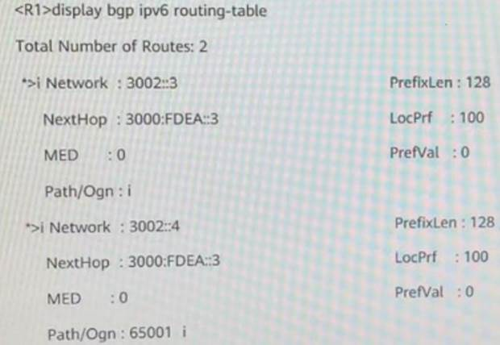
A. R1 具备 3002: : 3/128 和 3002: : 4/128 的路由
B. 如果没有配置关于 AS_Path 的路由策略，那么 3002 : : 4/128 一定起源于
AS 65001
C. 若 3002 : : 3/128 这条路由的属性未经过任何策略修改，则 3002 : :4/128
这条路由下—跳经过了修改
D. 3002 : :3/128 和 3002 : : 4/128 这两条路由均是通过 network 命令加入到
BGp路由表的
答案：ABD
在某台交换机上进行了如图所示的配置，则下列哪些选项中的描述是正确的
?
A. 首先需要创建 DHCp服务器组并向服务器组添加 DHCp服务器
B. DHCp服务器上必须存在到达 VLANIF100 的路由
C. DHCp服务器和 DHCP delay 都必须全局开启 DHCP
D. VLANIF100 接口会将接收到的 DHCp报文，通过中继发送到外部
DHCpServer
答案：ABCD
以下哪些安全 MAC 地址类型在设备重启后表项不会丢失 ?
A. 安全动态 MAC 地址
B. Sticky MAC 地址
C. 安全静态 MAC 地址
D. 安全静态 MAC 地址
答案：BCD
在 BGP/MPLS lP VPN 中，PE 上分配私网标签的方式有以下哪些项?
A. 基于平台的 MPLS 标签分配
B. 基于 VPN 实例的 MPLS 标签分配
C. 基于路由的 MPLS 标签分配
D. 基于接口的 MPLS 标签分配
答案：AD
以下关于 MPLS 标签的描述，正确的有哪些项 ?
A. MPLS 支持单层标签，同时也支持多层标签
B. lmplicit NULL Label 的数值为 3
C. 标签是一个长度固定.只具有本地意义的标识符，用于唯一标识一个分组所属的
FEC
D. MPLS 体系有多种标签发布协议，如 LDP.MP-BGP，RIP
答案：ABC
某公司由一个总公司和两个分公司组成，并使用 MPLS VPN
技术传递私网路由。在 Hub&Spoke
的组网模式中，分公司只能与总公司收发路由，分公司之间不能相互直接收发路由。为了实现上述要求，
RT 的设置可以是以下哪些方案?
A. 总公司: lmport Target : 100∶ 100 ;Export Target : 100: 100，分公司
1:lmport Target : 100 : 100 : ExportTarget : 100: 100，分公司 2: Import
Target : 100: 100: Export Target :100: 100
B. 总公司: lmport Target : 100 : 10:Export Target : 10: 100，20 ∶
100，分公司 1 : lmport Target , 10 ∶ 100，ExportTarget : 100∶ 10. 分公司
2: lmport Target : 20 : 100 : Export Target : 100 :10
C. 总公司: lmport Target : 11 ∶11. 22:22 : Export Target : 100∶3.
分公司1∶lmport Target : 100 : 3s Export Target11:11，分公司 2: lmport
Target : 100 :3 ; Export Target : 22∶ 22
D. 总公司:lmport Target : 100 : 10 ;Export Target : 10: 100. 分公司
1:lmport Target : 10 : 100 : Export Target :100 : 10. 分公司 2: lmport
Target : 10:100 ; Export Target : 100 : 101
答案：BD
设备产生的信息可以向多个方向输出信息，为了便于各个方向信息的输出控制，信息中心定义了
10
条信息通道，使通道之间独立输出，缺省情况下，以下哪些通道对应的输出方向可以接收
Trap信息?
A. console 通道
B. 1ogbuffer 通道
C. srmpagent 通道
D. trapbuffer 通道
答案：ACD
网络工程师收到故障报告后，可以收集以下哪些信息尽快排除故障
?/
A. 故障发生前客户做了哪些操作
B. 客户的性别与年龄
C. 客户的职级与工作权限
D. 故障发生的时间
答案：AD
以下哪些情况会导致 DHCp客户端无法获取 Ip地址?
A. 客户端与服务器不在同一个网段，未配置中继设备
B. 地址池中没有可用的 Ip地址
C. 客户端与服务器之间的链路有故障
D. 客户端的操作系统为 Linux
答案：ABC
在 lS-IS 网络中，若某 lS-IS 路由器配置命令 cost-style
compatible。则以下关于该场景的描述，正确的有哪些项 ?
A. 这条命令将该设备的接口开销范围设置为 1’63
B. cost-style 命令是用来设置 lS-IS 设备接收和发送路由的开销类型
C. 该设备不能接收和发送开销类型为 wide 的路由
D. 该设备能接收和发送开销类型为 narrow 的路由
答案：BD
某 lS-IS 路由器 R1
的部分配置如图所示，以下关于该部分配置的分析，错误的有哪些项?
A. IS-IS 支持多进程和多实例特性，且 IS-IS 多进程共用一个路由表，因此 R1
的 IS-IS 进程 1. 2 和 3 中路由信息相同
B. R1 的 IS-IS 进程 2 绑定了 VPN tt，还可以通过命令 isis 2 vpn-instance
rr 将进程 2 与 VPN rr 相绑定
C. 由于 R1 的 IS-IS 进程 2 和 3 分别绑定了不同的 VPN 实例，因此 R1 的
IS-IS 进程 2 和 3 中路 由信息相互隔高
D. 若 RI 的 GEO/0/1 接口配置了命令 isis
enable1，该接口还可以进一步配置命令 isis enble2 与进程 2 相关联
答案：ABD
在 OSPFv3 Stub 区域内可以抓取到以下哪些 LSA ?
A. Network-LSA
B. Link-LSA
C. lnter-Area-Router-LSA
D. lntra-Area-Prefix-LSA
答案：ABD
MPLS 中有转发等价类 FEC 的概念，以下描述中错误的有哪些项? FEC
的划分很灵活，可以是以源地址.目的地址 .源端口.目的端口.协议类型或 VPN
等为
A. 划分依据的任意组合
B. 一台路由器为一个 FEC 分配多个标签
C. 一个 FEC 在不同路由器上一定分配不同的标签
D. 一个 FEC 在不同路由器上一定分配相同的标签
答案：BCD
网络运维包括网络配置管理与网络监控管理，以下哪些项可以实现网络的配置管理功能
?
A. SNMP
B. Syslog
C. NETCONF
D. CLI
答案：ACD
以下哪些项会引起 VRRp备份组震荡 ?
A. 传输 VRRp通告报文的链路震荡
B. Backup设备接口丢包
C. 两端的 VRRp备份组抢占延时配置不一致
D. 通告报文的时间间隔过小
答案：ABCD
割接完成后，一般需要针对下列选项中的哪些项目进行检查 ?
A. 逻辑拓扑
B. 控制层面表项
C. 数据流向
D. 物理拓扑
答案：ABCD
若在交换机上执行如图所示的配置命令，则下列哪些选项中的描述是错误的
?

A. 若有一台 DHCp服务器接入该交换机的 GEO/0/1 口，则该
DHCp服务器可以正常地为 DHCP 客户端分配地址
B. 当前配置可以用来防止 DHCP Server 仿冒者攻击
C. 当前配置开启 DHCP Snooping 配置可以用来防止 ARp欺骗攻击
D. 当该交换机收到 DHCp请求报文时，若该报文中没有 Option82 选项，则插入
Option82 选项
答案：ABD
网络管理员A 想使用 AS-Path Filter 匹配到 BGp路由属性 AS_PATH[100
200 300]的路由条目，请问以下哪些项的配置可以满足网络管理员A
的要求?
A. ipas-path-filter 1 permit $
B. ipas-path-filter 1 permit.*
C. ipas-path-filter 1 permit_300$
D. ipas-path-filter 1 permit 10.
答案：ABCD
如果面对复杂的网络故障，并经过评估认为短时间内无法完成排障，而此时用户又急需恢复网络的可用性，以下做法中，错误的有哪些项
?
A. 始终尝试排除故障，不将当前的排障难度告知用户
B. 告诉用户这是不可能实现的
C. 与用户沟通是否可以跳过故障节点，搭建替代的网络环境
D. 不通知客户的情况下，直接搭建替代的网络环境
答案：ABD
通过在交换机 ST1 上执行命令 displaymac-address flapping record
可以查看 STI 上所有的 MAC 地址漂移的记录。如图所示。MAC 地址
0000-0000-0007 可能发生过几次地址漂移?
A. 65534
B. 300
C. 65536
D. 65535
答案：CD
某 lS-IS 路由器 RI
的部分配置如图所示，以下关于该部分配置的分析，错误的有哪些项?
A. 若 R 的 GEO/0/1 接口配置了命令 isis
enable1，该接口还可以进一步配置命令 isis enble2 与进程 2 相关联
B. 由于 R1 的 IS-IS 进程 2 和 3 分别绑定了不同的 VPN 实例，因此 R1 的
IS-IS 进程 2 和 3 中路由信息相互隔离
C. IS-IS 支持多进程和多实例特性，且 IS-IS 多进程共用一个路由表，因此 R1
的 IS-IS 进程 1. 2 和 3 中路由信息相同
D. R1 的 IS-IS 进程 2 绑定了 VPN tt，还可以通过命令 isis 2 vpn-instance
rr 将进程 2 与 VPN rr 相绑定
答案：ACD
IS-IS 路由协议具有良好的扩展性，在现网中广泛应用。关于 IS-IS
扩展性，以下哪些描述是正确的?
A. NLPID 是 IS-IS 为了支持 lPv6 新增的一种 TLV
B. 不同于 OSPFv2， IS-IS 报文直接在数据链路层上转发
C. IS-IS 为了支持 lPv6 路由的处理和计算，新增了两个 TLV
D. IS-IS 使用 TLV 结构构建报文，使 lS-IS 更具灵活性和扩展性
答案：BCD
根据图中的信息，以下哪些选项中的推断是正确的 ?

A. R1 的 GEO/0/1 接口的 IS-IS 接口类型是 Level-1
B. R1 的 GEO/O/1 接口使能了 IS-IS IPv6
C. R1 的 GEO/O/0 接口网络类型为 P2P
D. R1 的 GEO/O/0 接口的 IS-IS 接口类型是 Level-1-2
答案：BD
如图所示，某网络部署 OSPF 实网络互通，其中 Area1 部署为 Stub
区域， Area2 部署为 Totally NSSA 区域， R 的环回口 LoopbackO 未开启
OSPF,若在 R2 的 OSPF 进程内通过命令 import-routedirect
将环回口地址引入到 OSPF 网络中，使得其他设备可以访问该环回口地址，则 R4
会收到以下哪些由 R3 发布的 LSA?
A. 7 类 LSA 描述缺省路由
B. 3 类 LSA 描述缺省路由
D. 1 类 LSA 描述 R3 的接口信息.
D. 3 类 LSA 描述区域 0 中 R3-R2 互联网段的明细信息.
答案：ABC
若在交换机上执行如图所示的配置命令，则下列哪些选项中的描述是错误的
?
A. 当前配置开启 DHCP Snooping 配置可以用来防止 ARp欺骗攻击
B. 当前配置可以用来防止 DHCP Server 仿冒者攻击
C. 当该交换机收到 DHCp请求报文时，若该报文中没有 Option82 选项，则插入
0ption82 选项
D. 若有一台 DHCp服务器接入该交换机的 GEO/0/1 口，则该
DHCp服务器可以正常地为 DHCP 客户端分配地址
答案：BCD
以下关于 MPLS LDp标签保持方式的描述 ,正的的有哪些项?
A. 自由标签保持方式保留邻居分发的所有标签
B. 保守标签保持方式节省内存和标签空间
C. 保守标签保持方式需要更多的内存和标签空间
D. 保守标签保持方式只保留来自下一跳邻居的标签
,丢弃所有非下一跳邻居发来的标签
答案：ABD
如图所示的 PIM-SM 组播网络， R3 为 RP，所有路由器运行
OSPF，且每条链路的 Cost值相等，R2 和 R4 配置了永远不发起 SPT 切换，则
Receiver1 和 Receiver2 接收组播数据流的稳定路径分别是以下哪项?(多选
)
A. Receiver1:Sourcel-R1-R2-R3-R4-Receiver1
B. Receiver2:Sourcel-R1-R2-Receiver2
C. Receiver1:Sourcel-R1-R4-Receiver1
D. Receiver2:Sourcel-R1-R2-R3-R2-Receiver2
答案：AD
割接验收完成后,在收尾阶段还需要执行的工作一般包括哪些 ?
A. 资料移交
B. 转维培训
C. 现场守局
D. 割接后快照
答案：AB
以下哪些项的 Community 属性能够保证 BGp路由器不向其
EBGp对等体发送 BGp路由条目?
A. No_Advertise
B. lnternet
C. No_Export
D. No_Export_Subconfed
答案：AC
在 OSPFv3 Stub 区域内可以抓取到以下哪些 LSA?
A. Link-LSA
B. Inter-Area-Router-LSA
C. Intra-Area-Prefix-LSA
D. Network-LSA
答案：ACD
下列选项中，哪些关于 OSPFv2. OSPFv3 之间区别的描述是正确的?
A. OSPFv2 在 IPv4 报文头部中的协议号为 89，OSPFv3 在 IPv6
报文头部中的下一报头号为 89
B. OSPFv3 与 OSPFv2 类似，使用组播地址作为 OSPF 报文目的地址
C. OSPFv2. OSPFv3 存在相同类型的报文 ( Hello.DD. LSR.LSU.LSAck )
，但它们报文中的 字段有所不同
D. OSPFv2. OSPFv3 都支持接口认证，但 OSPFv3 的认证只能基于 IPv6
拓展头部实现
答案：ABCD
为了防止仿冒 DHCp服务器接入网络，可以在交换机上开启 DHCpSnooping
功能，配置步骤包括以下哪些选项?
A. 配置接口信任状态
B. 使能接口的 IPSG 功能
C. 使能接口或 VLAN 的 DHCpSnooping 功能
D. 使能全局 DHCp功能
答案：ACD
以下关于 VLAN 聚合的描述，错误的是哪些项 ?
A. Sub-VLAN 包含物理接口，可以建立三层 VLANIF 接口
B. Super-VLAN 只包含物理接口，不能建立三层 VLANIF 接口
C. Sub-VLAN 用于隔离广播域
D. 一个 Super-VLAN 可以包含一个或多个 Sub-VLAN
答案：AB
在某台交换机上进行了如图所示的配置，则下列哪些选项中的描述是正确的
? [Huawei]dhcpenable [Huawei]interface vlanif 10o
[Huawei-vlanif100]dhcpselect relay [Huawei-vlanif100]dhcprelay
server-select dhcpgroup1
A. 首先需要创建 DHCp服务器组并向服务器组添加 DHCp服务器
B. DHCp服务器和 DHCP delay 都必须全局开启 DHCP
C. VLANIF 100 接口会将接收到的 DHCp报文，通过中继发送到外部
DHCpServer
D. DHCp服务器上必须存在到达 VLANIF 100 的路由
答案：ABCD
若网络设备出现了丢包或错包情况，通过以下哪些功能帮助故障定位
?
A. 执行命令 terminal debugging，使终端显示 Debug 信息
B. 执行命令 11dpenable，使设备能够解析邻居发送的 LLDp报文
C. 执行命令 capture-packet，对业务报文进行捕获
D. 执行命令 display interface，查看设备接口状态
答案：ACD
如图所示，R1/R2/R3 运行 OSPF 协议，以下哪些原因将会导致R3 到达
10. 0. 12. 0/24 网段，不存在等价路由?
A. R3 未开启负载分担功能
B. R1/R3. R2/R3 之间的链路 Cost 值不同
C. R1 未开启负载分担功能
D. R1/R2 与 R1/R3. R2/R3 之间的链路 Cost 值不同，但是 R1/R3. R2/R3
之间的链路 Cost 值相同
答案：AB
(多选题)以下关于 MPLS 标签的描述，正确的有哪些项?
A. KPLS 支持单层标签，同时也支持多层标签
B. lmplicit NULL Label 的数值为 3
C. 标签是一个长度固定.只具有本地意义的标识符，用于唯一标识一个分组所属的
FEC
D. KPLS 体系有多种标签发布协议，如 LDP，MP-BGP，RIP
答案：ABC
(多选题)如图所示， R1. R2. R3. R4 都部署为 OSPF 区域 0，链路的
cost 值如图中标识。R1. R2. R3. R4 的 LoopbackO 通告入 OSPF。 R1. R2. R3
与 R4 使用 Loopback0 作为连接接口，建立 IBGp对等体关系，其中 R4 为 RR
设备，R1. R2. R3 是 R4 的客户端。当 R4的直连地址 172. 20. 1. 4/32 通告入
BGp后，以下关于 R1 访问 172. 20. 1. 4/32 的描述，正确的有哪些项 ?
A. 若 R3 配置了 stub-router on-startup，当 R3 掉电再启动后， R1 仍能访问
172. 20. 1. 4/32，且路径为 R1-R2-R4，过一段时间后自动切换路径为
R1-R3-R4
B. 当 R3 掉电后， R1 若要访问 172. 20. 1. 4/32 ，会将路径切换为
R1-R2-R4
C. 当 R3 掉电再启动后， R1 仍能持续访问 172. 20. 1. 4/32，且路径为
R1-R2-R4
D. 若 R3 配置了 stub-router on-startup，当 R3 掉电再启动后， R1 仍能访问
172. 20. 1. 4/32，且路径为 R1-R2-R4，若要切换路径为 R1-B3-R4
需手动配置实现
答案：AB
(多选题)如图所示， R1. R2. R3 和 R4 运行 OSPF，并建立
IBGp全互联，其中 R3 是 R2的备份设备。当网络环境稳定时，R1 访问 10. 1. 5.
5/32 的流量路径为:R1-R2-R4-R5;当 R2 设备故障时，流量会切换到备份路径
R1-R3-R4-R5，以下关于该场景的描述，正确的有哪些项 ?
A. 若在 R2 上开启 OSPF 与 BGp联动技术，则可在 R2
故障恢复后，BGp收敛完成前，将 R2 保持为 Stub
路由器，从而保障该设备不会转发数据
B. 当 R2 故障恢复后，由于 OSPF 收敛速度比 BGp快，因此当流量再次转发到 R2
时，由于 BGP 未完成收敛，可能造成流量丢失
C. 若在 R3 上开启 OSPF 与 BGp联动技术，则可在 R2
故障恢复后，BGp收敛完成前，将 R3 保持为 Stub
路由器，从而保障该设备优先进行数据转发
D. 当 R2 故障恢复后，由于 OSPF 收敛速度比 BGp快，因此在
BGp收敛完成前，流量不会被发送到 R2 设备
答案：AB
(多选题)如图所示， R1 与 R2 之间希望通过 OSPFv3 传递 IPv6
路由，已知两台路由器上均配置了 OSPFv3，进程号均为 1，且 oSPFv3
邻居关系已正常建立，但查看 R1 路由表发现没有到达 R2
环回口地址的路由，以下哪些选项可能会造成这种现象 ?
(多选题)根据图中的信息，以下哪些选项中的推断是正确的 ?
A. R1 具备 3002::3/128 和 3002:-4/128 的路由
B. 3002:.3/128 和3002. 4/128 这两条路由均是通过 network 命令加入到
BGp路由表的若
C. 3002:. 3/128 这条路由的属性未经过任何策略修改，则3002. .4/128
这条路由下一跳经过了修改
D. 如果没有配置关于 AS_Path 的路由策略，那么 3002:.4/128 一定起源于 AS
65001
答案：ABD
(多选题)DHCP Snooping 是一种
DHCp安全特性，这项技术可以防御以下哪些攻击 ?
A. DHCpServer 仿冒者攻击
B. 针对 DHCp客户端的畸形报文泛洪攻击
C. 仿冒 DHCp报文攻击
D. DHCpServer 的拒绝服务攻击
答案：ACD
(多选题)两台 PE 之间通过 MP-BGp传播 VPNv4 路由，以下哪些场景下 PE
不会将接收到的 VPNv4 路由添加到 VPN 实例路由表?
A. 下一跳不可达
B. 对于 RR 发送的 VPNv4 路由，收到的路由中 cluster_list 包含自己的
cluster_id
C. 与本地的各个 VPN 实例的 Export Target 属性均不匹配
D. 与本地的各个 VPN 实例的 lmport Target 属性均不匹配
答案：ABD
(多选题)以下关于 MPLS 对 TIL 处理的描述，正确的有哪些项 ?
A. 在 Pipe 模式下，如果 Ingress PE 发出的 MPLS 报文的 TTL 值为 254，则
Egress PE 发出的 IP 报文的 TTL 值为 253
B. 如果需要隐藏 MPLS 骨干网络的结构，对于私网报文，在 lngress 上使用
Pipe 模式
C. 如果设置为 Pipe 模式，则 Ip分组经过 MPLS 网络时，无论经过多少跳，
IPTIL 只在入节点和出节点分别减 1
D. 缺省情况下，MPLS 对 TTL 的处理模式为 Uniform
答案：ABCD
(多选题)在域内 MPLS VPN
网络中，数据包在进入公网被转发时，会被封装上两层 MPLS
标签。以下关于数据包处理过程的描述，正确的有哪些项?
A. p设备收到的数据包携带两层标签
B. Egress PE 设备发给 CE 设备的数据包不携带标签
C. 缺省情况下，数据包在倒数第二跳设备上弹出外层标签后转发给 Egress PE
设备
D. 倒数第二跳设备收到的数据包内层标签为 3
答案：ABC
(多选题)某交换机无法学习到正确的 MAC
转发表项，则可通过以下哪些方式进行问题排查?
A. 通过在接口视图下执行命令 display this，查看接口下是否配置了 MAC
地址学习去使能
B. 通过执行命令 display mac-address，查看 MAC 地址.VLAN
和设备接口的绑定关系是否正确
C. 检查网络中是否出现环路导致的 MAC 表项振荡
D. 通过执行命令 display mac-address summary，查看设备目前学习到的 MAC
地址数量是否达到产品支持的最大规格
答案：ABCD
(多选题)由 3 台交换机组成的一个 MSTp域，以下哪些情况会导致
MSTp域的状态不正常?
A. 域名不一致
B. MSTp修订级别不一致
C. VLAN 到生成树实例的映射不一致
D. 交换机发送 BPDU 报文的时间间隔不一致
答案：ABC
(多选题)以下关于 OSPF IpFRR 功能的描述，正确的有哪些项?
A. OSPF IPFRR
的流量保护分为链路保护和节点链路双保护，其中链路保护是指被保护的对象是经过特定链路的流量
B. OSPF IpFRR 利用 LFA 算法，以可提供备份链路的邻居为根节点，通过 SPF
算法计算出目的节点的最短距离，再根据不等式计算出开销最小且无环的备份链路
C. 当网络出现故障时，OSPF IP FRR 可以将流量快速切换到备份链路上
D. 可以将 BFD 会话与 OSPF IpFRR 进行绑定，当 BFD 检测到链路故障后， BFD
会话状态会变为 Down
并触发接口进行快速重路由，将流量从故障链路切换到备份链路上
答案：ABCD
(多选题)以下关于 IS-IS 路由渗透的描述，正确的有哪些项?
A. 路由渗透功能可以结合 ACL.路由策略 .Tag
标记等功能使用，筛选符合条件的路由渗透到另一个区域
B. 缺省情况下，Level-2 区域无 Level-1 区域的路由信息，需要通过在
Level-1-2 设备上配置 import-route isis level-1 into level-2 命令，实现将
Level-1 区域的路由渗透到 Level-2 区域中
C. 若要配置 Level-2 区域的路由向 Level-1 区域渗透， 则需要在 Level-1
设备上配置命令 import-route isis level-2 into level-1
D. 路由渗透可以解决Level-1 区域有多台 Level-1-2 设备与Level-2
区域相连时的次优路由问题
答案：AD
(多选题)以下哪些
BGp路由匹配工具可以使用正则表达式来定义匹配规则?
A. ACL
B. Communi ty Filter
C. AS-Path Filter
D. IpPrefix List
答案：BC
(多选题)已知某网络中仅存在两台路由器，且建立了 OSPFv3
邻居关系，所有链路均在区域 0，邻居状态为 Ful1，则这两台路由器的 OSPFv3
的 LSDB 里一定会存在以下哪些 LSA?
A. Link-LSA
B. AS-External-LSA
C. Network-LSA
D. Router-LSA
答案：AD
(多选题)根据图中的信息，以下哪些选项中的推断是正确的 ?
A. R1 有 6 条 lS-IS 的 IPv6 路由
B. R1 的设备类型肯定是 Level-1-2
C. R1 没有 IS-IS 的 IPv4 路由
D. RI 的 GigabitEthernet0/0/1-定使能了 IS-ISlPv6
答案：AD
(多选题)以下选项中，哪些 OSPFv3 LSA 不会在多个区域内中泛洪?
A. Intra-Area-Prefix-LSA
B. NSSA LSA
C. Inter-Area-Prefix-LSA
D. AS-external-LSA
答案：ABC
(多选题)某公司由一个总公司和两个分公司组成，并使用 MPLS VPN
技术传递私网路由。在 Hub&Spoke
的组网模式中，分公司只能与总公司收发路由，分公司之间不能相互直接收发路由。为了实现上述要求，
RT 的设置可以是以下哪些方案?
A. 总公司:lmport Target:100:100;Export Target:100:1000 分公司 1:Import
Target:100:100;Export Target:100:100，分公司 2:Import
Target:100:100;Export Target:100:100
B. 总公司:Import Target:100:10;ExportTarget:10:1000 分公司 1:Import
Target:10:100;Export Target:100:100 分公司 2:Import Target:10:100;Export
Target:100:10
C. 总 公 司 :Import Target:100:10;ExportTarget:10:100 ， 20:1000 分 公
司 1:lmportTarget:10:100;Export Target:100:10. 分公司 2:Import
Target:20:100;Export Target:100:10
D. 总公司:Import Target:11:11，22:22:ExportTarget:100:30 分公司 1:lmport
Target:100:3;Export Target:11:11，分公司 2:lmport Target:100:3;Export
Target:22:22
答案：BCD
(多选题)以下关 BGP/MPLS IpVPN 的描述，正确的有哪些项?
A. 在 BGP/MPLS IP VPN 场景中，PE 之间通过 LDp传递 VPN 路由
B. 在 BGP/MPLS IP VPN 场景中，CE 和 PE 之间无需建立 VPNv4 邻居关系
C. 在 BGP/MPLS IPVPN 场景中，如果 PE 之间没有建立 VPNv4 邻居关系，则 PE
之间不能传递 VPN 路由
D. 在 BGP/MPLS IP VPN 场景中，如果 PE 之间没有建立 MPLS LDp邻居关系，则
PE 之间不能传递 VPN 路由
答案：BC
(多选题)LDp会话用于 LSR 之间交换标签映射.释放等消息。以下关于
LDp会话建立过程的描述，正确的有哪些项?
A. Operational 状态是 LDpSession 成功建立的标志
B. 两台 LSR 之间通过交换 Hello 消息来触发 LDpSession 的建立
C. LDp会话建立成功后，LDp对等体之间不再发送 Hel1o 消息
D. 两台 LSR 之间通过交换 Hel1o 消息来保持 LDp会话
答案：AB
(多选题)以下关于 MPLS 标签格式的描述，正确的有哪些项?
A. s 字段长度为 1 bit，值为 1 时表明为最底层标签
B. 有 VLAN tag 时， MPLS 头放在以太头与 VLAN tag 之间
C. MPLS 单个标签的总长度为 4 个字节
D. Exp字段长度为 3 bit，通常用于标识报文优先级
答案：ABCD
(多选题)以下关于本地 LDp会话和远端 LDp会话的描述，正确的有哪些项
?
A. 本地 LDp会话和远端 LDp会话可以共存
B. 缺省情况下，远端 LDp会话发现阶段的报文目的端口号为 UDp646
C. 缺省情况下，远端 LDp会话发现阶段的报文目的 Ip为
- 2
D. 缺省情况下，本地 LDp会话发现阶段的报文目的 Ip为
- 2
答案：ABD
(多选题)某 lS-IS 路由器 R1
的部分配置如图所示，以下关于该部分配置的分析，错误的有哪些项 ?
A. 若 R1 的 GEO/0/1 接口配置了命令 isis
enable1，该接口还可以进一步配置命令 isis enble2 与进程 2 相关联
B. 由于 R1 的 IS-IS 进程 2 和 3 分别绑定了不同的 VPN 实例，因此 R1 的
IS-IS 进程 2 和 3 中路由信息相互隔离 .
C. R1 的 IS-IS 进程 2 绑定了 VPN tt，还可以通过命令 isis 2 vpn-instance
rr 将进程 2 与 VPN rr 相绑定
D. IS-IS 支持多进程和多实例特性，且 IS-IS 多进程共用一个路由表，因此 R1
的 IS-IS 进程 1. 2 和 3 中路由信息相同
答案：ACD
(多选题)某 OSPF 路由器 R1
的部分配置如图所示，以下关于该部分配置的分析描述，正确的有哪些项 ?
A. R1 开启了两个 OSPF
进程，相关网段都通告进了骨干网，因此两部分路由信息会同时显示在进程 1
或进程 2 的路由表中
B. 从图中配置可看出，R1 至少配置了 4 个接口 Ip地址，且一个接口只能属于 1
个 OSPF 进程
C. 若该 OSPF 网络中存在另一台路由器 R2，则 R2 只有开启 OSPF 进程 1
或进程 2 才能与 R1进行 OSPF 报文交互
D. IR1 开启了两个 OSPF 进程，若要 VPN tt 的路由信息显示在进程 1
的路由表中，需要在进程 1 中引入 OSPF 进程 2 路由
答案：BD
(多选题)通过在 OSPF 路由器接口下配置 ospf filter-1sa-out
命令，可以在该接口的出方向过滤以下哪些项的 LSA?
A. 3 类 LSA
B. 7 类 LSA
C. 4 类 LSA
D. 5 类 LSA
答案：ABCD
(多选题)以下哪些项能被正则表达式 _10* 成功匹配?
A. 10
B. 1
C. 11
D. 100
答案：ABD
(多选题)以下哪些关于 OSPFv3 报文格式的描述是正确的?
A. 相较于 OSPFv2 , OSPFv3 的 Hel1o 报文的 option 字段没有任何变化
B. Hello 报文不包含地址信息，携带 Interface ID
C. Version 字段表示 OSPF 的版本号，取值为 3
D. OSPFv3 报文头部移除了所有认证字段
答案：BCD
(多选题)某工程师利用 2 台路由器进行 IPv6 测试，他想要通过运行
OSPFv3 实现 IPv6 网络的互联互通。关于 R1 需要进行的 OSPFv3
相关配置，下列哪些描述是正确的?
A. OSPFv3 进程只支持手工方式配置 Router lD
B. 可以在 R1 的 GEO/0/1 接口视图下执行 ospfv31 area 0 来使能该接口的
OSPFv3 功能
C. 系统视图配置 R1 的全局 Router lD 后，若未在 OSPFv3 进程中配置 Router
ID，则 OSPFv3 进程会继承全局 Router lD
D. 可以在R1 的 OSPFv3 的区域 0 视图下执行network
2001:DB8:2345:12::1::来开启LoopbackO 接口的 OSPFv3 功能
答案：AB
(多选题)中间人攻击或 IP/MAC Spoofing
攻击都会导致信息泄露等危害，且在内网中比较常见。为了防止中间人攻击或
IP/MACSpoofing 攻击，可以采取以下哪些配置手段?
A. 开启 DHCpSnooping 检查 DHCpREQUEST 报文中 CHADDR 字段的功能
B. 在交换机上配置 DHCP Snooping 与 IPSG 进行联动
C. 限制交换机接口上允许学习到的最多 MAC 地址数目
D. 在交换机上配置 DHCP Snooping 与 DAl 进行联动
答案：BD
(多选题)已知某交换机开启了 DHCpSnooping 功能，且其 GEO/0/1
被配置为信任接口，其余接口为非信任接口，则该接口可能会发送以下哪些报文
?
A. DHCpDISCOVER
B. DHCpACK
C. DHCpREQUEST
D. DHCpOFFER
答案：AC
(多选题)以下关于 RT 的描述，正确的有哪些项?
A. Export Target 和 lmport Target
的设置相互独立，并且都可以设置多个值，能够实现灵活的 VPN 访问控制
B. RT 可分为两类 VPN Target 属性:ExportTarget 与 lmport Target
C. 撤销不可达路由时，Export Target 在 MP_UNREACH_NLRI 中携带
D. 发布可达路由时，Export Target 在 MP_REACH_NLRI 中携带
答案：AB
(多选题)MPLS 中有转发等价类 FEC
的概念，以下描述中错误的有哪些项?
A. 一个 FEC 在不同路由器上一定分配相同的标签
B. 一个 FEC 在不同路由器上一定分配不同的标签
C. FEC 的划分很灵活，可以是以源地址 .目的地址.源端口.目的端口
.协议类型或 VPN 等为划分依据的任意组合
D. 一台路由器为一个 FEC 分配多个标签
答案：ABD
(多选题)以下关于命令 "tracert -a x -m Y -pz -vpn-instance M5. 16.
2"的含义的描述，正确的有哪些项 ?
A. 该命令发送的 ICMP Echo-Request 报文的下—跳是 Z
B. 该命令发送的报文的目的端是 10. 5. 16. 2，且该地址关联了 VPN 实例
M
C. 该命令主要用于查看数据包从 x 到 10. 5. 16. 2
的路径信息，从而检查网络连接是否可用
D. 该命令最多能经过 Y 个站点
答案：BCD
(多选题 )在路由器 R1 上执行操作 tracert1. 1.
11，其回显信息如图所示。以下关于该场景的描述，正确的有哪些项
A. 在 R1 到达 10. 1. 1. 11 的路径中，可能有节点响应 Echo-Request
报文超时
B. 节点 10. 32. 216. 11 回复了 3 个报文
C. R1 与节点 10. 1. 1. 11 的路径不可达
D. 在 R1 到达 10. 1. 1. 11 的路径中，可能穿越了防火墙设备
答案：ABD
(多选题)网络工程师收到故障报告后，可以收集以下哪些信息尽快排除故障
?
A. 故障发生的时间
B. 故障发生前客户做了哪些操作
C. 客户的性别与年龄
D. 客户的职级与工作权限
答案：AB
(多选题)割接项目方案主要包括哪些内容 ?
A. 设备采购
B. 割接实施
C. 回退方案
D. 项目背景
答案：BCD
(多选题)在割接项目的项目调研阶段需要对现网硬件环境进行观察，主要包括以下哪些内容
?
A. ODF 位置
B. 设备的位置
C. 接口标识
D. 光纤接口对应关系
答案：ACD
(多选题)以下关于 IS-IS 缺省路由的描述，错误的有哪些项?
A. 在 Level-1-2 设备上配置 default-route-advertise level-2
命令，则该设备会生成 Level-1-2 和 Level-2 级别的缺省路由
B. 在 Level-1 设备上配置 attached-bit avoid-learning
命令后，该设备将不生成缺省路由
C. 在 Level-1 设备上配置 default-route-advertise always
命令，则该设备会向 Level-1 区域和 Level-2 区域同时发布缺省路由
D. 收到ATT 位置位的 LSp报文的Level-1 设备，会自动生成一条目的地为发送该
LSp的Level-1-2 设备地址的缺省路由
答案：AC
(多选题)在 lS-IS 网络中，若某 lS-IS 路由器配置命令 cost-style
compatible。则以下关于该场景的描述，正确的有哪些项?
A. 该设备能接收和发送开销类型为 narrow 的路由
B. cost-style 命令是用来设置 lS-IS 设备接收和发送路由的开销类型
C. 这条命令将该设备的接口开销范围设置为 1-63
D. 该设备不能接收和发送开销类型为 wide 的路由
答案：AB
(多选题)以下关于 OSPF 缺省路由的描述，错误的有哪些项?
A. 若某 OSPF 区域为 Totally NSSA 区域，ABR 上会存在描述缺省路由的 3 类和
7 类 LSA，则该 ABR 会优选 3 类 LSA 计算缺省路由指导报文转发
B. 某 ASBR 上有一条静态缺省路由，可以在该设备的 OSPF 进程中通过
import-route static 命令，引入该缺省路由通告给 OSPF 区域内其他设备
C. 若在某 ASBR 路由器进程中配置命令 default-route-advertise always，则
ASBR 中必须存在激活的非 OSPF 缺省路由，才会产生缺省路由的 LSA
D. 在 OSPF 特殊区域中， ABR 都会自动产生缺省路由的
LSA，指导报文转发
答案：BCD
(多选题)以下关于 BGp安全特性的描述，正确的有哪些项?
A. BGp对等体可以同时开启 BGp认证和 GTSM 功能，以保证
BGp对等体间的交互安全
B. BGp的 GTSM 功能检测 Ip报文头中的 TTL
值是否在特定范围内，用来防止非法报文攻击
C. BGp认证包括 MD5 认证和 Keychain 认证，为了提高
BGp邻居建立的安全性，建议一次性配置两种认证方式
D. BGp使用 TCp作为传输层协议，为了提高 BGp的安全性，可以在建立
TCp连接时进行 BGP 认证
答案：ABD
(多选题)以下哪些关于 IS-IS ( IPv6 )的描述是正确的?
A. 为了支持 lPv6 路由的处理和计算， IS-IS 新增了 TLV
236
B. 为了支持 lPv6 路由的处理和计算， IS-IS 在 129 TLV 中新增了
NLPID
C. IS-IS 工作在数据链路层，只需要增加新的 TLV 即可支持 lPv6
D. 默认情况下，IS-IS 开启了多拓扑特性，即 lPv4 和 IPv6
在不同的拓扑中进行 SPF 计算
答案：AC
(多选题)某工程师利用 2 台路由器进行 IPv6 业务测试，通过运行
BGP4+模拟总部与分支的互联互通。如图所示，某工程师抓包查看 R1 发出的
Update 报文，以下哪些描述是正确的?
A. 该报文用于撤销 IPv6 路由
B. 该报文描述的路由地址前缀及其前缀长度为， 2001:db8:2345:1::1/128
C. MP_UNREACH_NLRI 属于可选非过渡路径属性
D. 该报文只用于撤销 2001:db8:2345:1. ::1/128 这一条路由
答案：ABCD
(多选题)以下哪些安全 MAC 地址类型在设备重启后表项不会丢失?
A. 黑洞 MAC 地址
B. Sticky MAC 地址
C. 安全静态 MAC 地址
D. 安全动态 MAC 地址
答案：ABC
(多选题)在域内 MPLS VPN
网络中，数据包在进入公网被转发时，会被封装上两层 MPLS
标签。以下关于两层标签的描述，错误的有哪些项?
A. 内层标签的数值一定比外层标签的数值大
B. 默认情况下，内层标签在数据包转发给最后—跳设备前被弹出
C. 内层标签的数值一定比外层标签的数值小
D. 内层和外层标签的数值一定不同
答案：ABCD
(多选题)以下哪些选项所描述的项目可以被定义为割接项目 ?
A. 因为业务增长，某园区网络新增一台出口路由器
B. 某新建中的园区网络，需要替换已经安装的接入交换机为另一型号
C.
网络中频繁出现用户私自接入交换机的现象，需要在当前网络的接入层新增一些网络安全相关的配置
D.
防火墙软件版本较老，新版本支持了更多安全特性，需要升级其软件版本
答案：ABCD
(多选题)如图所示，路由器所有的接口开启
OSPF，图中标识的Ip地址为设备的LoopbackO接口的 Ip地址，R1. R2. R3 的
LoopbackO 通告在区域 1，R4 的 LoopbackO 通告在区域 0， R5 的 LoopbackO
通告在区域
以下关于该场景的描述，错误的有哪些项 ?
A. R4 若要访问 R3 的环回口地址 10. 0. 3. 3，需要在 R2 和 R3 间建立 OSPF
虚连接
B. R3 是 ABR，会向 Area2 中传递 3 类 LSA 以描述 Area0 和 Area1
中的网段信息
C. R1 的 LSDB 中有描述 R2-R4 互联网段和 R3-R5 互联网段的 3 类 LSA
D. R5 可以访问 R2 的环回口地址 10. 0. 2. 2
答案：ABCD
(多选题)如图所示，某园区部署 OSPF 实现网络互通，其中 Area1 部署为
NSSA 区域。某工程师为了实现 RI 访问 R4 的环回口地址，在 R4 的 OSPF
进程中引入直连路由。以下关于该场景的描述，错误的有哪些项?
A. 在 R4 引入直连路由前， R4 的 LSDB 中有 1 类 .2 类和 3 类 LSA
B. 在 R4 引入直连路由后， R1 通过转换后的 5 类 LSA 计算出缺省路由访问
10. 1. 4. 4/32
C. 在 R4 引入直连路由后， R4 上会产生描述缺省路由的 7 类 LSA
D. 在 R4 引入直连路由前， R4 通过 R2 产生的 7 类 LSA 计算出缺省路由访问
R1 与 R2 互联网 段
答案：BD
(多选题)某园区部署 OSPF 实现网络互通，其中 R2 的 LSDB
如图所示。以下关于该 LSDB 信息的描述，错误的有哪些项?
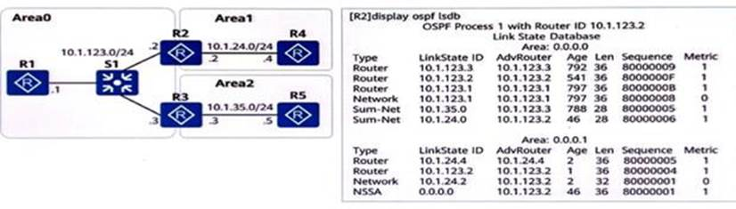
A. 此时 R4 不能访问地址 10. 1. 35. 5/24，因为 R4 所在的 Area1 内没有泛洪
R3-R5 互联网段路由信息
B. 若此时 R4 引入直连路由（环回口地址） ，则 R2 的 LSDB 中会新增 5 类
LSA，用于通告其他区域 OSPF 路由器该外部路由信息
C. Area1 内无 3 类 LSA，有 7 类 LSA，则该区域为 Totally NSSA 区域
D. Area1 内无 3 类 LSA，是因为 R2 在 OSPFArea1 内配置了命令 filter 2000
export(其中 2000 指 ACL2000 )，不向 Area1 发送 3 类 LSA
答案：AD
(多选题)网络管理员A希望使用 ACL 匹配特定的
BGp路由条目，请问以下哪些路由条目能被图中的 ACL 规则匹配 ?
A. 10. 0. 0. 6/32
B. 10. 0. 6. 0/24
C. 10. 0. 4. 0/24
D. 10. 0. 2. 1/32
答案：BC
(多选题 )网络管理员A 希望使用 IP PrefixList 匹配特定的
BGp路由条目，请问以下哪些路由能被图中的 IpPrefix List 匹配?
A. 10. 0. 3. 0/24
B. 10. 0. 0. 0/28
C. 10. 0. 1. 0/16
D. 10. 0. 0. 64/26
答案：BD
(多选题)以下哪些关于 BGP4+的 MP_REACH_NLRI 属性的描述是正确的
?
A. AFl ( address family )值为 2，代表传递的是 IPv6 路由
B. 携带 IPv6 路由前缀和掩码信息
C. 当下一跳地址长度为 16 时， NetworkAddress of Next
Hop字段携带的一定是全球单播地址
D. 下一跳地址长度可以为 16 或者 32
答案：ABCD
(多选题)IS-IS 路由协议具有良好的扩展性，在现网中广泛应用。关于
IS-IS 扩展性，以下哪些描述是正确的?
A. IS-IS 使用 TLV 结构构建报文，使 lS-IS 更具灵活性和扩展性
B. IS-IS 为了支持 lPv6 路由的处理和计算，新增了两个 TLV
C. NLPID 是 IS-IS 为了支持 IPv6 新增的一种 TLV
D. 不同于 OSPFv2， IS-IS 报文直接在数据链路层上转发
答案：ABD
(多选题)根据图中的信息，以下哪些选项中的推断是正确的
A. R1 与 3000:FDEA::3 是 IBGp邻居
B. R1 与 3000:FDE A. :3 这个地址建立了 TCp连接
C. R1 访问 3002::3/128 的最优出接口是 GigabitEthernetO/0/1
D. R1 通过 IBGp学到路由 3002::3/128
答案：ABCD
(多选题)传统的 BGP-4 只能管理 lPy4 单播路由信息，
MP-BGp为了提供对多种网络层协议的支持，对 BGP-4 进行了扩展。
MP-BGp采用地址族来区分不同的网络层协议，目前支持以下哪些地址族?
A. BGP-IPv4 组播地址族视图
B. BGP-VPN 实例 IPv6 地址族
C. BGP-VPNv 4 地址族
D. BGP-IPv6 单播地址族
答案：ABCD
(多选题)在 BGP/MPLS IpVPN 中，PE 上分配私网标签的方式有以下哪些项
?
A. 基于 VPN 实例的 MPLS 标签分配
B. 基于接口的 MPLS 标签分配
C. 基于路由的 MPLS 标签分配
D. 基于平台的 MPLS 标签分配
答案：AC
(多选题)在 MPLS VPN 中，为了区分使用相同地址空间的 IPv4 前缀，将
IPv4 的地址增加了 RD 值，以下描述正确的有哪些项 ?
A. 撤销不可达路由时，在 MP_UNREACH_NLRI 中携带 RD 值
B. 在 PE 设备上，每一个 VPN 实例都对应一个 RD 值，不同 PE 设备上的 RD
值必须相同
C. 发布可达路由时，在 MP_REACH NLRI 中携带 RD 值
D. RD 的总长度为 8 个字节
答案：ACD
(多选题)设备产生的信息可以向多个方向输出信息，为了便于各个方向信息的输出控制，信息中心定义了
10
条信息通道，使通道之间独立输出。缺省情况下，以下哪些通道对应的输出方向可以接收
Trap信息?
A. console 通道
B. srmpagent 通道
C. logbuffer 通道
D. trapbuffer 通道
答案：ABD
(多选题)割接完成后，一般需要针对下列选项中的哪些项目进行检查
?
A. 物理拓扑
B. 控制层面表项
C. 逻辑拓扑
D. 数据流向
答案：ABCD
(多选题)以下哪些操作可能会影响客户网络的正常运行 ?
A. 从设备上下载日志
B. 软件升级
C. 路由协议配置变更
D. debug 核心交换机上转发的所有 Ip报文
答案：ABCD
(多选题)如图所示，路由器所有的接口开启
OSPF，图中标识的Ip地址为设备的Loopback0接口的 Ip地址，R1. R2 的
LoopbackO 通告在区域 1，RA 的 LoopbackO 通告在区域 0，R3. R5 的
LoopbackO 通告在区域 2。以下关于该场景的描述，错误的有哪些项 ?
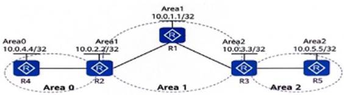
A. R4 的 LSDB 中有描述 10. 0. 1. 1. 10. 0. 2. 2 和 10. 0. 3. 3 的 3 类
LSA
B. 在 R3 上可以通过命令 ping 10. 0. 5. 5. Ping 通 R5 的环回口地址
C. RS 的 LSDB 中有描述 10. 0. 3. 3 的 3 类 LSA
D. 在 R3 上可以通过命令 ping 10. 0. 2. 2. Ping 通 R2 的环回口地址
答案：ACD
(多选题)在割接项目的项目调研阶段需要了解客户网络的哪些信息
?
A. 业务模型
B. 静态信息
C. 动态信息
D. 硬件环境信息
答案：ABCD
(多选题)如图所示，某网络部署 OSPF 实现网络互通，其中 Area1 部署为
Stub 区域，Area2部署为 Totally NSSA 区域，R4 的环回口 LoopbackO 未开启
OSPF，若在 R4 的 OSPF 进程内通过命令 import-routedirect
将环回口地址引入到 OSPF 网络中，使得其他设备可以访问该环回口地址，则
Areal 内会泛洪以下哪些项的 LSA?
A. 4 类 LSA
B. 3 类 LSA
C. 5 类 LSA
D. 2 类 LSA
答案：BD
(多选题)以下哪些项能被正则表达式 ^30. 成功匹配?
A. 200 100 300
B. 100 200 300
C. 300 200 100
D. 300 100 200
答案：CD
(多选题)以下哪些原因可能会引起 BGp邻居关系故障?
A. 邻居配置的 Keepalive 时间和本地配置的 Keepalive 时间不一致
B. 用 Loopback 口建立 EBGp邻居未配置 peerebgp-max-hop
C. 邻居的 AS 号与本地的 AS 号不一致
D. ACL 过滤了 TCp流量
答案：BCD
(多选题)以下哪些情况不影响 IS-IS 邻居关系建立，但是影响 IS-IS
路由计算 ?
A. Cost 类型不一致
B. IS-IS Level-1 路由器区域号不一致
C. 对多拓扑功能支持不一致
D. IS-IS Level-2 路由器区域号不一致
答案：AC
(多选题)以下哪些情况会导致 DHCp客户端无法获取 Ip地址?
A. 客户端的操作系统为 Linux
B. 客户端与服务器不在同一个网段，未配置中继设备
C. 客户端与服务器之间的链路有故障
D. 地址池中没有可用的 Ip地址
答案：BCD
(多选题)在多集群 RR 组网中，每个集群中部署了一台 RR
设备及其客户机，各集群的 RR 互为非客户机关系，并建立
IBGp全连接。以下关于
BGp路由反射器发布路由规则的描述，正确的有哪些?
A. 若某 RR 从 EBGp对等体学到的路由，此 RR 会传递给其他集群的 RR
B. 若某 RR 从非客户机 IBGp对等体学习到的路由，此 RR
会传递给其所有客户机
C. 若某 RR 从客户机学习到的路由，此 RR 会传递给其他集群的 RR
D. 若某 RR 从另一集群 RR 学习到的路由，由于 IBGp水平分割原则，此 RR
不会传递给其客户机
答案：ABC
(多选题)如果面对复杂的网络故障，并经过评估认为短时间内无法完成排障，而此时用户又急需恢复网络的可用性，以下做法中，错误的有哪些项
?
A. 告诉用户这是不可能实现的
B. 与用户沟通是否可以跳过故障节点，搭建替代的网络环境
C. 不通知客户的情况下，直接搭建替代的网络环境
D. 始终尝试排除故障，不将当前的排障难度告知用户
答案：ACD
(多选题)MPLS 转发流程中，以下关于 lngress
节点处理过程的描述，正确的有哪些项?
A. 查看 NHLFE 表项，可以得到出接口
.下一跳.出标签和标签操作类型，其中标签操作类型为 Swap
B. Ingress 节点收到数据包之后，查看 FIB 表，根据目的 Ip地址找到对应的
Tunnel lD
C. 在 Ip报文中压入出标签，同时处理 TTL，然后将封装好的 MPLS
报文发送给下一跳
D. 根据 FIB 表的 Tunnel ID 找到对应的 NHLFE 表项，将 FIB 表项和 NHLFE
表项关联起来
答案：BCD
(多选题)某园区部署 IS-IS 实现网络互通，在某 IS-IS
路由器上进行了如下选项的配置，以下哪些命令可以实现对网络收敛速度的控制
?(多选)
A. [Huawei-isis-1] timer Isp-refresh 1200
B. [Huawei-isis-1] lsp-length originate 1024
C. [Huawei-isis-1] flash-flood 6 max-timer-interval 100
D. [Huawei-isis-1] timer lsp-generation 5
答案：ABCD
(多选题)如图所示的拓扑，已知所有路由器运行 OSPFv3
协议，且邻居关系均正常建立， R1 上不会产生哪些类型的 LSA?(多选 )
A. lnter-Area-Router LSA
B. Link-LSA
C. Intra-Area-Prefix-LSA
D. lInter-Area-Prefix-LSA
答案：AD
(多选题)DHCp绑定表可以包含以下哪些信息 ?(多选)
A. 租约时间
B. MAC 地址
C. 接入端口
D. Ip地址
答案：ABCD
(多选题)以下哪些项会引起 VRRp备份组震荡?(多选)
A. Backup设备接口丢包
B. 两端的 VRRp备份组抢占延时配置不一致
C. 通告报文的时间间隔过小
D. 传输 VRRp通告报文的链路震荡
答案：ABCD
(多选题 )通过在交换机SW1 上执行命令display mac-address flapping
record 可以查看SW1上所有的 MAC 地址漂移的记录。如图所示，MAC 地址
0000-0000-0007 可能发生过几次地址漂移?
A. 65534
B. 300
C. 65535
D. 65536
答案：CD
(多选题)根据图中的信息，以下哪些选项中的推断是正确的
?(多选)
A. R1 的 GEO/0/1 接口使能了 IS-IS IPv6
B. R1 的 GEO/O/0 接口的 IS-IS 接口类型是 Level-1-2
C. R1 的 GEO/0/0 接口网络类型为 P2P
D. R1 的 GEO/0/1 接口的 IS-IS 接口类型是 Level-
答案：AB
(多选题)网络管理员A想使用AS-PathFilter 匹配到
BGp路由属性AS_PATH【100， 200
,300】的路由条目，请问以下哪些项的配置可以满足网络管理员A的要求
?(多选)
A. ipas-path-filter 1 permit $
B. ipas-path-filter 1 permit _300$
C. ipas-path-filter 1 permit 10.
D. ipas-path-filter 1 permit .*
答案：ACD
(多选题)以下哪些原因会导致 PIM-DM
网络中，用户主机发出点播请求，但是无法收到组播数据?(多选 )
A. 组播路由器上无到达组播源的路由
B. 与用户主机直连的路由器接口未使能 PIM-DM
C. 组播路由器配置了组播源过滤规则，从而将组播源发送的组播数据丢弃
D. 与用户主机直连的路由器接口未使能 IGMP
答案：ACD
(多选题)网络运维包括网络配置管理与网络监控管理，以下哪些项可以实现网络的配置管理功能﹖（多选
)
A. Syslog
B. SNMP
C. NETCONF
D. cLI
答案：BCD
(多选题)割接前后需要采集以下哪些网络中的静态信息进行对比分析，来判断割接前后业务量是否正常
?
A. License
B. 拓扑信息
C. 带宽利用率
D. 设备版本
答案：ABD
为了加快 IS-IS 网络中链路故障的感知速度 ,可以将 IS-IS 与 BFD
联动。
A. 正确
B. 错误
答案：A
在 0SPF 中， ABR 会将 NSSA 区域中所有的 7 类 LSA 转化为 5 类
LSA。
A. 正确
B. 错误
答案：B
在设备上配置 DHCP Relay 功能时,其中继连接客户端的 VLANIF
接口必须绑定 DHCp服务器组,而且绑定的 DHCp服务器组中必须配置所代理的
DHCp服务器 Ip地址。
A. 正确
B. 错误
答案：A
从用户的角度出发,凡是影响业务的现象都可以定义为故障。
A. 正确
B. 错误
答案：A
display interface GEO/O10 一次 ,友现 IotaEror
计数(该接口物理层的错误报文总数目 )不是 0.
此时可以断定当前时故降仍未消失。
A. 正确
B. 错误
答案：A
BFD 会话 down 会导致直连链路不通。
A. 正确
B. 错误
答案：B
IS-IS 协议视图下配置了 ipv6 enable topology
standard,该命令的含义是 Pv4 与 IPv6 共用一个拓扑。
A. 正确
B. 错误
答案：A
如果发现设备温度过高则可断定风扇发生了故障
A. 正确
B. 错误
答案：B
当部署 BCPIMPLS TP VPN 时,OSPF 的 VPN 路由标记 (VPN Route
Tag)不在MP-BGp的扩展团体属性中传递
,只是本地概念,只在收到MP-BGp路由并且产生 OSPFLSA 的PE
路由器上有意义。/
A. 正确
B. 错误
答案：B
在 MPLS 网络中 ,运行 Dp协议的 SR 之间通过交换
LDp消息来实现邻居发现.会话建立与维护以及标签管理等功能。为了保证消息传递的可靠性所有
LDF 消息的发送和接收均需基于 TCp连接。
A. 正确
B. 错误
答案：B
基本 QinQ 能根据业务种类选择外层 Tag 封装的方式。
A. 正确
B. 错误
答案：A
以太网中部署端口隔离技术可以实现二层互通三层隔离
,使组网更加灵活。
A. 正确
B. 错误
答案：B 判断
BGp路由策略可以控制路由的发布和接收。 A. 正确
B. 错误
答案：A
在 VLAN 聚合技术中 ,使用多个 Sub-VLAN 隔离广播域,并将这些
Sub-VLAN 聚合成一个逻辑的 Super-VLAN 某公司将不同部门划分到不同
Sub-VLAN,因为 Sub-VLAN 不仅包含物理接还可以建立三层 VLANIF 接口
,可以直接与外部网络进行三层通信。
A. 正确
B. 错误
答案：B
为了防止黑客通过 MAC 地址攻击用户设备或网络，可将非信任用户的 MAC
地址配置为黑洞 MAC 地址，过滤掉非法 MAC 地址.当设备收到目的 MAC 或源 MAC
地址为黑洞 MAC地址的报文，直接丢弃。
A. 正确
B. 错误
答案：A
具有丰富经验的高级工程师可以仅凭借经验快速解决故障
,效率很高。
A. 正确
B. 错误
答案：A
通过 display ip interface GE0/D/D 命令,能够查看该接口下收到 ping
报文的统计信息。
A. 正确
B. 错误
答案：A
缺首情况下,LDp邻接体之间会基于 32bit 地止的 Ip路由触发建立
LSP。
A. 正确
B. 错误
答案：A
BGP/ MPLS IpVPN 只能使用 LDp来构建公网随道。/
A. 正确
B. 错误
答案：A
OSPFv3 的 Router lD 需要配置为 128bit 长度的点分十进制。
A. 正确
B. 错误
答案：B
IEIF 利用 OSPF 扩展性强的特点对 OSPF
的功能进行了扩展。使其能够支持 IPv6 网络 , 功能扩展后的协议称为 OSPFv3.
OSPFv3 与 OSPFv2 可以兼容
A. 正确
B. 错误
答案：B
OSPFv2 演进到 OSPFv3 时,LSA 格式及作用完全相同只是 LSA
中的网络层地址由 IPv4 变为 IPv6。
A. 正确
B. 错误
答案：B
由于 BGp是 EGp路由协议所以 BGp路由判断策略只能在
EBGp邻居之间部署在 IBGP 邻居之间部署路由策略无效。
A. 正确
B. 错误
答案：B
同一台路由器的不同 ISIS
进程之间链路判断状态值息就认是隔离的。
A. 正确
B. 错误
答案：A
MPLS-直比 Ip转发要慢
A. 正确
B. 错误
答案：B
缺省情况下,路由器上运行的每一个 0SPF 进程的 Domain ID
与该进程的进程号保持一致可以在进程下通过 domain-id 命令进行修改
A. 正确
B. 错误
答案：B
如图所示路由器所有的接口开启 OSPF 其中 R4 和 R5 可以建立 OSPF
虚连接。
A. 正确
B. 错误
答案：B
如图所示某园区部署 0SPF 其中 Area1 部署为 NSSA 区域。缺首情况下
R2 会自动产生Type 7LSA 的缺首路由并在 NSSA 区域泛洪。
A. 正确
B. 错误
答案：A
如图所示所有路由器运行 OSPF 因为 R3 处于骨千区域所以在 R3 的 LSDB
中不存在三类 LSA。
A. 正确
B. 错误
答案：B
如图所示路由器所有的接口开启 0SPF 链路的 Cost 值如图中标识 R2 的
Loogback0 按口通告在区域 0 则在区域 1 中 R2 和 R3 都会以 Typae3 LSA
的形式专递 10. 02. 2/32 的路由信息。
A. 正确
B. 错误
答案：A
某企业购买了两家运营商的专线,为了优判断化线路企业使用
6Gp协议学习了两家运营离的路由条目。但是企业发现如此配置后.出口路由的流量大增
,网络工程排查后发现是两家运营商的流量通过企业出口路由器相互传递了。于是企业打算使用路由策略使得不同运商之包的流量不再相互传递请可下图中的配置是否正确
?
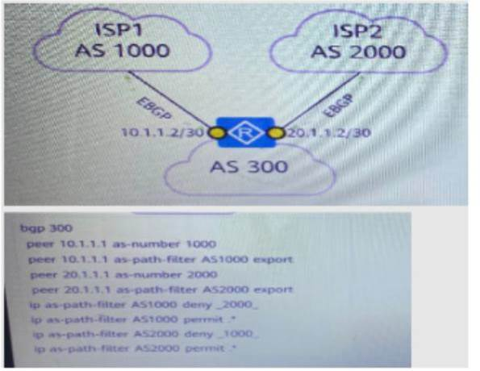
A. 正确
B. 错误
答案：A
如图所示运营商 BGP/MPLSIPVPN 骨千网通过 Dp构建 Sp若想实现用户 X
两个站点之间通过 BGP/MPLSIPVPN 网络互通则 PE1 和 PE2 之间必须使用 32bit
掩码的 Loopback 接口地址来建立 MP-IBGp对等体关系。
A. 正确
B. 错误
答案：B
通过 VLAN 聚合技术可以实现一个 Sub 判断 VLAN
对应多个广播域，提高了编址的灵活性。
A. 正确
B. 错误
答案：A
割接前的信息采集可以用于判断割接前后业务是否正常
A. 正确
B. 错误
答案：A
在进行设备软件升级时,必须做好充分的准备工作
,制定升级方案.回退方案
A. 正确
B. 错误
答案：A
部署 PPPMultilink
之后数据将根据源地址和目的地址均匀的分配在各条成员链路上。
A. 正确
B. 错误
答案：B
访问控制是指在网络路由可达的基础上基于业务管控的需要对特定的访问流量进行限制或阻断。
A. 正确
B. 错误
答案：A
高危操作是指所有可能影影响设备稳定运行
.客户业务正常运转.或网管正常监控的操作。
A. 正确
B. 错误
答案：A
割接项目的前期调研主要是与客户及其他各个参与方沟通协调并彩集网络信息用于分析。
A. 正确
B. 错误
答案：A
客户的项目组作为网络的最终使用者 ,对网络项目做出最终评价
A. 正确
B. 错误
答案：B
如果邻居未通告某条路由,则表示邻居可能没有把关于该路由的描述信息放入本地的
OSPF 链路状态数据库中
A. 正确
B. 错误
答案：A
如果清点的货物与装箱单上的数量不一致可以先开箱验货再联系厂家处理。
A. 正确
B. 错误
答案：B
设备上架的操作流程是先准备工具再安判断装挂耳
,根据现场情况再安装浮动螺母和滑道最后安装设备到机柜
A. 正确
B. 错误
答案：A
设备作为 SSH 服务器时必须配置本地判断密钥对
A. 正确
B. 错误
答案：A
项目割接的回退时间,可在割接时临时根据情况决定，不需要提前计划。
A. 正确
B. 错误
答案：B
项目验收会只要甲乙双方到场就可以了不需要第三方参与。
A. 正确
B. 错误
答案：B
小王在进行开箱验货时,发现设备外观并无损坏且第一次上电时设备的所有模块都是正常运行的但是经过连续运行
24 小时后板卡就出现了故障那么该情况是不符合走DOA 流程的条件的。
A. 正确
B. 错误
答案：B
在进行设备软件升级时,必须做好充分的准备工作
,制定升级方案.回退方案。
A. 正确
B. 错误
答案：A
执行 resetisis all 后,IS-IS 协议进程要重判断启.邻居要重新建立 ,而
IS-IS 的各类统计不会清零。
A. 正确
B. 错误
答案：B
Ip报文中用 Tos 字段进行 QOS 标记 Tos 字段中是使用前 6bit 来标记
DSCp的。 A. 正确
B. 错误
答案：A
端到端时延等于路径上所有处理时延与判断队列时延之和
A. 正确
B. 错误
答案：B
BFD
只是一种通用的快速检测技术自身可以实现快速倒换的功能，没有必要和其他快速倒换技术一起使用
A. 正确
B. 错误
答案：B
带宽决定了数据传输的速率而且传输的最大带宽是由传输路径上的最小链路带宽决定的
A. 正确
B. 错误
答案：A
VRRp报文不支持认证
A. 正确
B. 错误
答案：B
路由协议通过 Hello 报文就可以检测到故障所以不需要 BFD
A. 正确
B. 错误
答案：B
VXLAN 采用 Mac inTCp封装方式将二层报文用三层协议进行封装
A. 正确
B. 错误
答案：B
流镜像分为本地流镜像和远程流镜两种方式
A. 正确
B. 错误
答案：A
BFD 可以实现 ms(毫秒 )级别的链路状态检测。
A. 正确
B. 错误
答案：A
BFD 通过周期性检测报文来判断故障是否发生
,是一个依赖路由协议的快速故障检测机制。
A. 正确
B. 错误
答案：B
BFD(双向转发检测)技术属于快速检测技术
,但它较为复杂,需要特殊厂商设备支持。
A. 正确
B. 错误
答案：B
如图所示，某园区部署 OSPF，其中 Area1 部署为 NSSA
区域，缺省情况下， R2 会自动产生 Type 7LSA 的缺省路由并在 NSSA
区域内泛洪。
A. 正确
B. 错误
答案：A
OSPFv3 的 RouterID 需要配置为 128bit 长度的点分十进制。
A. 正确
B. 错误
答案：B
某园区部署了 IPv6 进行业务测试，部署判断初期，工程师想要通过 IPv6
静态路由实现网络互通.在创建 1Pv6
静态路由时，可以同时指定出接口和下一跳，或者只指定出接口或只指定下一跳。/
A. 正确
B. 错误
答案：A
BGP4+通过 Update 报文中的 Next_Hop判断属性携带 IPv6
路由的下一跳地址。
A. 正确
B. 错误
答案：B
ISIS 通过新增 TLV 携带 IPv6 地址和可达判断信息来支持 IPv6
路由的处理和计算
A. 正确
B. 错误
答案：B
在 ISIS 协议视图下配置 ipv6 判断preference，该命令的作用是配置
ISIS 协议生成的IPv6 路由的优先级。
A. 正确
B. 错误
答案：A
遇到大型的网络割接项目，可以把其分化成多个相对独立
.但是前后又有关联的小割接。
A. 正确
B. 错误
答案：A
VRRp报文不支持认证
A. 正确
B. 错误
答案：B
在一个 MPLS 域中，根据 LSR 对数据处理判断方式的不同，可将 LSR
分为 Ingress LS R. TransitLSR 和 EgressLSR.对于同一个 FEC，某-LSR
可以是该 FEC 的 Ingress LSR 也可以是该 FEC的 Transit LSR
A. 正确
B. 错误
答案：A
对于同一个 MAC 地址手工配置的 MAC
表项优先级高于自动生成的表项。/
A. 正确
B. 错误
答案：A
部署 BGPIMPLSIPVPN 时，当两个 VPN
判断有共同的站点，则该共同站点一定不能与两个 VPN
其他站点使用重叠的地址空间
A. 正确
B. 错误
答案：B
OSPFv3 的 RouterID 需要配置为 128bit 长度的点分十进制。
A. 正确
B. 错误
答案：B
从用户的角度出发凡是影响业务的现象都可以定义为故障
A. 正确
B. 错误
答案：A
BGPIMPLSIPVPN 中，如果 PE-CE 之间使用 OSPF
协议交互路由信息，则使用域标识符 (DomainID)来区分 VPI
实例中引入的路由是否来自同一个 OSPF 域。
A. 正确
B. 错误
答案：A
为了加快 IS-IS 网络中链路故障的感知速度，可以将 IS-IS 与 BFD
联动。
A. 正确
B. 错误
答案：A
DU 标签分发方式下，如果采用 Liberal
保判断持方式，则设备都会保留所有 LDpPeer 分发的标签无论该 LDPPeer
是否为到达目的网段的最优下一跳
A. 正确
B. 错误
答案：A
周台路由器的不同 ISIS 进程之间链路状态值息就认是隔离的。
A. 正确
B. 错误
答案：A
通过 display current-configuration
查看的是内存中正在运行的配置.。
A. 正确
B. 错误
答案：A
OSPF 快速收敛是为了提高路由的收敛速度而做的扩展特性， 其中
PRC(Partial RouteCalculation，部分路由计算)的工作原理是
:当网络拓扑改变的时候，只对受影响的节点进行路径计算，从而加快路由计算。
A. 正确
B. 错误
答案：B
BGp可使用的路由策略工具主要有 Filter-policy 和 Route-policy，其中
Fiter-policy 只能过滤路由，Route-policy 只能修改路由
A. 正确
B. 错误
答案：B
BGp路由策略可以控制路由的发布和接收。
A. 正确
B. 错误
答案：A
OSPFv3 采用与 OSPFv2 相同的路由通告方式:在 OSPFv3 区域视图通过
network 命令进行通告。
A. 正确
B. 错误
答案：B
BGP4+通过 Update 报文中的 Next Hop判断属性携带 IPv6
路由的下一跳地址。
A. 正确
B. 错误
答案：B
以太网中部署端口隔离技术可以实现二层互通三层隔离，使组网更加灵活。
A. 正确
B. 错误
答案：B
在 BGP/MPLSIPVPN 中，OSPF 多实例判断进程使用 DN 位防止 Type5 LSA
环路。
A. 正确
B. 错误
答案：B
当网络中部署了 MPLS 且网络层协议为 Ip判断时，FEC
所对应的路由必须存在于 LSR 的 Ip路由表中否则该 FEC
的标签转发表项不生效。
A. 正确
B. 错误
答案：A
当 DHCp客户端与 DHCp服务器之间存在中继设备时，如果
DHCp服务器全局地址池中的 Ip地址与中继设备上连接客户端的 VLANIF 接口的
Ip地址不在同一个网段，则会引起 DHCp故障。
A. 正确
B. 错误
答案：B
割接前的信息采集可以用于判断割接前后业务是否正常。
A. 正确
B. 错误
答案：A
割接前的信息采集可以用于判断割接前后业务是否正常。
A. 正确
B. 错误
答案：A
割接回退是指把当前变更回退到执行前的状态。
A. 正确
B. 错误
答案：A
同一台路由器的不同 IS-IS
进程之间，链路状态信息默认是隔离的.
A. 正确
B. 错误
答案：A
如图所示，路由器所有的接口开启 OSPF，链路的 Cost 值如图中标识，
R2 的 Loopback0接通告在区域 0，则在区域 1 中，R2 和 R3 都会以 Type3LSA
的形式传递 10. 0. 22/32 的路由信息。
A. 正确
B. 错误
答案：A
如图所示，网络管理员A在 R1 路由器上，将发送到 R2
的路由条目通过路由策略修改 LocalPreference 值后，可以控制流量离开 AS100
的路径。
A. 正确
B. 错误
答案：B
OSPF 的 LSA 头部中包含了多个字段，其中链路状态类型 (Link State
Type ).链路状态 ID(Link State ID).通告路由器 (Adv
Router)三元组唯一地标识了一个 LSA。
A. 正确
B. 错误
答案：A
传统的 BGP-4 只能管理 IPv4
单播路由信息，MP-BGp为了提供对多种网络层协议的支持，对 BGP-4
进行了扩展。其中，MPBGp对 IPv6 单播网络的支持特性称为 BGP4+， BGP4+通过
Next Hop属性携带路由下一跳地址信息。
A. 正确
B. 错误
答案：A
故障发生后，需要及时收集和备份各类故障信息，作为处理故障的参考，此外，在向华为技术有限公司紧急求助时，需要将故障信息提供给华为支持人员，以便于其定位和排除故障。
A. 正确
B. 错误
答案：A
以太网中部署端口隔离技术可以实现二层隔离三层互通，隔离同一 VLAN
内的广播报文。
A. 正确
B. 错误
答案：B
某园紧部署了 IPv6 进行业务测试，部署初期，工程师想要通过 IPv6
静态路由实现网络互通。在创建 Pv6
静态路由时，必须同时指定出接口和下一跳
A. 正确
B. 错误
答案：B
在ISS 网络中，若在某 Level-1-2 设备的 S-IS 进程中配置命令
attached-bit advertise never，则收到该设备发送的 LSp的 Level-1
设备会自动生成缺省路由。
A. 正确
B. 错误
答案：B
完成对一个割接项目的调研之后，需要对客户的需求进行分析
.梳理，分析客户对割接后网络的新需求，如带宽，网络 KPI
指标，新业务承载能力等。
A. 正确
B. 错误
答案：A
企业网中，通常存在 DHCP 客户端和
DHCp服务器不在同一个广播域的场景，在此场景下可配置网络设备作为
DHCp中继服务器。无论有多少台 DHCp服务器，网络中只能有一台
DHCp中继服务器。
A. 正确
B. 错误
答案：B
在制定割接方案时需要包含详细的回退方案，同割接操作一样，需要精确到每一步操作，这样当割接失败时可以有条不套地进行回退。
A. 正确
B. 错误
答案：A
如图所示，某园区部署 OSPF，其中 Area1 部署为 NSSA 区域。若在 R3
的 OSPF 进程中引入静态路由实现对某外部网络的访问，则 R4 会自动发布
Type7LSA，并生成缺省路由实现对该外部网络的访问。
A. 正确
B. 错误
答案：B
当一个 BGp对等体加入
BGp对等体组中时，该对等体将获得与所在对等体组相同的配置:当对等体组的配置改变时，组内成员的配置也相应改变。
A. 正确
B. 错误
答案：A
OSPFv3 不支持在 OSPFv3 区域视图通过 network 命令使能接口的 OSPFv3
功能，只能在接口视图下使能 OSPFv3 功能。
A. 正确
B. 错误
答案：A
为了防止黑客通过 MAC 地址攻击用户设备或网络，可将非信任用户的 MAC
地址配置为黑洞 MAC 地址，过滤掉非法 MAC 地址。当且仅当设备收到源 MAC
地址为黑洞 MAC 地址的报文，直接丢弃。
A. 正确
B. 错误
答案：B
BGP/MPLSIpVPN 内层采用 MP-BGp分配的标签区分不同的 VPN
实例，外层可采用多种隧道类型，例如 GRE 隧道。
A. 正确
B. 错误
答案：A
当部署 BGP/MPLSIPVPN 时，如果 PE 和 CE 之间使用 OSPF
交互路由，为避免出现路由环路，PE 之间在传递 VPN 路由时需要同时携带
VPNRoute Tag 和 Domain ID。
A. 正确
B. 错误
答案：B
LDp会话基于 TCp连接，当两台 LSR 之判断间要建立
LDp会话前，它们需要先确认对端的 LDp传输地址，缺省情况下，公网的
LDp传输地址等于节点的 LSR ID。
A. 正确
B. 错误
答案：A
如图所示的 BGP/MPLSIPVPN 场景 PE1 为 BGp对等体 CE1 和 CE3 配置了
So0 属性，当 PE1 将从 CE1 学习的路由发送给 CE3 时会携带 So0
属性，从而避免路由环路。